生成时间：2026-09-17T13:19:34+08:00
今日保留论文数：9
内容构成：今日新文 9 篇；补充推荐 0 篇；经典旧文精读 0 篇
高能天体物理重点
1. The unidentified PeV source LHAASO J2108+5157: A microquasar remnant?
- 来源：arXiv / astro-ph.HE
- 链接：https://arxiv.org/abs/2609.18353v1
- 作者：Josep Martí, Pedro L. Luque-Escamilla, Leandro Abaroa, Gustavo E. Romero, Valentí Bosch-Ramon, Josep M. Paredes, Cintia S. Peri
- 评分：novelty 8/10，importance 9/10，relevance 10/10，final 10.00/10
- 推荐理由：Highly relevant gamma-ray/PeVatron paper on LHAASO J2108+5157, incorporating GeV Fermi-LAT emission, VERITAS/LST constraints, and a hadronic relic microquasar interpretation. Directly addresses an unidentified ultra-high-energy Galactic gamma-ray source and possible Galactic PeVatron population.
中文题目：未识别的 PeV 源 LHAASO J2108+5157：一个微类星体遗迹？
做了什么：这篇论文把 LHAASO J2108+5157 解释为一次过去微类星体喷流活动留下的“化石”强子源。作者试图解决一个很不寻常的观测组合：LHAASO 在数十到数百 TeV 甚至 PeV 能段看到硬的超高能伽马辐射，Fermi-LAT 在同方向看到较紧致的 GeV 源，但 VERITAS 和 LST-1 在中间 TeV 能段给出很强上限，导致谱能量分布在 GeV 与 TeV 之间出现明显低谷。论文提出，单次注入的相对论质子经过能量依赖扩散后会自然分层：低能质子仍滞留在近处较致密分子气体中产生 GeV 辐射，高能质子扩散到更远气体云中产生 TeV 到 PeV 辐射。这样无需引入两个完全无关的源，就能同时解释谱的双峰样貌、空间上紧致与延展成分的差异，以及缺少明亮射电和 X 射线对应体。
为什么重要：LHAASO J2108+5157 是银河系 PeVatron 候选体中很棘手的对象，因为它既有超高能伽马射线，又缺乏清楚的低能多波段对应体。传统解释常在脉冲星风云、超新星遗迹、星团或暗气体云照亮模型之间摇摆，而这篇文章把“过去活动过、现在熄灭的微类星体喷流”作为 PeV 粒子加速器候选类群。若这种解释成立，它会扩大银河系 PeVatron 的候选族群：不只有年轻超新星遗迹或大质量星团，X 射线双星喷流的遗迹也可能在源熄灭后很久仍以伽马射线形式可见。
理论 / 观测 / 仪器方法价值：本文的价值主要在理论建模和源类识别：它用时间依赖强子输运把一个反常的宽带谱形与空间形态联系起来，而不是仅仅对谱能量分布做经验拟合。对观测来说，它给出可检验预言：GeV 与 PeV 成分应追踪不同距离、不同密度的气体结构；中间 TeV 低谷应来自扩散时标、年龄和云位置的组合；射电和 X 射线非探测不是模型缺陷，而是遗迹阶段的自然结果。对方法来说，它提醒我们未识别 PeV 源不能只按“是否有同位年轻非热源”筛选，还要考虑过去爆发留下的粒子回声。
为什么应该关注：如果你关心银河宇宙线起源，这篇文章值得看，因为它提出一种能把 PeV 加速、源熄灭、多云环境和能量依赖扩散放在同一框架内的解释。它不是简单说“这里有个分子云所以是强子源”，而是强调不同能量质子在有限年龄内到达不同目标气体，进而制造出看似断裂或双峰的伽马谱。未来 CTA、LHAASO 后续形态测量、Fermi-LAT 深度分析、分子线巡天和中微子上限，都可以直接检验这种图像。
展开详细解读：文章讲解、背景、理论、重点章节、图表与相关工作
文章详细讲解
科学问题：LHAASO J2108+5157 的核心难点不是“有无高能伽马射线”，而是宽带数据拼在一起后显得很不连续。LHAASO 报告了延伸到数百 TeV 的超高能辐射，Fermi-LAT 方向上有较紧致的 GeV 源，但 VERITAS 和 LST-1 在中间 TeV 区间没有看到相应连续外推的通量，给出了压低谱的上限。若用单区、稳态、幂律粒子分布去解释，从 GeV 到 PeV 的谱很难自然穿过所有数据点和上限。因此本文问的是：是否可能由同一次粒子注入，在随时间演化和扩散筛选后，表现成两个看似分离的伽马成分？
作者怎么做：论文构造了一个时间依赖强子模型，假设过去存在微类星体喷流活动，向周围星际介质注入相对论质子。微类星体这里指含致密天体的 X 射线双星系统，其喷流可以在银河尺度上充当小型类星体式加速器。作者不要求当前仍有明亮喷流、射电核或 X 射线双星对应体，而是考虑喷流活动已经结束后的遗迹阶段。质子按能量依赖扩散传播，较低能质子扩散慢，仍主要停留在较近、较致密的气体附近；较高能质子扩散快，可以抵达更远的分子或原子气体目标。伽马射线主要由质子-质子碰撞产生的中性 pion 衰变给出。
关键结果：在代表性的星际介质条件下，模型可以同时解释三个事实。第一，GeV 源较紧致，因为低能质子仍集中在近源或近处云区。第二，TeV 到 PeV 辐射可以较硬且更延展，因为只有高能质子在源年龄内到达远处目标气体。第三，中间 TeV 区间出现低谷并不必然意味着两个无关源，而可能是扩散半径、目标云位置和质子谱截断共同造成的“输运缺口”。作者还强调，遗迹阶段的微类星体不一定有强射电或 X 射线同步辐射，因此缺少低能对应体与模型并不矛盾。
局限和下一步：这类模型的自由度不少，包括源年龄、注入能量、扩散系数归一化、扩散能量指数、气体云质量、云到源距离以及三维几何投影。当前摘要显示论文采用代表性条件证明可行性，但这种可行性不等于唯一性。下一步最关键的是把气体分布从示意几何推进到基于 CO、HI、尘埃和距离估计的三维模型，并用 LHAASO、Fermi-LAT、VERITAS、LST-1 以及未来 CTA 的能段分辨形态进行联合拟合。若未来发现 GeV 与 PeV 形态确实分别跟不同气体结构相关，并且中间 TeV 上限持续压低，那么微类星体遗迹解释会明显增强；反之，若高能辐射与气体无关或发现年轻脉冲星风云对应体，该解释就会受到挑战。
关键结果是怎么做出来的
本文最重要的结果是：一个单次注入的质子族群，在非均匀气体环境中经历能量依赖扩散后，可以产生看似“双成分”的伽马谱。数据链条从三个观测事实开始：Fermi-LAT 给出方向上空间较紧致的 GeV 源；VERITAS 与 LST-1 在中间 TeV 能段给出强上限；LHAASO 在更高能段探测到超高能甚至 PeV 候选辐射。作者没有把这些点分别归因于多个天体，而是检查一个过去爆发源能否在不同能段照亮不同气体目标。
样本或事件层面，这不是大样本统计论文，而是围绕单个未识别源 LHAASO J2108+5157 的个案建模。约束来自多仪器宽带谱能量分布和空间信息：GeV 位置与紧致程度、TeV 上限对谱形的排斥、LHAASO 高能点对 PeVatron 能力的要求，以及射电、X 射线非探测对现存加速器的限制。读者应把“事件数”理解为各仪器能段的通量点、上限和形态约束，而不是瞬变事件计数。
统计显著性方面，摘要没有给出新的探测显著性数字；论文的论证重点很可能是模型能否穿过已有谱点并低于上限。判断强弱时要看作者是否使用了似然或 \(\chi^2\) 统计，还是只做了代表性参数曲线。如果只是展示可行参数组，那么结论应解读为“微类星体遗迹是可行解释”，而不是“相对于所有替代模型已被统计优选”。若文中有表格列出参数，尤其需要看源年龄、总注入能量和扩散系数是否落在物理合理范围。
支撑结论的图表应包括宽带谱能量分布图、不同能量质子的空间分布图、气体云与伽马形态叠加图，以及射电或 X 射线上限比较。关键读法是检查模型曲线是否同时满足三类约束：在 GeV 点附近有足够通量，在 VERITAS 和 LST-1 上限以下有明显压低，在 LHAASO 能段重新抬升或保持硬谱。此外，要看空间模型是否真的能产生紧致 GeV 与延展超高能辐射，而不是只在谱上人为拼接。
系统误差和稳健性主要来自气体距离、气体质量、扩散系数、伽马产生截面、背景建模和仪器间交叉定标。尤其是中间 TeV “低谷”对上限很敏感：若源延展假设不同、背景区域选择不同或谱形假设不同，上限可能变化。Fermi-LAT 的 GeV 源也可能受银河弥散背景模板影响。可靠的稳健性检验应包括改变扩散系数、云距离、年龄、注入谱指数和高能截断后，仍能保留双峰样貌；还应说明不同仪器角分辨率造成的形态偏差是否会误导“紧致-延展”判断。
展开背景、理论、公式、模型、章节和图表导读
背景知识
LHAASO J2108+5157 属于银河系超高能伽马源，也就是在几十 TeV 到数百 TeV 能段仍可见的源。这类源之所以重要，是因为伽马能量达到 PeV 附近通常意味着母粒子能量更高：若是强子过程，质子能量需达到 PeV 量级；若是轻子逆康普顿过程，电子不仅要被加速到极高能，还会受到强烈冷却和 Klein-Nishina 效应限制。因此这类源常被作为银河 PeVatron 候选体。
历史上，银河 PeVatron 搜索主要围绕年轻超新星遗迹、脉冲星风云、大质量星团和银河中心展开。超新星遗迹有能量预算优势，但许多已知遗迹在 TeV 谱上并未明确显示 PeV 质子。脉冲星风云可以很亮，但高能端通常涉及电子冷却和形态随能量变化。星团和 OB 协会可以通过集体风或连续注入加速粒子。LHAASO 发现大量超高能源后，很多对象缺乏清晰低能对应体，迫使我们重新考虑更隐蔽或更短暂的加速器。
微类星体是银河系内含黑洞或中子星致密天体的双星系统，能发射相对论喷流。经典例子包括 SS 433、Cygnus X-1、Cygnus X-3、GRS 1915+105 等。喷流可以把机械能注入星际介质，形成激波、泡状结构和非热粒子。问题在于，大多数微类星体的活动具有间歇性：当我们今天观察时，中央引擎可能已经变暗，喷流痕迹也可能在射电或 X 射线中很弱，但过去加速出的质子仍可在周围气体中产生伽马辐射。
现在值得重看这个问题有两个原因。第一，LHAASO、HAWC、H.E.S.S.、VERITAS、MAGIC、LST-1 和 Fermi-LAT 共同给出了跨越多数量级能量的约束，谱上的“缺口”或“不连续”变得可诊断。第二，分子线、尘埃和 HI 巡天让我们能更好地把伽马源与星际气体关联起来。如果伽马辐射来自强子碰撞，那么目标气体的位置和质量与粒子扩散同等重要。
该领域常见误区之一是把“没有射电或 X 射线对应体”直接理解为“没有天体源”。对于遗迹强子源，当前没有强同步辐射并不奇怪，因为电子可能已冷却或注入比例很低，而质子寿命长得多。另一个误区是把不同能段的空间中心不完全重合视为反证；在扩散加气体照亮模型中，伽马亮区可以偏离原加速器位置。还有一个误区是把谱能量分布中的双峰必然解释为两个无关天体，本文正是要说明输运效应也能制造类似现象。
基础理论 / 方法脉络
基本物理图像是强子宇宙线在源附近被加速后向外扩散，并在遇到足够密的气体时通过 \(p p\) 碰撞产生 \(\pi^0\)，随后 \(\pi^0\) 衰变为两条伽马射线。伽马辐射强度取决于三个要素：源在过去注入了多少高能质子，质子经过给定时间后在空间和能量上如何分布，以及目标气体的密度与位置。与电子辐射不同，质子在典型星际介质中的能量损失较慢，所以过去爆发的“记忆”可以保存很长时间。
本文的关键假设是时间依赖且能量依赖的扩散。扩散系数通常写成 \(D(E)=D_0(E/E_0)^\delta\)，其中高能粒子扩散更快。若源年龄为 \(t\)，能量为 \(E\) 的质子能到达的典型半径约随 \(\sqrt{D(E)t}\) 增长。因此，低能质子仍集中在近源区，高能质子可以到达远处气体云。这种能量-空间耦合是本文解释 GeV 紧致源和 PeV 延展源的核心。
观测上，Fermi-LAT、VERITAS、LST-1 和 LHAASO 覆盖了不同能段、角分辨率和背景系统。Fermi-LAT 对 GeV 弥散背景敏感，成源分析依赖银河弥散模板；成像大气切伦科夫望远镜对较小角尺度和 TeV 能段敏感，但对很延展源的背景扣除可能损失通量；LHAASO 对超高能伽马具有大视场和高曝光优势。把这些数据放在一起时，上限与探测点的解释必须考虑源延展假设和能谱假设。
模型中的关键量包括质子注入谱指数、最高能量、总能量、源年龄、扩散归一化、扩散能量指数、气体云密度、云距离和源到云的三维几何。许多参数存在退化：更大的气体质量可以补偿更低的质子能量预算；更慢的扩散可以用更大的年龄部分补偿；更硬的注入谱可以缓解 PeV 端通量要求，但会影响 TeV 上限。单靠谱能量分布通常难以唯一确定这些参数，能量分辨形态和气体相关性才是关键。
常见系统误差还包括 \(p p\) 伽马产生截面的选择、重核增强因子、气体距离的运动学二义性、未解析源污染、Fermi-LAT 弥散模板不确定性，以及不同仪器能标差异。对 LHAASO J2108+5157 这样缺少明亮对应体的源，模型是否可信不只看曲线是否过点，还要看所需机械能是否符合微类星体喷流历史、所需扩散是否明显偏离银河平均值、以及是否产生应被射电或 X 射线巡天排除的次级辐射。
公式与推导
第一步从瞬时注入的宇宙线质子开始。假设过去一次喷流活动在 \(t=0\) 向介质中注入质子，注入谱可写为
其中 \(Q_p(E)\) 是单位能量注入粒子数，\(Q_0\) 为归一化，\(s\) 为注入谱指数，\(E_{\max}\) 为最高质子能量，\(E_0\) 为参考能量。总注入能量由
给出，用来检查微类星体喷流是否有足够能量预算。
第二步是扩散输运。忽略对流和连续能量损失时，质子数密度 \(n_p(E,\mathbf{r},t)\) 满足
其中 \(D(E)\) 是扩散系数。常用能量依赖形式为
这里 \(D_0\) 是参考能量 \(E_0\) 处的扩散系数，\(\delta\) 描述磁湍流谱导致的能量依赖。
第三步，在均匀各向同性扩散近似下，瞬时点源解为
其中 \(r\) 是源到目标气体的距离。相应扩散半径可定义为
当 \(r\ll r_{\rm diff}\) 时该能量质子能有效照亮气体；当 \(r\gg r_{\rm diff}\) 时通量指数压低。这正是低能近处、高手远处的分层机制。
第四步，将质子分布转成强子伽马发射率。对目标气体密度 \(n_{\rm H}\)，伽马发射率可写成近似积分
其中 \(c\) 是光速，\(d\sigma_{pp\}\)
ightarrow\gamma}/\(dE_\gamma\)) 是微分产生截面。粗略地，伽马能量 \(E_\gamma\) 通常对应母质子能量 \(E_p\sim 10E_\gamma\)，因此 \(100\\,\mathrm{TeV}\) 伽马要求接近 PeV 的质子。
第五步，观测到的能量通量来自体积分和距离稀释：
其中 \(d\) 是源区到地球距离，积分覆盖被质子照亮的气体体积。若把气体云近似为质量 \(M_{\rm gas}\) 的团块，通量大致随 \(W_p M_{\rm gas}/d^2\) 增长，因此能量预算、气体质量和距离高度退化。
第六步，为理解 GeV 与 PeV 成分的分离，可比较两个气体云位置 \(r_1\) 与 \(r_2\) 的照亮效率：
由于 \(D(E)\) 随 \(E\) 增大，高能质子在远云的指数抑制较弱，而低能质子在远云被强烈压低。这一式直接给出本文所谓能量依赖扩散造成的空间分层。
第七步，多仪器谱拟合通常以通量点和上限的似然表示。对近似高斯通量点，可写
其中 \(F_i\) 和 \(\sigma_i\) 是第 \(i\) 个通量点及误差，\(\boldsymbol{\theta}\) 包含 \(W_p\)、\(s\)、\(E_{\max}\)、\(D_0\)、\(\delta\)、\(t\) 和气体参数。对上限 \(F_j^{\rm UL}\)，模型必须满足 \(F_{\rm mod}(E_j;\boldsymbol{\theta})\lesssim F_j^{\rm UL}\)，更严格可用删失数据似然处理。
第八步，若采用泊松计数似然，仪器预测计数为
对应似然为
其中 \(T\) 是曝光，\(A_{\rm eff}\) 是有效面积，\(R_k\) 是能量和角响应映射，\(n_k\) 是观测计数。这个形式说明，检验微类星体遗迹模型最终应使用能谱和形态的联合似然，而不仅是画一条谱线。
模型拟合 / 应用方法
本文这类模型的拟合参数可分为三组。第一组是源注入参数，包括总质子能量 \(W_p\)、谱指数 \(s\)、最高能量 \(E_{\max}\) 和可能的低能截止。第二组是输运参数，包括源年龄 \(t\)、扩散系数 \(D_0\)、扩散能量指数 \(\delta\)，以及是否存在局部抑制扩散。第三组是环境参数，包括气体密度、气体云质量、云到源的距离、云到地球距离和三维几何。模型成败不在单个参数，而在这些参数组合能否同时满足 GeV 点、中间 TeV 上限、LHAASO 高能点和多波段非探测。
若论文采用谱能量分布拟合，最直接的统计量是对探测点计算 \(\chi^2\) 或高斯似然，对上限采用单侧约束或删失似然。更完整的方法是把 Fermi-LAT、VERITAS、LST-1 和 LHAASO 的事件级或图像级似然联合起来，但这通常需要公开响应和合作组内部数据。读者应关注作者是否报告置信区间、参数扫描或替代模型比较。如果只有一个“代表性模型”，结论应视为物理可行性展示，而不是严格模型选择。
残差诊断尤其重要。一个好的遗迹扩散模型应该在 GeV 段不过度延伸到 TeV 上限，在 PeV 段不需要不合理硬的质子谱，也不应在低能段产生已被 Fermi-LAT 排除的过亮弥散尾。空间残差方面，要看 GeV 源位置是否与近处气体结构和低能质子分布一致，高能源是否与更远目标气体或延展结构一致。如果模型只在总谱上成功，但空间预测与气体图不符，解释力会明显下降。
主要退化关系包括 \(W_p\) 与 \(n_{\rm H}\) 或 \(M_{\rm gas}\) 的乘积退化、\(D_0\) 与 \(t\) 的扩散半径退化、\(E_{\max}\) 与高能谱硬度退化，以及三维云距与投影角距退化。例如同样的角分离可以来自近距离小物理分离或远距离大物理分离，这会改变所需扩散速度。中间 TeV 低谷则对 \(D(E)t\) 与云位置特别敏感，参数稍变可能填平低谷或切断 PeV 成分。
模型可能失败的方式也很明确。如果所需 \(W_p\) 超过微类星体喷流合理机械能，或者需要远低于银河平均且没有物理动机的扩散系数，模型就变得牵强。如果深度射电或 X 射线观测发现活跃喷流、年轻脉冲星或壳型超新星遗迹，微类星体遗迹不一定被排除，但就不再是最简解释。反过来，若未来 CTA 或 LHAASO 能量分辨形态显示伽马辐射随能量从近处气体迁移到远处气体，这将是对该模型非常有力的支持。
重点章节 / 结果段落怎么读
数据和观测约束部分应优先阅读。这里应列出 LHAASO J2108+5157 的位置、角延展、能谱点，Fermi-LAT GeV 源的定位和谱形，VERITAS 与 LST-1 的上限，以及射电、红外、X 射线巡天中的非探测或候选对应体。读者要检查各仪器假设的源大小是否一致，因为上限对延展源会明显变化。
环境和候选源讨论部分是第二个重点。论文把对象解释为微类星体遗迹，因此应说明附近是否存在可能的旧喷流痕迹、气体云、空腔、双叶结构或可疑双星遗迹。即使没有明确中心天体，作者也需要说明为什么其他源类，例如脉冲星风云、超新星遗迹或星团，不是更自然的解释。
输运模型方法部分是论文的核心。读者应关注作者如何设置注入谱、源年龄、扩散系数和气体几何；是否采用单个云、多个云，还是连续气体分布；是否考虑质子能量损失、逃逸边界和各向异性扩散。这个部分决定“双峰谱”究竟是模型自然结果，还是参数手工调节出来的。
主结果部分应检查宽带谱能量分布和空间解释是否一起成立。理想情况下，论文会展示低能质子仍留在近处气体、高能质子到达远处气体的图，并把对应伽马谱分解成 GeV 成分与 TeV-PeV 成分。重点不是曲线是否美观，而是 TeV 上限是否真正约束了参数。
讨论与稳健性部分需要看作者如何处理不确定性。关键问题包括：扩散系数取银河平均值还是局部抑制值；气体距离是否可靠；微类星体喷流能量是否足够；电子伴随辐射为何不被看到；是否预言可探测中微子。若附录中有参数扫描、替代气体模型或仪器上限重算，这些比主文单条曲线更能说明结论强度。
建议重点查看的图表
-
宽带谱能量分布图：检查 Fermi-LAT 点、VERITAS 上限、LST-1 上限和 LHAASO 点是否放在同一能标下；模型曲线是否在中间 TeV 区间确实低于上限，而不是擦边依赖系统误差。
-
质子空间分布或扩散半径图：检查不同能量质子的 \(r_{\rm diff}\) 是否与近处和远处气体云位置匹配；低能质子是否被限制在能产生 GeV 紧致源的区域。
-
气体图与伽马位置叠加图：看 CO、HI、尘埃或分子云轮廓是否与 GeV 和 LHAASO 源分别相关；注意投影重合不等于物理关联，距离估计很关键。
-
模型成分分解图：检查 GeV 成分和 TeV-PeV 成分分别来自哪些气体区域或粒子能段；如果两条曲线只是人为相加而没有统一注入谱，应谨慎。
-
参数扫描或置信区间图：重点看 \(D_0\)、\(t\)、\(W_p\)、\(s\)、\(E_{\max}\) 的允许范围，以及是否存在大范围可行参数而非单点解。
-
多波段上限比较图：看模型预言的射电同步辐射、X 射线辐射或次级电子辐射是否低于现有巡天上限；这关系到“无对应体”是否真的自然。
-
替代模型比较表：如果有脉冲星风云、超新星遗迹或两源模型的比较，应看拟合优度、参数物理性和可检验预言，而不只看文字判断。
关键图表逐图导读
图 1：通常应是 LHAASO J2108+5157 周围的多波段或气体环境图。坐标轴应为赤经和赤纬或银河经纬，叠加 Fermi-LAT、LHAASO 以及可能的 VERITAS 或 LST-1 置信区域。读图时要看 GeV 源是否落在 LHAASO 误差范围内，气体云是否只是在投影上重合，以及不同仪器的点扩散函数是否会造成“紧致”和“延展”的表观差异。
图 2：最关键的图很可能是宽带谱能量分布。横轴是伽马能量，纵轴通常是 \(E_\gamma^2 dN/dE_\gamma\) 或 \(\nu F_\nu\)。数据点来自 Fermi-LAT 和 LHAASO，上限来自 VERITAS 和 LST-1，模型线应显示总强子辐射以及不同气体区域贡献。主要结论是单一注入质子经扩散筛选后能形成 GeV 与 PeV 两个峰状贡献。读图陷阱是上限依赖源延展和谱假设，不能把一条上限线当成绝对仪器事实。
图 3：若论文展示质子分布或扩散长度，横轴可能是距离或能量，纵轴是质子密度、扩散半径或照亮效率。应检查低能质子的空间分布是否足够集中，高能质子是否能到达远处目标气体。读图陷阱是三维距离常被投影角距替代，而模型对真实 \(r\) 非常敏感。
图 4：可能是按气体云或空间区域分解的伽马贡献图。横轴仍为能量，纵轴为能量通量，不同颜色表示近云、远云或不同目标气体。关键是看中间 TeV 低谷是否由两部分贡献之间的自然交接造成，而不是通过任意断开的两个谱拼出来。若近云贡献外推到 TeV 超过 VERITAS 或 LST-1 上限，模型就有问题。
图 5：若有参数空间图，横轴和纵轴可能是 \(D_0\)-\(t\)、\(W_p\)-\(n_{\rm H}\) 或 \(s\)-\(E_{\max}\)。置信区间或可行区域应显示哪些参数组合满足全部仪器约束。读图时要注意边界条件：如果可行区只出现在极端低扩散、极端高能量预算或不现实气体质量处，模型虽然能拟合但物理可信度较低。
图 6：若有射电和 X 射线上限图，应看模型预言的电子或次级辐射是否低于已有上限。横轴可能是频率或能量，纵轴是通量密度或能量通量。读图陷阱是强子模型仍可能产生次级电子，但其强度取决于磁场、年龄和目标密度；不能简单用“没有 X 射线”否定所有强子模型。
论文原图 / 可嵌入图片
Fig01
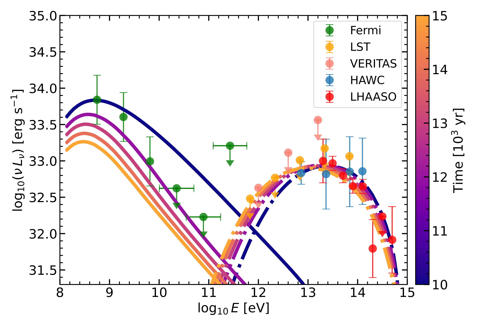
图注：SEDs of the $\gamma$-ray emission from both interaction regions. Solid lines (with a peak luminosity at GeV energies) correspond to $C_1$, while dotted-dashed lines (with a peak luminosity at TeV energies) correspond to $C_2$. Different colours indicate model spectra evaluated at different evolutionary times, as specified in the text, not distinct particle populations. The assumed distance to the MQR is $d=3.3\,$kpc. The current epoch is best represented by $t\sim 13\,$kyr, which corresponds to the violet lines.
对应解读：对应“建议重点查看的图表”中的宽带谱能量分布图、模型成分分解图，以及“关键图表逐图导读”的图2/图4解读。
入选理由：这是最能支撑日报核心判断的图：同时展示两个相互作用区域 C1 与 C2 的伽马射线 SED，区分 GeV 峰和 TeV–PeV 峰，并用不同演化时间比较当前约 13 kyr 情形。它直接检验单一注入质子经扩散筛选后能否形成 GeV 与 PeV 两个成分，以及中间 TeV 低谷是否自然低于 VERITAS/LST-1 约束。
来源与置信度：\(arxiv_source\)；high；\(arxiv_source\) / MQR.tex:figure[1]
Fig03
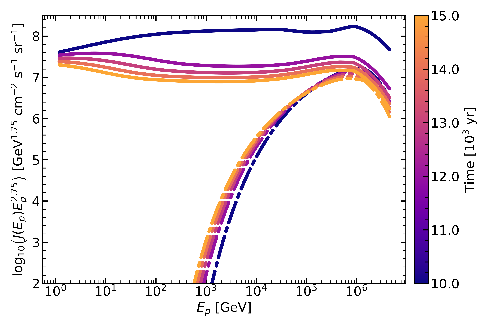
图注：Distribution of protons propagated through the ISM. Solid lines correspond to protons reaching $C_1$ while dotted-dashed lines show the same for $C_2$. The colour bar indicates the age of the system, $t_{\rm total}$.
对应解读：对应“建议重点查看的图表”中的质子空间分布或扩散半径图，以及“关键图表逐图导读”的图3解读。
入选理由：该图展示传播后的质子分布，并分别标出到达 C1 与 C2 的质子，是检验低能质子是否滞留近区、高能质子是否能到达远区目标气体的关键证据。它直接支撑日报中关于能量依赖扩散导致空间分离和谱分离的解释。
来源与置信度：\(arxiv_source\)；high；\(arxiv_source\) / MQR.tex:figure[3]
Fig04
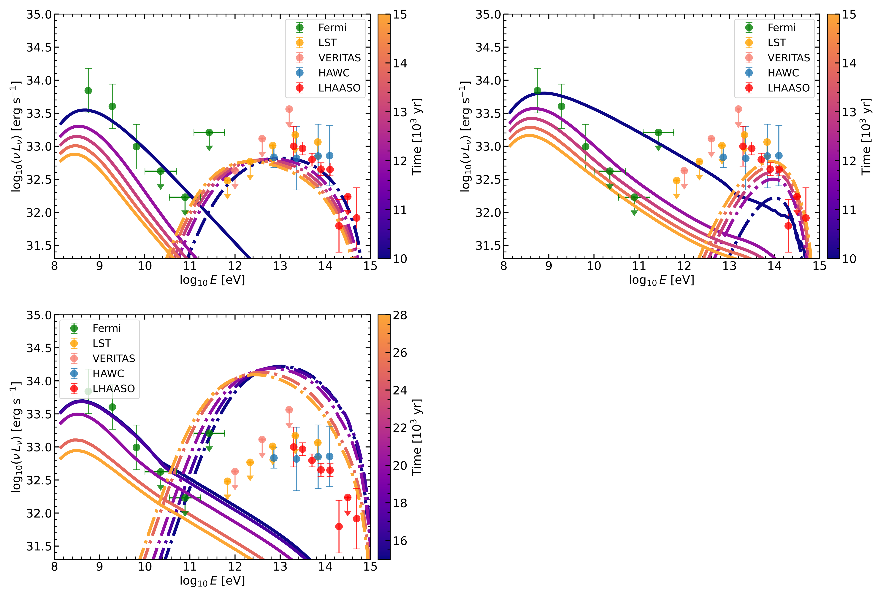
图注：Sensitivity of the SEDs to selected transport parameters. The panels show models in which one parameter is varied with respect to the fiducial case shown in Fig.~\(\ref{fig:sed}\): $D_0=2\times10^{26}\,{\rm cm^2\,s^{-1}}$ (\textit{top}), $\delta=0.3$ (\textit{middle}), and $t_{\rm MQ}=15$ kyr (\textit{bottom}). Solid and dot-dashed lines correspond to the emission from $C_1$ and $C_2$, respectively. Colours indicate the total system age. The comparison illustrates the sensitivity of the GeV/TeV--PeV separation to the transport parameters, rather than providing a full multidimensional scan.
对应解读：对应“建议重点查看的图表”中的参数扫描或置信区间图，以及“模型拟合”段落关于 D0、delta、源年龄 t 对 GeV/TeV–PeV 分离的退化关系讨论。
入选理由：虽然 caption 明确说明这不是完整多维参数扫描，但它系统比较了 D0、扩散指数 delta 和微类星体活动时间 \(t_MQ\) 改变后 SED 的响应，能直接说明中间 TeV 低谷和双峰结构对输运参数的敏感性，比单一代表性模型更有诊断价值。
来源与置信度：\(arxiv_source\)；high；\(arxiv_source\) / MQR.tex:figure[4]
Fig02
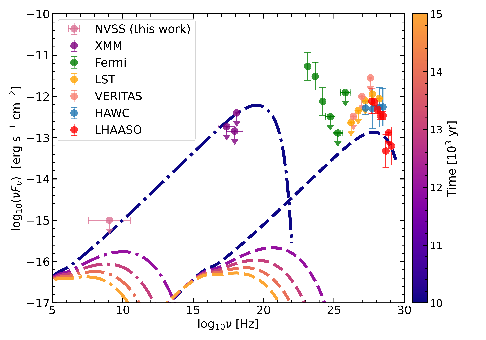
图注：Flux of the cocoon. The emission is produced by relativistic electrons when they interact with magnetic (synchrotron, dashed-dotted lines) and radiation (inverse Compton, dashed lines) fields. The colour-scale bar gives the total system age, $t_{\rm total}$. The current epoch is best represented by $t\sim 13\,$kyr, which corresponds to the violet lines. The $\gamma$-ray points are not associated with the cocoon emission and are shown only for comparison.
对应解读：对应“建议重点查看的图表”中的多波段上限比较图，以及“关键图表逐图导读”的图6关于射电/X 射线或电子辐射是否与无对应体相容的讨论。
入选理由：该图给出 cocoon 中相对论电子产生的同步辐射和逆康普顿辐射通量，可用于评估遗迹微类星体模型是否会产生可探测的低能对应体。其科学关联弱于伽马 SED 和质子扩散图，因为 caption 说明伽马点仅作比较且并非 cocoon 辐射本身，但仍能支撑‘无明显射电/X 射线对应体’的模型检验。
来源与置信度：\(arxiv_source\)；high；\(arxiv_source\) / MQR.tex:figure[2]
强相关工作
与本文最直接相关的是 LHAASO 对银河超高能伽马源的发现和目录工作、Fermi-LAT 对同一区域 GeV 源的分析，以及 VERITAS、LST-1 对该源或邻近区域的 TeV 上限。建议检索关键词包括 “LHAASO J2108+5157”, “Fermi-LAT counterpart LHAASO J2108+5157”, “VERITAS upper limits LHAASO J2108+5157”, “LST-1 LHAASO J2108+5157”。这些属于同一源或同类 PeVatron 候选体的观测背景，决定了本文模型必须解释的谱低谷和空间差异。
理论上，本文与“逃逸宇宙线照亮分子云”的经典框架关系很近，只是把加速器从超新星遗迹扩展到微类星体喷流遗迹。相似检索关键词包括 “cosmic ray diffusion molecular cloud gamma rays”, “runaway cosmic rays illuminate molecular clouds”, “hadronic PeVatron diffusion”, “microquasar jet cosmic ray acceleration”, “fossil microquasar remnant gamma rays”。基础参照可包括 Aharonian 与 Atoyan 关于逃逸宇宙线和云的工作，以及关于微类星体高能辐射和喷流-介质相互作用的综述。
可能的相反观点来自脉冲星风云、年轻或隐蔽超新星遗迹、恒星团加速和两个无关源重合的解释。对 LHAASO 未识别源，常见张力是：强子模型需要足够气体和合理能量预算，轻子模型需要解释电子在 PeV 端冷却后仍能产生高能伽马，复合模型则可能过度自由。建议检索 “LHAASO unidentified PeVatron PWN”, “dark accelerator TeV gamma rays”, “PeVatron molecular cloud association”, “microquasar PeVatron SS 433”。
同一事件 / 同类源线索：
相似工作：
基础理论 / 方法工作：
- https://ui.adsabs.harvard.edu/abs/1996A%26A...309..917A/abstract
- https://ui.adsabs.harvard.edu/abs/2005Sci...309..746A/abstract
相反观点 / 张力线索：
（未提供）
2. Detectability of 100 TeV Gamma Rays from PeV Cosmic Rays Accelerated in the Early Phase of a Supernova Shock Wave
- 来源：arXiv / astro-ph.HE
- 链接：https://arxiv.org/abs/2609.18226v1
- 作者：Tomotaka Nishikawa, Tsuyoshi Inoue, Alexandre Marcowith
- 评分：novelty 8/10，importance 8/10，relevance 10/10，final 9.70/10
- 推荐理由：研究早期超新星冲击中PeV宇宙线产生的100 TeV强子伽马射线，并给出CTA可探测距离；直接涉及PeVatron、SNR/超新星、TeV伽马和CTA，是高度相关且有明确观测预言的论文。
中文题目：超新星激波早期加速的 PeV 宇宙线，其 100 TeV 伽马射线能否被探测到？
做了什么：这篇文章讨论一个很具体但关键的问题：如果 II-P 型超新星爆发后几十天内，激波在致密红超巨星风物质中把宇宙线加速到 PeV 能段，那么由强子相互作用产生的约 100 TeV 伽马射线是否能穿过超新星光球辐射场，并被 CTA 看到。作者采用 Inoue 等人 2021 年动理学-MHD 模拟给出的宇宙线分布和星周介质密度剖面，计算随时间演化的中性 pion 衰变伽马射线通量，并加入超新星光球光子和宇宙背景辐射导致的双光子吸收。主要结论是，光球光子会把内禀 1–100 TeV 通量压低约一个数量级；但若红超巨星风质量损失率约为 \(10^{-3}\,M_\odot\,{\rm yr}^{-1}\)，且致密星周介质延伸到约 \(3\times10^{15}\,{\rm cm}\)，CTA 仍可能用 50 小时曝光在约 4 Mpc 内探测到 100 TeV 伽马射线。
为什么重要：银河宇宙线膝区附近的 PeV 粒子到底在哪里、何时被加速，是高能天体物理的核心问题。传统上人们把超新星遗迹看作主要候选，但年龄为 \(10^2\)–(10^3\,{
m yr}) 的遗迹观测通常给出的最大能量低于 PeV。这篇文章把焦点前移到超新星爆发后几十天的极早期，强调 PeVatron 可能是短暂的、被星周环境控制的，而不是在几百年后仍然明亮可见的遗迹阶段。
理论 / 观测 / 仪器方法价值：它的价值在于把数值模拟中的早期 PeV 加速图像转化为可检验的观测预言：给出随时间变化的 TeV 到 100 TeV 通量、吸收修正、CTA 探测距离，以及星周介质外半径对可探测性的影响。对理论而言，它检验致密红超巨星风中扩散激波加速能否解释 PeV 宇宙线；对观测而言，它指出 100 TeV 窗口比 GeV–TeV 窗口更直接地追踪 PeV 质子；对仪器策略而言，它强调附近 II-P 型超新星爆发后几十天内的快速、深曝光跟进。
为什么应该关注：如果你关心银河 PeVatron、超新星爆发早期多信使观测、CTA 的瞬变源策略，或者超新星星周介质质量损失史，这篇文章值得看。它告诉我们：非探测并不一定否定超新星加速 PeV 粒子，可能只是光球吸收、星周介质半径或距离不合适；而一次 3–4 Mpc 内的早期 100 TeV 探测，将会是对年轻超新星 PeVatron 图像非常直接的证据。
展开详细解读：文章讲解、背景、理论、重点章节、图表与相关工作
文章详细讲解
科学问题：这篇文章问的是，II-P 型超新星爆发后的最早几十天是否能通过 100 TeV 伽马射线暴露其 PeV 宇宙线加速能力。传统超新星遗迹观测常常发现 \(10^2\)–(10^3\,{
m yr}) 年龄阶段的最大粒子能量只有几十到几百 TeV，很难直接触及膝区。然而，激波速度最高、磁场放大最强、星周介质密度最高的阶段并不是几百年后，而是爆发后很短的早期。若红超巨星在爆发前经历高质量损失率风，激波可在致密星周介质中高效产生强子碰撞，从而生成高能 \(\pi^0\) 衰变伽马射线。
作者怎么做：作者没有从头构造任意参数化的宇宙线谱，而是使用 Inoue 等人 2021 年动理学-MHD 模拟得到的宇宙线分布函数和星周介质密度结构。该模拟显示，在质量损失率约 \(10^{-3}\,M_\odot\,{\rm yr}^{-1}\) 的红超巨星风环境中，激波可在几十天尺度内把粒子加速到约 \(3\,{\rm PeV}\)。本文在此基础上计算 \(pp\) 碰撞产生的中性 pion 衰变伽马射线，并随时间积分得到从 (1\,{
m TeV}) 到 (100\,{
m TeV}) 的可观测通量。关键新增部分是同时考虑两类吸收：超新星光球光子场中的 \(\gamma\gamma\) 成对产生，以及宇宙背景辐射导致的传播吸收。
关键结果：内禀强子伽马射线在 100 TeV 能段本来是检验 PeV 质子的干净信号，但超新星本身的光球辐射会显著削弱它。作者发现，光球光子会使 \(1\)–(100\,{
m TeV}) 通量降低大约一个数量级，尤其是在光度高、光球温度和半径使目标光子密度大的早期。尽管如此，在致密且足够延展的星周介质模型中，若外半径达到约 \(3\times10^{15}\,{\rm cm}\)，CTA 用 (50\,{
m h}) 曝光仍可在约 (4\,{
m Mpc}) 内探测 (100\,{
m TeV}) 伽马射线；若外半径缩小到约 \(2\times10^{15}\,{\rm cm}\)，探测距离降低到约 (3\,{
m Mpc})。这说明可探测性对星周介质的空间尺度非常敏感。
局限和下一步：本文结果依赖于输入的动理学-MHD 模拟、星周介质结构、超新星光球光度和温度演化，以及 CTA 在极高能段的真实瞬变源响应。星周介质可能非球对称、团块化，质量损失率也可能随爆发前时间变化；这些都会改变 \(pp\) 碰撞效率和 \(\gamma\gamma\) 吸收的角分布。下一步自然包括把不同超新星类型、不同风历史和非球对称辐射场纳入计算，并与真实的近邻 II-P 型超新星快速跟进策略结合，建立触发后几天到数十天的最优观测窗口。
关键结果是怎么做出来的
本文最重要的证据链从样本和输入模型开始：它不是统计多个已观测超新星样本，而是针对 II-P 型超新星早期激波建立可观测预言。宇宙线分布函数、激波演化和星周介质剖面来自 Inoue 等人 2021 年的动理学-MHD 模拟。关键物理场景是红超巨星风产生的高密度星周介质，代表性质量损失率为 \(\dot M_{\rm RSG}\sim10^{-3}\,M_\odot\,{\rm yr}^{-1}\)，外半径分别考虑约 \(2\times10^{15}\,{\rm cm}\) 和 \(3\times10^{15}\,{\rm cm}\) 等情形。
事件数意义上的“样本量”在这里对应的是理论光变曲线和能谱上的时间步、能量 bin 与仪器曝光。作者计算不同爆发后时刻的内禀强子伽马射线发射，再乘以由 \(\gamma\gamma\) 光学深度和宇宙背景吸收给出的透过率，得到地球处能谱通量。观测判据则与 CTA 在给定曝光时间下的灵敏度比较，核心设定是 (50\,{
m h}) 曝光。这里的可探测距离不是由已探测事件拟合出来的，而是由通量按距离平方缩放并与灵敏度曲线交叉得到。
显著性或置信度的处理主要体现在与 CTA 差分灵敏度或积分灵敏度的比较上，而不是完整事件级似然重建。读者应特别注意：所谓“可探测到约 (4\,{
m Mpc})”隐含了 CTA 性能曲线、观测时间、源谱形状、背景估计和高能有效面积的假设。若采用更保守的背景、较差的天顶角、较短可见时间或真实运行约束，这个距离会改变；反过来，若源位于有利天区且积累多夜曝光，灵敏度也可能改善。
支撑结论的图表应包括三类：一是不同时间的宇宙线或伽马射线能谱，展示 PeV 质子如何对应到 100 TeV 伽马射线；二是加入和不加入吸收时的光变曲线或能谱比值，展示光球光子造成约一个数量级的削弱；三是不同星周介质外半径和距离下与 CTA 灵敏度的比较图。若论文有表格列出最大探测距离、峰值通量或最佳观测时间窗口，应优先查看这些表格，因为它们直接连接理论模型与观测策略。
主要系统误差来自星周介质参数、光球辐射场、粒子加速效率和仪器灵敏度。星周介质外半径从 \(3\times10^{15}\,{\rm cm}\) 缩小到 \(2\times10^{15}\,{\rm cm}\) 就会把探测距离从约 (4\,{
m Mpc}) 降到约 (3\,{
m Mpc})，这说明结论并非只由总爆炸能或总质量损失率决定。稳健性检验应看作者是否分别打开或关闭光球吸收、宇宙背景吸收，是否比较不同星周介质尺度，以及是否检查 100 TeV 能段相对于较低 TeV 能段的探测优势。
展开背景、理论、公式、模型、章节和图表导读
背景知识
研究对象是 II-P 型超新星早期激波与爆发前红超巨星风形成的星周介质相互作用。II-P 型超新星来自保留氢包层的红超巨星，其光学光变曲线具有平台期。传统光学观测主要用平台亮度和持续时间反推爆炸能、抛射物质量和半径，而高能观测关注的是激波是否能在致密外层环境中迅速加速宇宙线，并通过 \(pp\) 碰撞释放伽马射线和中微子。
历史问题是银河宇宙线膝区来源。扩散激波加速理论长期认为超新星遗迹可把粒子加速到 PeV 能段，但许多已解析遗迹的 TeV 观测显示谱截断较低，难以证明它们在当前年龄仍是 PeVatron。一种重要解释是，PeV 加速只发生在非常早期，随后最大能量快速下降。因此，寻找年轻超新星爆发后数天到数十天内的 100 TeV 信号，比盯着千年遗迹更能检验“短命 PeVatron”图像。
观测背景也发生了变化。Fermi-LAT、H.E.S.S.、MAGIC、VERITAS 已经建立了从 GeV 到多 TeV 的超新星遗迹和瞬变源观测框架，而 CTA 将显著提高几十 TeV 到 100 TeV 能段的灵敏度和瞬变跟进能力。对 100 TeV 伽马射线的关注不只是因为能量高，而是因为它们通常需要母体质子达到 PeV 左右，因而比 GeV 伽马射线更少受到低能粒子群体和电子过程的混淆。
为什么现在值得重新看：近年对红超巨星爆发前质量损失的认识在改变。越来越多早期光谱和光变曲线研究提示，部分核心坍缩超新星周围存在比稳态红超巨星风更致密的物质。若这些物质延伸到 \(10^{15}\)–\(10^{16}\,{\rm cm}\)，它们正好处在爆发后几天到几十天被激波扫过的范围内，为短时强子发射提供靶物质。早期高能观测不再只是事后补充，而可能成为诊断爆发前质量损失史和宇宙线加速效率的直接工具。
该领域常见误区之一是把“没有看到年轻超新星的 TeV 信号”直接等同于“没有 PeV 加速”。本文强调，超新星光球本身是强目标光子场，可通过 \(\gamma\gamma\) 吸收把 TeV 到 100 TeV 信号压低，尤其在早期最亮的时候。另一个误区是只看质量损失率而忽略星周介质外半径；本文结果显示，致密物质是否足够延展会直接决定高能发射持续时间和可探测距离。
基础理论 / 方法脉络
基本物理图像是：超新星爆发后，快速抛射物驱动外向激波进入星周介质。带电粒子在激波两侧的磁湍动中反复散射，每次穿越激波获得一小部分能量，这就是扩散激波加速。若激波速度高、磁场强、逃逸时间足够长，质子最高能量可以接近或超过 \(1\,{\rm PeV}\)。这些高能质子与星周介质中的冷质子碰撞，产生 \(\pi^0\)、\(\pi^+\)、\(\pi^-\)，其中 \(\pi^0\) 很快衰变成两束伽马射线。
对 100 TeV 伽马射线来说，母体质子的能量通常要达到数百 TeV 到 PeV。因此，100 TeV 信号是 PeVatron 能力的相对直接指标。相比之下，GeV 到低 TeV 信号可能由较低能强子产生，也可能受到电子逆康普顿、非热制动辐射等过程影响。本文重点看强子 \(\pi^0\) 衰变通道，并利用模拟给出的宇宙线分布函数来避免完全自由的谱形假设。
本文的关键额外物理是吸收。高能伽马射线穿过超新星光球辐射场时，会与光学或紫外光子发生 \(\gamma\gamma\to e^+e^-\)。该过程在满足阈值条件时很有效，目标光子能量与伽马射线能量近似反比。因此，几十到 100 TeV 的伽马射线会对红外、光学到紫外目标光子敏感。爆发早期光球亮、半径大、光子密度高，光学深度可能不可忽略。
观测方法上，作者把内禀发射、局域吸收和星际传播吸收串联起来，再与 CTA 灵敏度比较。关键量包括星周介质密度 \(\rho_{\rm CSM}(r)\)、宇宙线分布 \(f_{\rm CR}(p,r,t)\)、伽马射线发射率 \(q_\gamma(E_\gamma,t)\)、光学深度 \(\tau_{\gamma\gamma}(E_\gamma,t)\)、源距离 \(d\) 和曝光时间 \(T_{\rm obs}\)。这些量之间存在明显退化：较高密度会增强 \(pp\) 发射，但也可能关联更强辐射场和更复杂的吸收；较大的星周介质外半径会延长高能亮期，但不一定提高早期瞬时峰值。
系统误差主要来自四方面。第一，红超巨星风是否可用简单 \(r^{-2}\) 剖面描述；第二，磁场放大和扩散系数是否达到 Bohm 附近；第三，光球辐射场是否可近似为各向同性黑体或稀释黑体；第四，CTA 在 100 TeV 的实际背景、有效面积和能量重建误差。读者解读本文结论时应把“可探测距离”看作模型依赖的观测规划指标，而不是普适常数。
公式与推导
第一步是星周风密度。若红超巨星以质量损失率 \(\dot M\) 和风速 \(u_w\) 稳态流出，则半径 \(r\) 处密度为
这里 \(\rho_{\rm CSM}\) 是星周介质质量密度，\(\dot M\) 越大或 \(u_w\) 越小，靶物质越多，\(pp\) 伽马射线越强。本文讨论的高密度情形对应 \(\dot M_{\rm RSG}\sim10^{-3}\,M_\odot\,{\rm yr}^{-1}\)。
第二步是激波能量通量。半径 \(R_s\)、速度 \(V_s\) 的激波扫过介质时，动能通量近似为
若有比例 \(\epsilon_{\rm CR}\) 注入宇宙线，则宇宙线功率可写作 \(L_{\rm CR}=\epsilon_{\rm CR}L_{\rm sh}\)。这个关系说明早期高速激波和高密度风为什么有利于强子发射。
第三步是最大能量的加速时间估计。扩散激波加速的特征时间可写为
其中 \(E\) 是粒子能量，\(Z\) 是电荷数，\(e\) 是元电荷，\(B\) 是放大磁场，\(c\) 是光速，\(\eta\) 表示相对 Bohm 扩散的系数。令 \(t_{\rm acc}\) 小于动力学时间或损失时间，便可判断是否达到 \({\rm PeV}\) 能段。
第四步是 \(pp\) 相互作用时间。靶质子数密度 \(n_{\rm H}=\rho_{\rm CSM}/m_p\)，则
其中 \(m_p\) 是质子质量，\(\sigma_{pp}\) 是非弹性 \(pp\) 截面，\(\kappa_{pp}\) 是非弹性能量损失系数。若 \(t_{pp}\) 与动力学时间可比，强子辐射效率就高。
第五步是伽马射线发射率。给定宇宙线质子谱 \(N_p(E_p,t)\)，中性 pion 衰变伽马射线发射率可形式化写为
这里 \(d\sigma_{pp\to\gamma}/dE_\gamma\) 是产生能量 \(E_\gamma\) 伽马射线的微分截面。本文实际使用模拟给出的宇宙线分布来计算这一类量。
第六步是从发射率到内禀通量。若发射体积为 \(V\)，源距为 \(d\)，则内禀能谱通量近似为
这个公式给出距离平方反比缩放，因此从模型通量到最大探测距离的转换非常直接。
第七步是双光子吸收阈值。高能伽马射线与目标光子能量 \(\epsilon\) 的阈值条件为
其中 \(\theta\) 是两光子夹角，\(m_e\) 是电子质量。该式解释了为什么 \(10\)–(100\,{
m TeV}) 伽马射线会被超新星光球的光学、紫外和红外光子有效吸收。
第八步是光学深度和透过率。沿路径 \(s\) 积分目标光子数密度 \(n_{\rm ph}(\epsilon,s,t)\) 可得
观测到的局域吸收后通量为
其中 \(\tau_{\rm bg}\) 是宇宙背景辐射传播吸收。本文的核心结果之一就是 \(\exp[-\tau_{\gamma\gamma}]\) 可使 \(1\)–(100\,{
m TeV}) 通量降低约一个数量级。
第九步是仪器探测判据。若有效面积为 \(A_{\rm eff}(E)\)、曝光为 \(T_{\rm obs}\)，源计数近似为
在背景计数 \(N_b\) 已知时，粗略显著性可用 \(S\simeq N_s/\sqrt{N_b}\) 理解；实际 CTA 灵敏度还包含能量 bin、背景系统误差和最小计数要求。本文把吸收后的通量与 (50\,{
m h}) CTA 灵敏度比较，由此得到约 \(3\)–(4\,{
m Mpc}) 的可探测距离。
模型拟合 / 应用方法
这类工作的“拟合”不是对一个已观测光变曲线做多参数后验采样，而是把物理模拟输出映射到可观测量，再与仪器灵敏度比较。核心拟合量或控制参数包括 \(\dot M_{\rm RSG}\)、风速 \(u_w\)、星周介质外半径 \(R_{\rm CSM}\)、爆炸后时间 \(t\)、宇宙线加速效率 \(\epsilon_{\rm CR}\)、最大质子能量 \(E_{p,\max}\)、光球光度 \(L_{\rm ph}\)、光球温度 \(T_{\rm ph}\) 和距离 \(d\)。其中 \(R_{\rm CSM}\) 在本文结论中尤其关键，因为它控制高密度靶物质持续存在的时间。
若用于真实观测，合理的似然会把每个能量 bin 的 CTA 计数写成泊松分布，模型期望包含源通量折叠有效面积、能量弥散和背景模板。非探测时可给出通量上限，再投影到 \(\epsilon_{\rm CR}\)、\(\dot M\) 或 \(R_{\rm CSM}\) 的排除区域。若有探测，则需要同时拟合谱形和时间演化；100 TeV 附近的谱硬度和截断位置将直接约束 \(E_{p,\max}\)，而时间衰减速度将约束星周介质尺度。
主要退化关系包括：较大的 \(\epsilon_{\rm CR}\) 与较高的 \(n_{\rm H}\) 都会提高强子通量；较大的距离 \(d\) 与较强的吸收 \(\tau_{\gamma\gamma}\) 都会降低观测通量；较高的 \(E_{p,\max}\) 与较硬的质子谱都能增强 100 TeV 端信号。仅凭单一能段通量很难区分这些效应，因此需要联合光学早期光变曲线、射电或 X 射线星周相互作用指标，以及多能段 TeV 谱形。
残差诊断应重点看能谱端点和时间窗口。如果模型在低 TeV 能段可解释但在 100 TeV 低估，可能说明最大能量或扩散假设过于保守；如果 100 TeV 模型过高而实际没有探测，可能是光球吸收、星周介质截断或加速效率被高估。若模型预测的峰值时间早于实际可观测窗口，也会导致看似矛盾的非探测。
模型可能失败的地方包括球对称假设、黑体光球近似、均匀风剖面和 CTA 简化灵敏度使用。真实超新星常有非均匀星周物质、爆发前增强质量损失、偏轴结构和团块。对实际应用而言，这篇文章最适合作为触发策略和先验估计：当 5 Mpc 内出现 II-P 型超新星，并且早期光谱显示致密星周介质迹象时，应优先安排 10–100 TeV 深曝光。
重点章节 / 结果段落怎么读
数据/输入模型部分：首先应看作者如何从 Inoue 等人 2021 年动理学-MHD 模拟取得宇宙线分布函数和星周介质剖面。这里要关注质量损失率、外半径、激波演化时间范围和最大质子能量，因为后面所有通量预言都建立在这些输入上。
辐射计算部分：重点读 \(pp\) 强子伽马射线的计算方式。读者需要确认作者采用何种 \(pp\) 产生截面或谱模板，是否考虑时间依赖的宇宙线分布，以及积分体积如何随激波推进变化。这个部分决定内禀 100 TeV 信号是否真实代表 PeV 宇宙线。
吸收处理部分：这是本文相对于单纯强子发射估计的关键。应检查超新星光球光子场如何建模，包括光度、温度、半径和几何分布；还要看宇宙背景辐射吸收在 3–4 Mpc 距离上是否重要。特别要比较加入和不加入 \(\gamma\gamma\) 吸收的谱和光变曲线。
探测性评估部分：读者应看作者如何使用 CTA 灵敏度，默认曝光时间是否为 (50\,{
m h})，采用差分还是积分灵敏度，以及是否考虑 100 TeV 能段的背景限制。最大探测距离约 (4\,{
m Mpc}) 和约 (3\,{
m Mpc}) 的差异，应追溯到星周介质外半径的改变。
讨论和稳健性部分：重点看作者如何解释非探测情形，以及哪些参数最容易改变结论。特别应关注星周介质密度、外半径、超新星光球演化和 CTA 观测时机的敏感性。若有附录，优先检查吸收积分、截面选择和灵敏度换算细节。
建议重点查看的图表
-
星周介质密度剖面图：看 \(\rho_{\rm CSM}(r)\) 或 \(n_{\rm H}(r)\) 是否近似 \(r^{-2}\)，以及外半径从 \(2\times10^{15}\,{\rm cm}\) 到 \(3\times10^{15}\,{\rm cm}\) 如何截断。
-
宇宙线谱或最大能量随时间图：看 \(E_{p,\max}\) 是否达到约 \(3\,{\rm PeV}\)，以及 PeV 阶段持续多久。
-
内禀伽马射线能谱图：比较不同时间的 \(E_\gamma^2F_\gamma\) 或类似表示，确认 100 TeV 端是否有足够通量。
-
吸收前后能谱对比图：看光球 \(\gamma\gamma\) 吸收是否在 \(1\)–(100\,{
m TeV}) 造成约一个数量级衰减，衰减最强的能量和时间在哪里。 -
光变曲线图：看 10 TeV 与 100 TeV 的峰值时间是否不同，最佳 CTA 跟进窗口是在爆发后几天还是几十天。
-
CTA 灵敏度比较图：看模型通量相对于 (50\,{
m h}) CTA 灵敏度曲线的位置，特别是在 (d=3\,{
m Mpc}) 和 (d=4\,{
m Mpc}) 时是否仍高于阈值。 -
参数对比表或最大探测距离表：检查不同 \(R_{\rm CSM}\)、\(\dot M\) 和吸收处理下的最大可探测距离，避免只记住最乐观数字。
关键图表逐图导读
图 1：若论文给出星周介质结构，横轴通常是半径 \(r\)，纵轴是密度 \(\rho_{\rm CSM}\) 或数密度 \(n_{\rm H}\)。数据线或模型线应展示致密红超巨星风以及外半径截断。读图时不要只看内区密度峰值，外半径同样重要，因为它决定激波在高密度介质中停留多久。
图 2：宇宙线谱或最大能量演化图通常以粒子能量 \(E_p\) 为横轴、分布函数或能量谱为纵轴，或以时间为横轴、\(E_{p,\max}\) 为纵轴。关键是确认谱是否延伸到 PeV，以及 PeV 阶段是否与高密度星周相互作用阶段重合。读图陷阱是把瞬时最大能量误认为长时间稳定最大能量。
图 3：内禀伽马射线能谱图应比较多个爆发后时刻。横轴为 \(E_\gamma\)，纵轴可能为 \(F_\gamma\) 或 \(E_\gamma^2F_\gamma\)。若 100 TeV 端仍有明显通量，说明母体质子确实达到 PeV 附近。需要注意的是，这类图若未加入吸收，不能直接等同于观测通量。
图 4：吸收修正图可能显示 \(\tau_{\gamma\gamma}(E_\gamma)\)、透过率 \(\exp[-\tau_{\gamma\gamma}]\)，或吸收前后能谱。横轴为能量，纵轴为光学深度、透过率或通量。最重要的信息是光球光子会把 \(1\)–(100\,{
m TeV}) 信号削弱约一个数量级。读图时应区分局域光球吸收和宇宙背景吸收，二者物理来源不同。
图 5：光变曲线图通常以爆发后时间为横轴，以某个能段的积分通量或差分通量为纵轴。不同颜色可能代表不同能量、不同星周介质外半径或不同距离。关键是找到 CTA 最佳观测窗口，并看峰值是否早于实际可触发观测时间。
图 6：CTA 探测性图通常叠加模型谱与 (50\,{
m h}) 灵敏度曲线。横轴是 \(E_\gamma\)，纵轴是差分灵敏度或能量通量。若模型线在 100 TeV 附近高于灵敏度曲线，才支持可探测判断。读图陷阱是忽略灵敏度曲线对应的曝光、天顶角和显著性定义；这些设置改变后，最大距离也会改变。
论文原图 / 可嵌入图片
Fig09
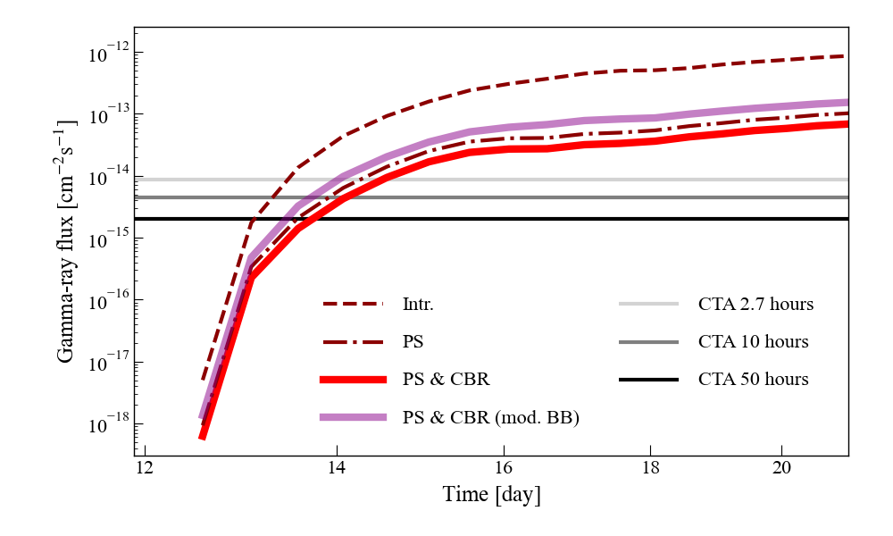
图注：Same as Figure~\(\ref{fig:Time-flux_Ino_con_100TeV},\) but for case~(ii). Case~(ii) adopts the modern RSG mass-loss rate, $\dot{M}_{\rm RSG}=10^{-3}\,{\rm M_\odot\,yr^{-1}}$, and the energy threshold is $E\ge100\,{\rm TeV}$.
对应解读：建议重点查看的图表 5（光变曲线图）与 6（CTA 探测性判断中的 100 TeV 通量）；关键图表逐图导读图 5；模型拟合段落中关于观测窗口、距离和 100 TeV 端信号的讨论。
入选理由：这是增强红超巨星风模型（\dot \(M_RSG=10^{-3}\) \(M_sun/yr\)）下 E≥100 TeV 积分伽马射线通量随时间演化的核心图，直接对应论文最重要结论：早期 100 TeV 信号是否足以检验 PeV 宇宙线加速，以及最佳 CTA 跟进窗口出现在哪个爆发后时段。相比低质量损失率或低能阈值图，它最直接支撑日报中关于 100 TeV 可探测性的解读。
来源与置信度：\(arxiv_source\)；high；\(arxiv_source\) / sample701.tex:figure[9]
Fig03
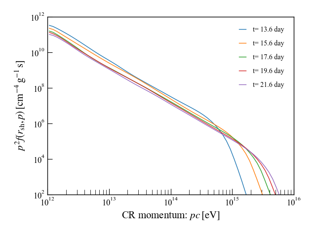
图注：Same as Figure~\(\ref{energy-f_CR_LML},\) but for Model $1$ of \(\citet{2021ApJ...922....7I}.\) Model $1$ adopts an enhanced RSG wind with $\dot{M}_{\rm RSG}=10^{-3}\,{\rm M_\odot\,yr^{-1}}$, $v_{\rm wind}=10\,{\rm km\,s^{-1}}$, and $\eta_{\rm inj}=6\times10^{-4}$.
对应解读：建议重点查看的图表 2（宇宙线谱或最大能量随时间图）；关键图表逐图导读图 2；详细解读中关于质子可达约 3 PeV 的段落。
入选理由：该图给出增强质量损失率 Model 1 的宇宙线分布函数随时间的能谱，是判断粒子是否真正被加速到 PeV 能区的基础图。日报中 100 TeV 伽马射线作为 PeV 质子诊断的论点，必须依赖这类母体宇宙线谱，而不是只看伽马射线通量。
来源与置信度：\(arxiv_source\)；high；\(arxiv_source\) / sample701.tex:figure[3]
Fig04
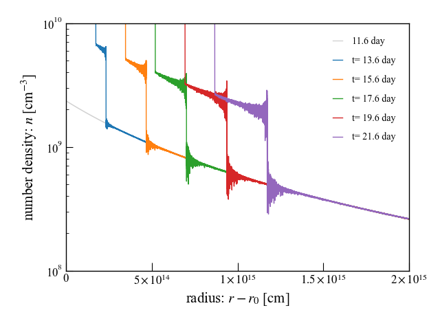
图注：Same as Figure~\(\ref{r-n_CSM_LML},\) but for Model $1$ of \(\citet{2021ApJ...922....7I}.\) Model $1$ adopts an enhanced RSG wind with $\dot{M}_{\rm RSG}=10^{-3}\,{\rm M_\odot\,yr^{-1}}$ and $v_{\rm wind}=10\,{\rm km\,s^{-1}}$. The snapshots are shown every $2\,{\rm days}$ over a period of $10\,{\rm days}$, starting from approximately $11.6\,{\rm days}$ after the core-collapse event, which corresponds to the time when the ejecta reaches $10^{15}\,{\rm cm}$ from the stellar center.
对应解读：建议重点查看的图表 1（星周介质密度剖面图）；关键图表逐图导读图 1；模型拟合段落中关于 \dot \(M_RSG\)、\(n_H\) 和 \(R_CSM\) 控制强子通量的讨论。
入选理由：这是增强红超巨星风 Model 1 的径向密度剖面，直接展示高质量损失率星周介质环境。它支撑日报中关于致密 CSM 是强子 pp 伽马射线靶物质、并控制高能辐射持续时间的解释。相比常规风模型的密度图，本文结论主要建立在这一高密度模型上。
来源与置信度：\(arxiv_source\)；high；\(arxiv_source\) / sample701.tex:figure[4]
Fig12
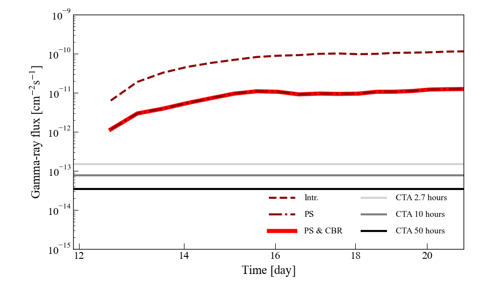
图注：Same as Figure~\(\ref{fig:Time-flux_Ino_mod_100TeV},\) but for $E\ge1\,{\rm TeV}$ with the modern RSG mass-loss rate, $\dot{M}_{\rm RSG}=10^{-3}\,{\rm M_\odot\,yr^{-1}}$ (case~v).
对应解读：建议重点查看的图表 5（光变曲线图）以及图 4（1–100 TeV 吸收影响的综合判断）；关键图表逐图导读图 5。
入选理由：该图显示增强质量损失率模型下 E≥1 TeV 的积分伽马射线通量演化，可与 Fig09 的 E≥100 TeV 光变曲线配合，帮助判断不同能量阈值下峰值时间和衰减行为是否一致。它对日报中 1–100 TeV 通量被光球吸收削弱、以及不同能段观测窗口可能不同的讨论有辅助价值。
来源与置信度：\(arxiv_source\)；high；\(arxiv_source\) / sample701.tex:figure[12]
Fig06
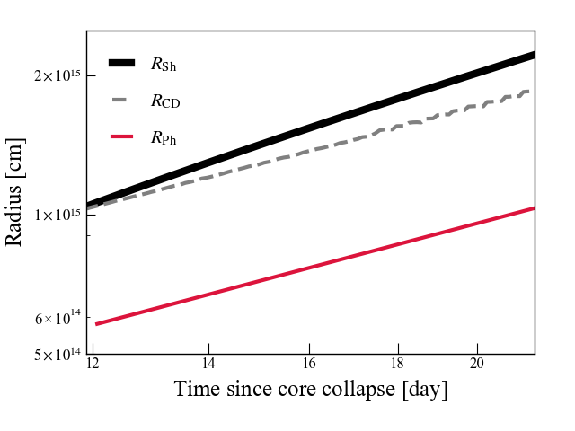
图注：Same as Figure~\(\ref{Time-R_Ph_CD_sh_0},\) but for Model $1$ in \(\citet{2021ApJ...922....7I}.\)
对应解读：建议重点查看的图表 4（吸收修正与光球 \gamma\gamma 吸收）；关键图表逐图导读图 4；模型拟合段落中关于 \(R_Sh\)、\(R_Ph\)、\(L_ph\) 和 \(T_ph\) 影响吸收的讨论。
入选理由：该图给出增强模型中激波半径、接触间断面半径和光球半径的时间演化，是理解伽马射线产生区与光球辐射场几何关系的关键背景。虽然它不是直接的 \(\tau_{\\gamma\\gamma}\) 或吸收前后能谱图，但在候选图中最能支撑光球吸收计算的空间尺度解释。
来源与置信度：\(arxiv_source\)；high；\(arxiv_source\) / sample701.tex:figure[6]
Fig08
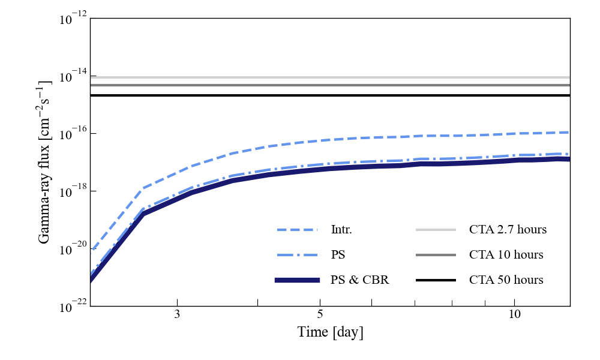
图注：Time evolution of the integrated gamma-ray flux above $100\,{\rm TeV}$ from a Type~II-P SN at $D=1\,{\rm Mpc}$ for case~(i). Case~(i) adopts the conventional RSG mass-loss rate, $\dot{M}_{\rm RSG}=10^{-5}\,{\rm M_\odot\,yr^{-1}}$.
对应解读：建议重点查看的图表 5（光变曲线图）和模型参数对比；模型拟合段落中关于 \dot \(M_RSG\) 与 \(n_H\) 退化关系的讨论。
入选理由：该图给出常规红超巨星风质量损失率（\dot \(M_RSG=10^{-5}\) \(M_sun/yr\)）下 E≥100 TeV 通量演化，可作为 Fig09 增强风模型的对照。它有助于说明高密度 CSM 并非细节参数，而是决定 100 TeV 信号强弱和可探测性的核心条件。
来源与置信度：\(arxiv_source\)；high；\(arxiv_source\) / sample701.tex:figure[8]
强相关工作
这篇工作直接承接“早期超新星 PeVatron”思路，尤其与 Inoue 等人关于致密星周介质中动理学-MHD 加速到 PeV 的模拟相连。它与传统超新星遗迹 PeVatron 研究的区别在于时间尺度：不是寻找几百年后仍在加速 PeV 粒子的遗迹，而是寻找爆发后几十天内的短暂高能窗口。检索时可用关键词 “early supernova PeVatron”, “Type II-P supernova dense circumstellar medium gamma rays”, “100 TeV gamma rays supernova shock”, “diffusive shock acceleration red supergiant wind”。
相近观测方向包括近邻核心坍缩超新星的 Fermi-LAT、H.E.S.S.、MAGIC、VERITAS 和未来 CTA 跟进，以及强相互作用超新星的高能伽马射线和中微子预言。可能存在的张力是：许多超新星高能非探测已经给出质量损失率或宇宙线加速效率上限，但这些上限往往集中在 GeV 或低 TeV，且未必覆盖本文强调的 100 TeV 窗口和强光球吸收修正。检索时可加入 “gamma-ray upper limits nearby supernovae”, “Fermi LAT supernova constraints”, “CTA transient supernova”, “gamma gamma absorption supernova photosphere”。
同一事件 / 同类源线索：
相似工作：
（未提供）
基础理论 / 方法工作：
- https://ui.adsabs.harvard.edu/abs/1983RPPh...46..973D/abstract
- https://ui.adsabs.harvard.edu/abs/1987PhR...154....1B/abstract
- https://www.cta-observatory.org/science/cta-performance/
相反观点 / 张力线索：
（未提供）
3. The Hidden Evolution of Gamma-Ray Burst Jets Revealed by Gravitational Waves
- 来源：arXiv / astro-ph.HE
- 链接：https://arxiv.org/abs/2609.17776v1
- 作者：Gerardo Urrutia, Fabio De Colle, Agnieszka Janiuk, Claudia Moreno, Enrico Ramirez-Ruiz
- 评分：novelty 8/10，importance 8/10，relevance 9/10，final 9.35/10
- 推荐理由：High-priority GRB/multimessenger paper: proposes that central-engine variability in collapsar GRB jets can imprint detectable high-frequency GW signals, potentially constraining hidden jet evolution in nearby GRBs and Type Ic-BL SNe.
中文题目：引力波揭示伽马暴喷流在恒星内部的隐藏演化
做了什么：这篇文章用数值喷流模型研究长伽马暴喷流在大质量恒星包层内传播时会产生怎样的引力波信号，重点比较平滑中心引擎和强烈变率中心引擎。作者发现，恒星包层会逐步抹平喷流的快速亮度起伏，但引力波仍能保留早期喷流演化的信息：强变率引擎可在几十赫兹产生较强信号，平滑引擎则主要贡献低频成分。若源距离约为 36 Mpc，即接近 GRB 980425/SN 1998bw 这类极近邻事件的距离，最强、最高能的变率模型可能达到现有地面干涉仪的可探测振幅。
为什么重要：长伽马暴喷流真正穿出恒星前的阶段几乎不能用电磁辐射直接看见，因为恒星包层光学厚度极高。本文把引力波作为穿透恒星内部的诊断工具，讨论它是否能区分中心引擎本身的时间变率和喷流—恒星相互作用造成的外部调制。这对理解黑洞吸积盘、磁驱动喷流、坍缩星喷流准直和低亮度近邻伽马暴都有直接意义。
理论 / 观测 / 仪器方法价值：理论上，本文把喷流动力学中的时间变率同引力波频谱联系起来，给出一条从中心引擎历史到可观测应变谱的路径。观测上，它提示针对近邻长伽马暴和 Ic-BL 超新星进行低延迟或离线引力波搜索时，不应只关注并合型模板，也要考虑几十赫兹附近由喷流变率诱发的非紧致双星信号。方法上，它强调包层滤波效应：电磁观测看到的是喷流出星后的结果，而引力波可能对更早期、更深层的动力学更敏感。
为什么应该关注：如果未来在一个近邻长伽马暴或 Ic-BL 超新星方向上探测到类似信号，它可能直接告诉我们中心引擎是稳定注能还是剧烈闪烁；即使没有探测到，也能排除一部分高能、强变率喷流模型。对做伽马暴、核心坍缩超新星、多信使天文学或第三代引力波探测器科学目标的人来说，这篇文章提供了一个值得加入搜索策略和理论模型库的信号通道。
展开详细解读：文章讲解、背景、理论、重点章节、图表与相关工作
文章详细讲解
科学问题：长伽马暴的标准图像认为，相对论性喷流从坍缩大质量恒星中心发出，必须先穿过致密恒星包层，随后才产生我们在伽马射线、X 射线和光学波段看到的辐射。问题在于，喷流最早、最接近中心引擎的阶段被高光学厚度物质完全遮住，电磁观测只能间接推断。本文问的是：喷流在恒星内部传播时产生的引力波，能否保留中心引擎时间变率的信息？尤其是高频成分究竟来自喷流驱动的 cocoon 随机湍动，还是可以由中心引擎本身的快速变率产生？
作者怎么做：作者构造不同喷流光度历史的模型，让喷流在大质量恒星包层中传播，并计算相应非球对称动量、能量流产生的引力波信号。模型重点不是紧致双星那种相位精确的啁啾，而是由喷流加速、准直、头部传播、侧向 cocoon 膨胀和中心引擎时间结构共同决定的宽频瞬变信号。作者比较平滑注能和强烈变率注能，跟踪快速光度起伏在喷流传播过程中怎样被包层和喷流内部动力学逐渐抑制。
关键结果：论文的核心发现是，强变率中心引擎能在几十赫兹附近产生较明显引力波谱峰，而平滑变化的引擎则主要在较低频率释放引力波能量。换句话说，高频喷流引力波并不一定要求极端高能 cocoon，也不一定只是数值湍动或随机噪声的表现；它可以是中心引擎时间结构留下的动力学痕迹。恒星包层像一个低通滤波器，越往外传播，快速变率越被抹平，但引力波信号仍可能记录喷流早期阶段。
局限和下一步：摘要显示，可探测性只在非常近的事件和最高能、强变率模型中较乐观；对于典型宇宙学长伽马暴，现有探测器很难看到这类信号。模型结果还依赖喷流能量、开角、恒星结构、中心引擎时标、数值维度和引力波提取方法。下一步最关键的是扩展到更系统的参数空间、检验三维不稳定性对频谱的影响、把波形注入真实探测器噪声做搜索效率评估，并与 Ic-BL 超新星和低亮度长伽马暴的观测率结合起来给出事件率预期。
关键结果是怎么做出来的
本文最重要的证据链从样本选择开始：作者不是统计观测样本，而是选择一组代表性的长伽马暴喷流模型，改变中心引擎光度随时间的历史。核心对照组是平滑演化的引擎与快速起伏、强变率的引擎。这样的设计使得频谱差异可以主要归因于注能历史，而不是完全混杂在恒星结构或探测器响应中。
事件数意义上，这里每个“事件”是一次数值喷流实验，而不是天空中的真实 GRB 计数。作者跟踪喷流穿过恒星包层的演化，比较喷流头、包层相互作用区域和 cocoon 对引力波时域信号与频谱的贡献。读者应特别注意模型是否覆盖了不同喷流总能量、不同变率幅度和不同变率时间尺度，因为这些参数决定几十赫兹信号是否显著。
显著性不是通过发现某个真实候选事件来计算，而是通过应变振幅、频谱能量分布和探测器噪声曲线的比较来评估。文中称在距离约 36 Mpc 时，最强、最高能变率模型的高频信号可达到当前地面干涉仪可探测范围；这通常意味着需要看特征应变或信噪比与 Advanced LIGO/Virgo/KAGRA 噪声振幅谱密度的相对位置。对读者来说，关键不是一个孤立振幅数值，而是模型谱峰是否落在几十赫兹这一探测器较敏感、但地面低频噪声仍很强的频带。
模型比较的主要逻辑是“平滑引擎 versus 变率引擎”。如果平滑模型只在低频显著，而强变率模型出现几十赫兹峰值，那么高频功率可被解释为中心引擎变率的遗迹。与此同时，作者还强调恒星包层会抑制快速起伏，所以频谱不是中心引擎光变曲线的简单傅里叶变换，而是经过喷流传播、准直和包层滤波后的结果。
支撑结论的图表应包括光度历史、喷流传播快照、引力波时域波形、频谱或特征应变与探测器灵敏度比较、以及不同模型之间的频率峰值和总能量对照。主要系统误差来自恒星模型、喷流注入边界、数值分辨率、二维或三维处理、引力波提取近似、以及把模拟波形映射到探测器信噪比时的方向角和极化假设。稳健性检验应关注：改变变率时标后谱峰是否移动，降低变率幅度后高频峰是否消失，改变能量归一化后可探测距离是否按预期缩放。
展开背景、理论、公式、模型、章节和图表导读
背景知识
研究对象是长伽马暴喷流，通常与大质量恒星核心坍缩和 Ic-BL 超新星相关。中心引擎可能是新生黑洞加吸积盘，也可能是快速旋转强磁中子星。无论具体引擎是什么，喷流都必须在恒星内部打开通道，经历准直、激波加热和 cocoon 包裹，直到突破恒星表面后才可能产生可见的高能辐射。
历史上，长伽马暴与超新星的联系由 GRB 980425/SN 1998bw、GRB 030329/SN 2003dh 等近邻事件奠定。尤其 GRB 980425 距离约几十 Mpc，是极端近邻但低亮度的事件，常被拿来讨论如果类似事件伴随非并合引力波，现有探测器是否有机会看到。本文摘要中提到的 36 Mpc 可理解为对这类近邻长伽马暴/超新星距离尺度的参照。
观测困难在于，恒星包层在喷流刚启动时对光子极不透明。伽马射线提示的是突破后或接近突破后的相对论外流，光学超新星看到的是爆炸抛射物的较晚期热辐射，射电余辉反映的是外流与星周介质的相互作用。因此，中心引擎早期几秒到几十秒内到底是稳定供能、间歇闪烁还是经历多次重启，很难仅靠电磁观测唯一确定。
现在值得重新看这个问题有两方面原因。第一，多信使天文学已经证明引力波能够直接探测被电磁辐射遮蔽的高密度动力学过程。第二，地面干涉仪在几十到数百赫兹最敏感，而核心坍缩、喷流和 cocoon 的某些非球对称运动可能正好在这个频段留下宽带信号。虽然这类信号通常比双中子星并合弱且不规则，但近邻事件仍有物理价值。
一个常见误区是把“喷流引力波”想成类似紧致双星并合的高精度模板信号。实际上喷流信号更接近由非轴对称能量动量流产生的 burst，波形受流体不稳定性、观测方向和数值模型影响很大。另一个误区是认为高频喷流信号只能来自极高能 cocoon；本文的贡献正是指出中心引擎快速变率也可以把功率推到几十赫兹。
基础理论 / 方法脉络
基本物理图像是：引力波来自时变的非球对称质量四极矩或等价的能量动量分布。一个完全球对称的爆炸不会辐射引力波；一个严格稳态、轴对称且没有时间变化的喷流也不会产生强的宽频瞬变。长伽马暴喷流在恒星内部传播时，喷流头减速、激波、cocoon 膨胀和中心引擎变率都会引入时间变化和非球对称性，因此可能产生可观的引力波。
喷流注入条件通常由光度、开角、洛伦兹因子或热焓等量描述。平滑引擎意味着注入光度随时间缓慢变化，强变率引擎意味着注入光度在短时标上起伏。喷流进入恒星后不再自由传播：喷流头速度由喷流动量通量与恒星包层阻力平衡决定，cocoon 压力又会反过来准直喷流。这使得喷流内部的高频扰动会被传播过程滤波。
本文关心的关键量包括引力波应变、频谱峰值、特征应变、源距离、喷流总能量、引擎变率时标和探测器噪声谱密度。若中心引擎变率时标为几十分之一秒到几分之一秒量级，直觉上相应频率会落在十几到几十赫兹；但实际峰值还会被喷流传播时间、包层响应时间和 cocoon 平滑效应改写。
观测方法上，这类信号不能简单套用双星并合模板。更现实的方式是围绕已知近邻 GRB、Ic-BL 超新星或高能瞬变触发时刻做定向 burst 搜索，比较时频图中是否存在与模型相容的过量功率。方向已知、时间窗口较窄会显著降低背景，但波形不确定性仍要求使用稳健的非模板或弱模板方法。
主要退化关系包括：更高喷流能量、更近距离、更有利观测方向都能提高应变；较强中心引擎变率和较强喷流—包层耦合都可能增强某些频段功率；而三维湍动、数值噪声和 cocoon 随机运动也可能制造类似宽频结构。因此，单纯看到几十赫兹功率并不足以唯一证明中心引擎变率，需要结合时序、能量预算、电磁对应体和模型族比较。
公式与推导
第一步从四极矩近似开始。对远离源、弱场、慢变近似下的非球对称源，引力波横向无迹应变可写成
其中 \(G\) 是引力常数，\(c\) 是光速，\(D\) 是源到观测者的距离，\(Q_{ij}^{\rm TT}\) 是质量四极矩的横向无迹部分。这个式子说明，只有随时间变化的非球对称质量或能量分布才有效辐射引力波。
对相对论喷流，更实用的图像是把流体能量动量张量 \(T^{\mu\nu}\) 的非球对称变化投影到辐射场。喷流注入光度可参数化为
其中 \(L_0\) 是特征光度，\(g(t)\) 是慢变包络，\(A\) 是变率幅度，\(\delta(t)\) 是均值约为零的快速起伏。平滑引擎对应 \(A\approx 0\)，强变率引擎对应 \(A\) 较大。
喷流头在恒星包层中的传播可用无量纲头部强度近似刻画：
其中 \(\Sigma_j\) 是喷流横截面积，(\
\(ho_\star\)) 是局部恒星密度。常见解析估计给出喷流头速度
其中 \(\beta_h c\) 是喷流头速度，\(\beta_j c\) 是喷流物质速度。该式说明包层越密或喷流越宽，快速注入扰动越难无损传到喷流头。
总注入能量由光度积分给出：
其中 \(T_{\rm eng}\) 是引擎活动时长。对同样的 \(E_j\)，不同的 \(L_j(t)\) 时间结构会导致不同的引力波频谱，这正是本文比较平滑模型和强变率模型的关键。
若把包层传播视作一种近似线性滤波，喷流头或有效辐射源的变率可写成
其中 \(\widetilde{L}_j(f)\) 是注入光度的傅里叶变换，\(H(f)\) 是由喷流传播和包层响应决定的传递函数。若 (|H(f)|\) 在高频下降，恒星包层就表现为低通滤波器；但早期或强幅度扰动仍可能在几十赫兹留下可观功率。
频域应变定义为
特征应变常写作
与探测器噪声比较时，\(h_c(f)\) 可直接同 \(h_n(f)=\sqrt{fS_n(f)}\) 对照，其中 \(S_n(f)\) 是单边噪声功率谱密度。
若有一个给定模型波形，理想匹配滤波信噪比为
这里 \(f_{\rm min}\) 和 \(f_{\rm max}\) 是搜索频带边界。喷流 burst 波形不一定能精确匹配滤波，但这个公式仍给出可探测性的尺度判断：信号功率越集中在 \(S_n(f)\) 较低的频段，越容易被看见。
引力波辐射能量谱可用
其中 \(\tilde h_+(f)\) 和 \(\tilde h_\times(f)\) 是两种极化。这个式子把模拟得到的波形与能量预算联系起来，也能检查某个模型是否要求不合理的引力波能量。
距离缩放很直接：
因此，如果某个模型在 \(D_0=36\\,{\rm Mpc}\) 附近接近探测阈值，那么在更远距离信噪比会近似按 \(D^{-1}\) 下降。这也是本文结论为何主要针对极近邻 GRB 和 Ic-BL 超新星，而不是普通红移 \(z\sim 1\) 长伽马暴。
模型拟合 / 应用方法
这类工作中的“拟合”首先不是对天文观测样本做经验曲线拟合，而是把一组物理模型波形同探测器灵敏度或潜在数据进行比较。可变参数包括喷流总能量、注入光度包络、变率幅度、变率时标、喷流开角、初始洛伦兹因子、恒星密度剖面和观测方向。本文摘要表明，作者主要把光度历史作为控制变量，研究它如何改变引力波频谱。
若将来用于真实数据，似然可建立在探测器应变数据和模型波形之差上。对近似高斯平稳噪声，常用内积由噪声功率谱密度加权；但喷流信号波形不确定，严格模板库可能不完备。因此实际搜索更可能结合定向、定时 burst 方法和少量物理启发模板，先找时频过量功率，再用模型族解释。
参数退化很强。应变幅度同时依赖喷流能量、距离、方向角和源内部非轴对称程度；频谱峰值同时依赖中心引擎变率时标、喷流头传播时间、包层密度结构和数值维度。一个较近但较弱的喷流，可能在振幅上类似一个较远但更强的喷流；一个由 cocoon 湍动产生的宽频结构，也可能部分模仿中心引擎变率信号。
残差诊断应重点看时频结构，而不是只看总信噪比。若模型声称几十赫兹峰来自中心引擎起伏，那么改变注入光度历史时，峰的位置和强度应有可解释变化；若峰主要来自数值噪声或随机湍动，则不同分辨率、不同随机扰动或不同网格设置下可能不稳定。对观测数据而言，还必须检查地面低频噪声、环境耦合、非高斯 glitch 和多个探测器之间的相干性。
模型可能失败的地方包括：二维轴对称模拟会压制或夸大某些三维不稳定性；磁场主导喷流与纯流体喷流的应力结构不同；真实中心引擎可能同时具有准周期、随机和长期衰减成分；恒星包层旋转、非球对称预爆发质量损失和伴星相互作用也会改变传播环境。因此本文更适合作为物理可行性和诊断方向的论证，而不是最终波形模板库。
重点章节 / 结果段落怎么读
-
引言和动机：读者应抓住两个问题。一是电磁辐射为什么看不到恒星内部的早期喷流，二是已有工作为何把高频引力波更多归因于 cocoon 或要求过高能量。本文的新意是把中心引擎变率作为高频引力波来源重新放到核心位置。
-
喷流模型和光度历史：这是最重要的方法部分。应检查作者如何定义平滑引擎和变率引擎，变率幅度、时标和总能量是否可比，喷流注入边界条件是否清楚，以及恒星包层模型是否代表典型长伽马暴前身星。
-
数值演化和喷流—恒星相互作用：这一部分要看喷流头怎样传播、cocoon 怎样形成、快速起伏在不同半径处怎样被抑制。读者应关注作者是否展示了随时间或半径变化的光度、动量通量或流体结构，而不仅是最终波形。
-
引力波提取和频谱结果：核心结论在这里。应重点读时域应变、频域特征应变、辐射能量谱和与探测器噪声曲线的比较。平滑模型与强变率模型的差异是否集中在几十赫兹，是判断本文主张的关键。
-
讨论和可探测性：应检查作者如何把模拟振幅缩放到 36 Mpc，是否考虑观测方向、探测器网络、真实噪声和事件率。还要看作者怎样界定非探测能排除哪些模型，避免把“最乐观模型可探测”误读成“所有近邻长伽马暴都可探测”。
建议重点查看的图表
-
中心引擎光度历史图：看横轴时间、纵轴喷流光度，平滑模型和变率模型是否总能量可比，快速起伏的幅度和时标是否足以对应几十赫兹频段。
-
喷流传播快照或密度/洛伦兹因子图：看喷流头位置、cocoon 形态、准直程度和恒星包层内的非球对称结构。特别注意不同模型是否只改了引擎历史，还是流体形态也出现系统差异。
-
随半径或时间的光度滤波诊断：看快速起伏是否在传播中逐步衰减。若有功率谱随半径变化图，应检查高频功率被抑制的频率范围。
-
引力波时域波形图：看平滑模型和强变率模型的应变振幅、持续时间、峰值时刻是否与喷流头传播阶段对应。注意不要把单个尖峰直接当成稳健物理信号，需看分辨率和模型对照。
-
特征应变或能量谱图：这是可探测性最关键图。看几十赫兹处变率模型是否明显高于平滑模型，并与 Advanced LIGO/Virgo/KAGRA 噪声曲线的相对位置如何。
-
参数对照表：若有表格列出喷流能量、持续时间、峰值频率、最大应变或信噪比，应检查最乐观结论是否只由最高能模型驱动，以及这些能量是否符合观测推断。
关键图表逐图导读
图 1：通常应是模型输入或中心引擎光度历史。横轴为时间，纵轴为喷流光度或归一化光度。平滑模型应表现为缓慢变化曲线，强变率模型则应有快速起伏。读图时要确认不同曲线的积分能量是否接近，否则频谱差异可能来自总能量而非变率。
图 2：可能展示喷流在恒星包层中的传播快照，坐标轴为空间尺度，颜色表示密度、压力、洛伦兹因子或能量密度。数据不是观测点而是模拟场量。重点看喷流头、准直通道和 cocoon 区域；陷阱是二维切片会让结构显得比三维更规则。
图 3：应关注变率被包层滤波的诊断，例如不同半径处的光度曲线或功率谱。横轴可能为时间或频率，纵轴为光度、功率谱密度或归一化扰动幅度。若高频功率随半径下降，说明包层确实抹平快速起伏；但若引力波仍保留几十赫兹峰，则说明辐射主要记录较早阶段或较强扰动。
图 4：引力波时域波形。横轴为相对喷流启动的时间，纵轴为某一极化或等效应变，通常按指定距离缩放。平滑模型应较低频、较缓慢，变率模型应出现更快振荡或更尖锐结构。读图陷阱是时域振幅受方向和极化影响，不能只凭峰值判断探测性。
图 5：频域特征应变与探测器噪声比较。横轴为频率，纵轴为特征应变或噪声应变。模型曲线若在几十赫兹接近或超过噪声曲线，说明在理想条件下可能可探测。需要注意地面探测器在低频受地震和牛顿噪声影响很大，几十赫兹附近的实际背景和数据质量会决定真实搜索难度。
图 6：若论文给出不同模型的峰值频率、辐射能量或可探测距离对照，应把它当成结论压缩表来读。检查最高能强变率模型是否是唯一接近探测阈值的情况；如果是，结论应理解为“存在可探测参数空间”，而非“普遍可探测”。
论文原图 / 可嵌入图片
Fig05
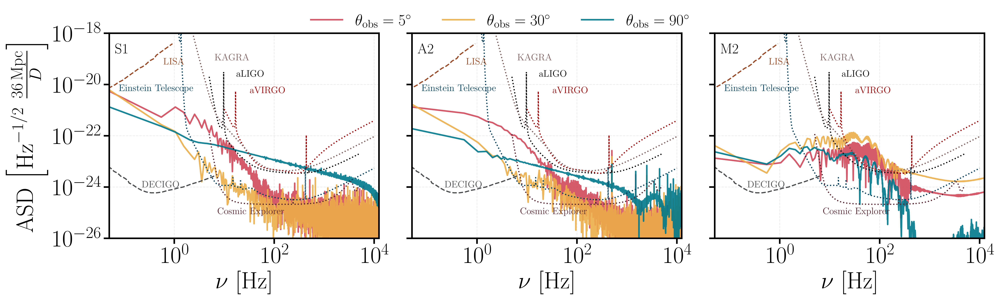
图注：Amplitude spectral density (ASD) at a distance of $D=36$~Mpc for three representative jet models and three observing angles $\theta_{\rm obs}$, measured with respect to the jet axis. Model S1 has constant energy injection, A2 has a smoothly varying luminosity that peaks at $1$~s, and M2 uses a rapidly variable luminosity obtained from the GRMHD calculation. Sensitivity curves are shown for representative current and future ground-based interferometers (LIGO, Virgo, KAGRA, Einstein Telescope, and Cosmic Explorer) and space-based interferometers (LISA and DECIGO). In models S1 and A2, most of the GW power concentrates at low frequencies, whereas the variable M2 engine produces a broader spectrum with substantial power extending into the frequency range accessible to ground-based interferometers.
对应解读：建议重点查看的图表第5项；关键图表逐图导读图5；模型与探测器灵敏度比较段落。
入选理由：这是全文可探测性结论的核心图，直接比较不同喷流模型在36 Mpc处的振幅谱密度与 LIGO/Virgo/KAGRA、ET、CE、LISA、DECIGO 灵敏度曲线。它最清楚地展示了强变率 M2 模型在地面探测器几十赫兹频段有显著功率，而平滑或恒定注入模型主要集中在低频，正对应日报强调的“几十赫兹峰”和“当前探测器是否可及”。
来源与置信度：\(arxiv_source\)；high；\(arxiv_source\) / main.tex:figure[5]
Fig04
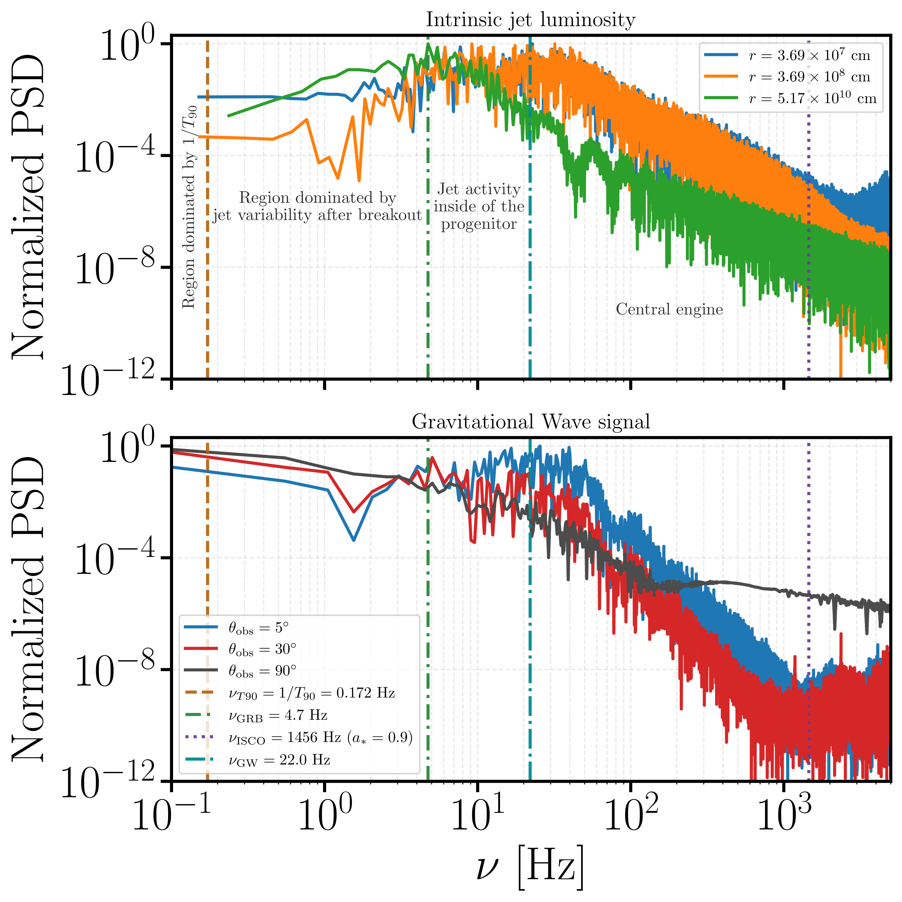
图注：Evolution of the Power spectral density (PSD) of the jet luminosity and GW signal. \(\emph{Upper panel}\): PSD of the jet luminosity measured at three radii. Close to the central engine, the PSD extends over a broad range of frequencies. As the jet propagates outward, high-frequency variability is progressively suppressed and the spectrum becomes increasingly weighted toward lower frequencies. \(\emph{Lower panel}\): PSD of the GW strain at three observing angles. The PSD extends over a broad frequency range.
对应解读：建议重点查看的图表第3项；关键图表逐图导读图3；关于恒星包层低通滤波和高频功率衰减的解释。
入选理由：该图直接给出喷流光度 PSD 随半径演化以及 GW 应变 PSD 随观测角变化，是验证“快速中心引擎起伏在传播中被逐步抑制，但 GW 仍保留宽频信息”的关键诊断图。它比单纯时域波形更能支撑日报中关于高频功率、滤波频率范围和中心引擎变率来源的讨论。
来源与置信度：\(arxiv_source\)；high；\(arxiv_source\) / main.tex:figure[4]
Fig03
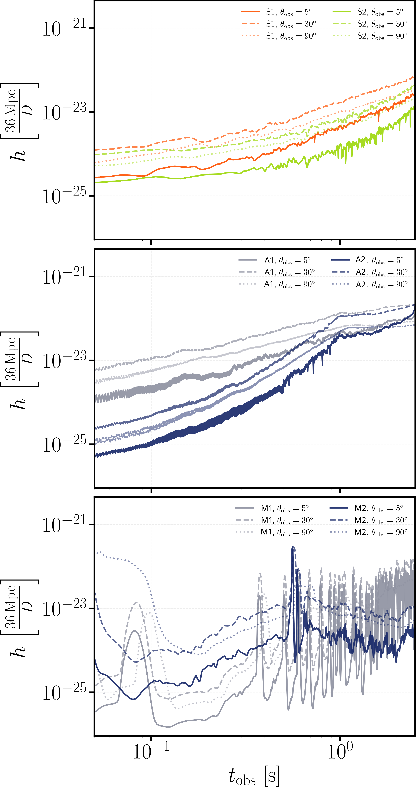
图注：GW strain computed from the numerical simulations. \(\emph{Upper panel:}\) Effects of the progenitor structure on the strain evolution $h(t)$. Model S1 uses progenitor 12TH, while model S2 uses progenitor 16TI. The jet was injected with the same luminosity $L_j(t) = E_{\mathrm{tot}} / t_j$ and the same total energy in both models. \(\emph{Middle panel:}\) Effects of different energy injection profiles. Models A1 and A2 are injected with luminosities given by eq.~\(\ref{eqn:modelA1}\) and ~\(\ref{eqn:model_A2}\) respectively. \(\emph{Bottom panel:}\) Strain evolution considering the energy injection profile imported from GRMHD simulations (models M1 and M2).
对应解读：建议重点查看的图表第4项；关键图表逐图导读图4；不同恒星结构、注入历史和 GRMHD 输入模型的时域应变比较。
入选理由：该图展示数值模拟得到的 GW strain h(t)，分别比较 progenitor 结构、能量注入剖面以及 GRMHD 变率模型的影响。它直接支撑日报中对平滑模型与变率模型应变振幅、持续时间和峰值时刻的解读，也能帮助判断信号差异是否主要来自中心引擎历史。
来源与置信度：\(arxiv_source\)；high；\(arxiv_source\) / main.tex:figure[3]
Fig06
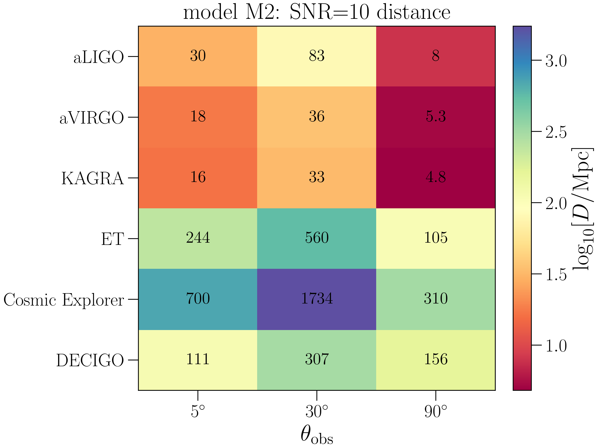
图注：Maximum distance for detecting a GW signal from model M2 with ${\rm SNR}=10$ for three observing angles and different GW detectors. Model M2 is a weak jet obtained from GRMHD simulations, showing rapid variability. Current interferometers are restricted to nearby events, while next-generation detectors substantially increase the accessible distance.
对应解读：建议重点查看的图表第6项；关于最高能/强变率模型是否接近探测阈值以及可探测距离的讨论。
入选理由：该图把 M2 快速变率模型在不同观测角和不同探测器下达到 SNR=10 的最大探测距离量化出来，是检验“当前干涉仪只限于近邻事件，下一代探测器显著扩大距离”的结论压缩图。它能防止把 Fig05 的谱线接近灵敏度误读为普遍可探测。
来源与置信度：\(arxiv_source\)；high；\(arxiv_source\) / main.tex:figure[6]
Fig07
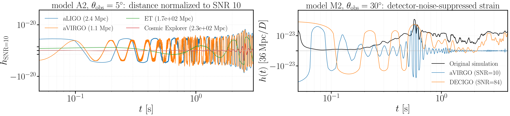
图注：Strain signal $h(t)$ for models M2 (upper panel) and A2 (lower panel) after applying the representative detector sensitivity filtering used here at SNR = 10 from current and future ground-based interferometers. The figure illustrates how the simulated signals could be recovered. For model M2, the full temporal evolution of the strain is not recovered at high frequencies, however the peaks produced by the MAD activity remain visible above the noise level. Model A2 shows noise along its evolution.
对应解读：模型拟合与残差诊断段落；关于探测器滤波后信号恢复、噪声和时频结构稳健性的讨论。
入选理由：该图展示 M2 与 A2 在代表性探测器灵敏度滤波、SNR=10 条件下的可恢复时域信号。它与日报中“不能只看总信噪比，应看时频结构、噪声和峰值是否稳健”的提醒高度相关，特别能说明 M2 的 MAD 活动峰值在噪声滤波后仍可能可见，而平滑模型恢复较弱。
来源与置信度：\(arxiv_source\)；high；\(arxiv_source\) / main.tex:figure[7]
Fig08
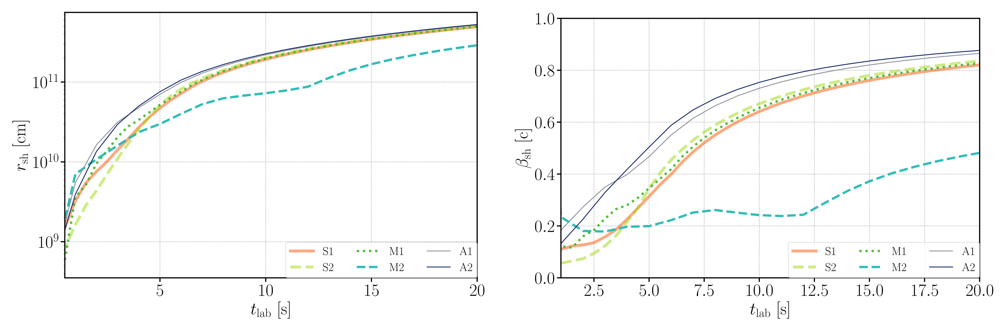
图注：Position of the shock front (\emph{upper panel}) and jet head velocity (\emph{lower panel}) as a function of time, for the simulated models. Differences in progenitor structure and central engine history produce distinct propagation histories while the jets are inside the star. Most models subsequently accelerate after reaching the outer stellar layers. Model M2 remains substantially slower than the other models and develops only a weakly relativistic outflow, despite reaching the stellar surface.
对应解读：建议重点查看的图表第2项；喷流在恒星内部传播阶段、喷流头位置和速度演化的解读。
入选理由：该图给出 shock front 位置和 jet head velocity 随时间的演化，能把 GW 时域特征与喷流穿越恒星包层的动力学阶段联系起来。它比单张形态快照更适合判断不同 progenitor 和中心引擎历史是否导致系统性的传播差异，尤其突出了 M2 较慢、较弱相对论外流这一影响 GW 信号的重要背景。
来源与置信度：\(arxiv_source\)；high；\(arxiv_source\) / main.tex:figure[8]
强相关工作
这篇文章与长伽马暴坍缩星模型、GRB-SN 关联、喷流穿星传播和核心坍缩引力波四条文献线相连。可检索关键词包括 “collapsar gamma-ray burst jet propagation gravitational waves”、“GRB jet cocoon gravitational wave”、“central engine variability long GRB”、“Type Ic-BL supernova gravitational wave search”。同一类源方面，GRB 980425/SN 1998bw 是最重要的历史参照，因为其距离尺度与摘要中的 36 Mpc 接近；GRB 030329/SN 2003dh 则是经典的宇宙学长伽马暴—超新星关联案例。
相近工作通常讨论喷流驱动 cocoon 是否能产生高频引力波，以及这种信号是否会被数值湍动和随机流体运动污染。本文与这些工作的差别在于，它把高频来源转向中心引擎本身的快速变率，并强调包层传播的滤波作用。潜在张力在于：如果真实三维喷流的 cocoon 随机运动本身也能产生类似时频结构，那么仅凭频谱峰很难唯一反演引擎历史；需要多模型比较和真实探测器数据检验。
基础理论方面，应回到坍缩星模型、Blandford-Znajek 磁抽能机制、喷流头传播解析模型和引力波 burst 搜索方法。若要继续追踪，应同时查 LIGO/Virgo/KAGRA 对核心坍缩超新星和长伽马暴的定向引力波搜索结果，因为这些非探测已经对极近邻事件的强引力波模型给出约束。
同一事件 / 同类源线索：
- https://arxiv.org/abs/2609.17776
- https://ui.adsabs.harvard.edu/abs/1998Natur.395..670G/abstract
- https://ui.adsabs.harvard.edu/abs/1998Natur.395..672K/abstract
- https://ui.adsabs.harvard.edu/abs/2003Natur.423..847H/abstract
相似工作：
基础理论 / 方法工作：
- https://ui.adsabs.harvard.edu/abs/1977MNRAS.179..433B/abstract
- https://ui.adsabs.harvard.edu/abs/1993ApJ...405..273W/abstract
- https://arxiv.org/abs/astro-ph/0302469
相反观点 / 张力线索：
（未提供）
4. Radiation-Driven Magnetic Fields in Sub-Keplerian Accretion Flows: An Alternative to MRI
- 来源：arXiv / astro-ph.HE
- 链接：https://arxiv.org/abs/2609.19108v1
- 作者：Mukesh Kumar Vyas, Asaf Pe'er
- 评分：novelty 8/10，importance 8/10，relevance 8/10，final 9.00/10
- 推荐理由：astro-ph.HE theory paper proposing radiation-driven magnetic-field generation in luminous accretion flows as an alternative/additional channel to MRI, with implications for black-hole/neutron-star disks, AGN, GRBs and TDEs. Broadly relevant to high-energy source physics, though not directly a gamma-ray observational result.
中文题目：亚开普勒吸积流中的辐射驱动磁场：一种不同于 MRI 的磁场生成通道
做了什么：这篇理论论文提出：在黑洞或中子星附近的吸积流中，若存在足够明亮、紧凑且各向异性的冕区辐射场，辐射力不是保守力，其旋度可以从零初始磁场出发产生极向磁场；随后吸积流的差分转动把极向场绕成环向场，使磁场强度呈近似二次增长。作者把这一机制与经典磁转动不稳定性（MRI）的增长时间作比较，发现对于一大块冕区光度、尺度和放大位置参数空间，辐射驱动磁场可在与 MRI 相当甚至更短的时间内达到动力学重要的磁化程度。这使它不仅是 MRI 的替代项，也可能是强辐射吸积系统中不可忽略的并行磁场源。
为什么重要：大尺度磁场是吸积盘角动量输运、喷流发射和黑洞能量抽取的核心条件，但“这些有序磁场从哪里来”一直没有完全解决。MRI 擅长解释湍流和局部放大，却通常需要种子场，也不天然保证产生大尺度极向磁通。本文的重要性在于，它把强辐射场本身变成磁场源项：只要辐射力具有非零旋度，广义欧姆定律中的辐射项就能破坏纯电势形式并驱动磁感应。对于 X 射线双星、AGN、GRB 和 TDE 等高光度系统，这可能改变我们对磁通积累、喷流启动和盘冕耦合的理解。
理论 / 观测 / 仪器方法价值：理论价值在于给出了一条从非保守辐射力到极向磁场、再到差分转动放大环向场的闭合物理链条，并把其增长时间与 MRI 的标尺放在同一参数空间中比较。方法价值在于提供了一组可检验的尺度关系：磁场生成率依赖冕区光度、辐射源紧致度、盘内电子—离子响应、角速度剪切和产生位置。观测价值在于，若该机制有效，强冕辐射阶段应与磁化增强、喷流增强、状态转变或偏振结构变化存在关联。
为什么应该关注：如果你研究吸积盘、喷流或高能暂现源，这篇文章值得关注，因为它挑战了一个默认前提：大尺度磁场不一定只能由外部输运、MRI 放大或盘发电机提供，强辐射场本身也可能在局部生成磁通。即使该机制最后只在部分参数区间有效，它也会影响数值模拟的初始条件、盘冕模型的闭合方式，以及对强辐射吸积态中磁化演化的解释。
展开详细解读：文章讲解、背景、理论、重点章节、图表与相关工作
文章详细讲解
科学问题：黑洞和中子星吸积流中的大尺度磁场从何而来，是盘物理和喷流物理中长期悬而未决的问题。MRI 是解释差分转动盘中角动量输运的标准机制，但 MRI 严格说是对已有磁场的放大和湍流化机制；它并不自动回答在零初始磁场或极弱种子场条件下，如何快速建立大尺度有序极向磁通。本文聚焦一个更具体的问题：强而非保守的辐射场能否直接在等离子体中产生磁场，并在吸积流剪切中把该磁场放大到动力学重要水平。
作者怎么做：论文考虑一个亚开普勒吸积流与明亮紧凑冕区共同存在的几何图像。冕区辐射对电子施加辐射力，由于电子和离子的响应不同，电荷分离会诱导电场；当辐射力不能写成单值标势梯度时，其旋度进入感应方程，成为磁场源项。作者首先推导辐射驱动的极向磁场生成率，然后利用差分转动将极向场卷绕为环向场，得到随时间增强的磁场演化。随后他们扫描冕区光度、冕区尺度、磁场放大位置和吸积流角速度等参数，并与 MRI 的特征指数增长时间比较。
关键结果：论文的核心结论是，非保守辐射场可以在初始磁场为零时产生极向磁场；差分转动再把该极向场转化为更强的环向场，使总磁场增长接近二次时间律，而不是简单线性累积。在相当宽的参数范围内，达到给定磁化强度的时间可短于或接近 MRI 的放大时间。作者因此强调，该机制不是 MRI 的小修正，而是一个独立的磁场生成通道；在强辐射、几何紧凑、剪切显著的系统中，它甚至可能主导早期磁化。
局限和下一步：这篇文章更接近半解析理论框架，而不是全辐射磁流体数值模拟。关键不确定性包括真实冕区几何、辐射传输的角分布、电子—离子耦合、盘厚度、湍流扩散、磁浮力以及生成磁通是否能保持大尺度相干。下一步最自然的工作是把该源项加入辐射 MHD 模拟，测试它在真实盘冕结构、相对论几何和非稳态吸积中是否仍能产生足够有序的极向磁通，并寻找与 X 射线状态转变、喷流开关和偏振观测之间的可检验联系。
关键结果是怎么做出来的
本文最重要的证据链不是来自观测样本，而是来自一套参数化理论计算。样本选择对应于物理参数空间的选择：作者考虑黑洞附近的亚开普勒吸积流，外加一个明亮、紧凑、各向异性的冕区辐射源。关键控制量包括冕区光度相对于爱丁顿光度的比例、冕区尺度、磁场生成半径、吸积流角速度相对于开普勒角速度的偏离、以及辐射力空间分布的非保守程度。
在统计显著性意义上，这不是一篇用观测数据计算置信度的论文，因此不能按“事件数”和“探测显著性”阅读。它的“显著性”来自时间尺度比较和量级闭合：辐射源项能否在给定时间内产生足够大的极向场，差分转动能否把它卷绕到接近等分配或至少动力学相关的磁场强度，以及这一时间是否短于 MRI 从同等弱种子场放大到同等强度所需的时间。读者应重点检查作者是否在同一半径、同一局域动力学时间和同一磁化阈值下比较两种机制。
模型比较的核心是辐射驱动增长与 MRI 指数增长的对照。MRI 通常有局域最大增长率，量级为角速度的一部分；辐射机制的早期极向场近似线性增长，而环向场由于剪切卷绕可获得额外时间因子，因此总场可呈更快的幂律增强。作者据此画出参数区域：在哪些冕区光度和尺度下，辐射机制达到目标磁化的时间小于 MRI 时间；在哪些情况下，它只是提供种子场，再由 MRI 或其他发电机继续放大。
支撑结论的图表应包括：辐射驱动源项随半径或几何参数的变化、磁场分量随时间的增长曲线、达到目标磁化所需时间与 MRI 时间的比值、以及二维参数空间中辐射机制占优的区域。稳健性主要取决于作者是否改变冕区大小、源位置、吸积流旋转率和放大半径后仍得到相似结论。系统误差则主要来自理想化几何、忽略复杂辐射转移、忽略湍流扩散与磁反作用、以及把亚开普勒流的速度场参数化而非自洽求解。
读者还应注意一个潜在陷阱：从“可产生磁场”到“可产生可供 Blandford-Znajek 喷流使用的大尺度净磁通”之间还有距离。论文展示的是局部非保守辐射源项和差分转动放大具有足够快的量级；但全局磁通的极性相干、向黑洞输运、重联耗散和与盘湍流的竞争，需要进一步模拟或观测诊断。
展开背景、理论、公式、模型、章节和图表导读
背景知识
吸积盘理论中，磁场承担两个角色：一是通过 Maxwell 应力输运角动量，使气体能够向中心天体下落；二是在黑洞或中子星附近组织 Poynting 通量，驱动准直喷流。无论是薄盘、厚盘、ADAF、MAD 还是喷流模型，都离不开磁场，尤其是大尺度极向磁通。但磁通的来源并不简单：它可以从外部环境被盘拖曳进来，也可以由局部发电机产生，还可以由湍流放大弱种子场。
MRI 自二十世纪九十年代以来成为吸积盘角动量输运的标准图像。它的优点是增长快、条件宽松，只要存在微弱磁场且角速度向外递减即可触发。但常见误区是把 MRI 等同于“从无到有制造任意大尺度磁场”。严格地说，理想 MHD 中若初始磁场为零，MRI 没有可操作的磁张力；而且局部 MRI 湍流能否自然生成足够强、足够相干的净极向磁通，仍与边界条件、盘厚度和磁 Prandtl 数有关。
辐射在强吸积系统中不仅是冷却项，也会改变动力学。靠近爱丁顿光度时，辐射力、辐射阻力、Compton 加热、辐射粘滞和辐射转移几何都会影响盘冕结构。早期类似 Poynting-Robertson cosmic battery 的思想已经指出，各向异性辐射可对电子产生相对离子的拖曳，从而诱导电流和磁场。本文可视为这一路线在亚开普勒吸积流和紧凑冕区几何下的进一步推广。
为什么现在值得重新看？一方面，高分辨率 GRMHD 模拟已经显示磁通含量决定喷流效率和吸积态；另一方面，IXPE 等 X 射线偏振观测、EHT 对黑洞近邻磁场结构的约束，以及 X 射线双星状态转变中的喷流开关，都在要求我们更认真地处理盘冕辐射与磁场演化的耦合。若辐射本身能提供磁场源项，那么强光度阶段不只是被磁场调制，也可能主动重塑磁场。
该领域另一个常见误区是把“辐射驱动磁场”理解成普通辐射压把已有磁场压缩。本文讨论的不是压缩放大，而是广义欧姆定律中辐射力的非保守部分导致磁感应源项。也就是说，关键不是辐射压大小本身，而是辐射力场的旋度、电子与离子受力差异、以及流体剪切是否能把新生极向场快速卷绕。
基础理论 / 方法脉络
从物理图像看，磁场的产生需要打破“电场只是静电势梯度”的情形。若电场完全可写为标势梯度，其旋度为零，法拉第定律不会产生磁场。等离子体中电子比离子更容易受辐射散射影响；当辐射对电子施加的力不能由单一势函数描述时，为维持准中性，系统会建立电场和电流，其旋度可作为磁感应方程的源项。
本文的关键前提是冕区辐射场非保守。球对称、纯径向、严格由标势描述的力场通常不会产生旋度；但紧凑冕区照射旋转盘、辐射强度和入射角随空间变化，辐射拖曳和照射几何会使辐射力具有方位或高度依赖。这个非零旋度是从零磁场生成极向磁场的起点。
生成出的极向磁场本身未必马上足够强。吸积流的差分转动提供第二步放大：不同半径以不同角速度旋转，极向磁力线被不断拉伸成环向磁场。这个过程类似盘中经典的 \(\Omega\)-效应。若极向场近似随时间累积，而环向场又由剪切对极向场积分得到，环向场会获得额外时间因子，因此出现近似二次增长。
与 MRI 的比较要小心。MRI 是局部线性不稳定，增长率与角速度 \(\Omega\) 同阶，但需要已有磁场作为耦合介质；辐射机制可以在零初始磁场时启动，但增长形式是源项驱动加剪切放大。两者不是简单互斥关系：辐射机制可以先提供种子场，MRI 随后湍流放大；也可能在强辐射场条件下，辐射源项在早期比 MRI 更快达到目标磁化。
主要退化和系统误差来自几何与输运。较高冕区光度、较小冕区尺度、较强各向异性和较强剪切都会增强该机制，但这些量在真实系统中往往彼此耦合。例如更高光度可能改变盘厚度和电离状态，湍流扩散可能耗散新生磁通，磁反作用也会改变速度场。因此该理论最可靠的用途是给出尺度关系和判断条件，而不是在没有辐射 MHD 模拟时精确预言某个源的磁场强度。
公式与推导
第一步从法拉第定律出发，磁场变化由电场旋度决定：
这里 \(\mathbf{B}\) 是磁场，\(\mathbf{E}\) 是电场，\(c\) 是光速。若 \(\mathbf{E}=-\nabla\Phi\)，则 \(\nabla\times\mathbf{E}=0\)，不能从零磁场产生新磁场。
第二步写出电子动量平衡的简化形式。在忽略电子惯性并假设准中性的条件下，辐射力 \(\mathbf{f}_{\rm rad}\) 与电场力近似满足
因此
其中 \(e\) 是元电荷，\(\mathbf{f}_{\rm rad}\) 是单个电子受到的辐射力。把它代回法拉第定律得到辐射电池项：
这说明只有 \(\nabla\times\mathbf{f}_{\rm rad}\neq0\) 的非保守辐射场才能直接生成磁场。
第三步把辐射力与辐射通量联系起来。对 Thomson 散射主导的电子，量级上有
其中 \(\sigma_{\rm T}\) 是 Thomson 截面，\(\mathbf{F}_{\rm rad}\) 是辐射能流。若冕区光度为 \(L_{\rm c}\)，特征距离为 \(R\)，则通量尺度为
非保守性的几何因子可记为 \(\epsilon_{\rm nc}\)，于是极向场生成率的量级可写作
这里 \(B_{\rm p}\) 是极向磁场，\(\epsilon_{\rm nc}\) 概括辐射场旋度相对于 \(F_{\rm rad}/R\) 的比例。
第四步考虑差分转动的 \(\Omega\)-效应。轴对称近似下，极向场被剪切生成环向场：
其中 \(B_\phi\) 是环向磁场，\(r\) 是柱半径，\(\Omega(r)\) 是角速度。若 \(B_{\rm p}\simeq S_{\rm rad}t\)，且 \(S_{\rm rad}=\partial B_{\rm p}/\partial t\) 近似常数，则
这就是论文强调的二次增长的基本来源。
第五步定义磁化或等分配判据。常用量级指标为
其中 \(P\) 是气体或总压，\(\beta\) 是等离子体 \(\beta\) 参数。若目标是达到 \(\beta^{-1}=\eta_B\)，目标磁场为
把 \(B_\phi(t)\) 与 \(B_{\rm target}\) 相等，可估计辐射机制达到目标磁化的时间。
第六步与 MRI 增长比较。理想 MHD 中 MRI 最大增长率量级为
若从种子场 \(B_0\) 指数增长到 \(B_{\rm target}\)，所需时间为
辐射机制占优的大致条件是
这组公式说明了论文的核心诊断：提高 \(L_{\rm c}\)、增大 \(\epsilon_{\rm nc}\)、减小 \(R\)、增强剪切 \(q\Omega\)，都会缩短 \(t_{\rm rad}\)；而 MRI 时间还显式依赖未知种子场 \(B_0\)。
模型拟合 / 应用方法
本文不是传统意义上对观测数据进行拟合的论文，而是参数化理论模型比较。需要“拟合”或扫描的量主要包括冕区光度 \(L_{\rm c}\)、冕区尺度、磁场生成半径 \(r\)、吸积流角速度 \(\Omega\)、剪切参数 \(q\)、非保守几何因子以及目标磁化阈值。读者应把这些参数看作理论先验，而不是已由数据严格测定的后验。
若未来把该模型用于观测，可拟合的不是磁场源项本身，而是其后果：喷流功率随 X 射线冕区光度的响应、状态转变期间无线电喷流延迟、X 射线偏振角和偏振度变化、反射谱推断的冕区高度变化，以及准周期振荡或时滞中的盘冕几何变化。模型预测应通过这些可观测量间的相关性和时间延迟来间接检验。
似然建模可分两层。理论层面可用参数扫描或贝叶斯层级模型，将 \(L_{\rm c}\)、几何因子和剪切参数映射为磁化增长时间 \(t_{\rm rad}\)，再与喷流启动时间或状态转变时间比较。观测层面则需要处理多波段光变的非平稳性、选择效应和共同驱动变量，例如吸积率同时影响辐射光度和喷流功率，可能制造虚假的相关性。
主要退化关系包括：冕区更亮与冕区更紧凑都可提高辐射通量梯度；更强的非保守几何因子与更强剪切都可加快环向场生成；较高目标压力会提高所需目标磁场，从而延长增长时间。仅凭一个源的光度和喷流功率通常无法区分这些因素，需要偏振、谱时延、反射几何和多波段喷流指标共同约束。
模型可能失败的地方也很明确。如果辐射转移计算显示真实辐射力旋度远小于半解析估计，或者湍流扩散和重联在一个动力学时间内耗散了新生磁通，那么该机制只能作为弱种子场来源。若全局模拟发现生成的极向磁场极性在小尺度上快速翻转，无法形成净磁通，则它对 Blandford-Znajek 型喷流的贡献也会受限。
重点章节 / 结果段落怎么读
-
引言和动机部分：重点看作者如何界定与 MRI 的关系。需要区分“替代 MRI 解释角动量输运”和“替代或补充 MRI 生成磁场”这两个命题。本文更强的主张是后者：辐射非保守项能从零场产生磁场，并可在某些参数区间比 MRI 更快达到磁化。
-
辐射驱动源项推导部分：这是全文最关键的方法段。读者应检查作者如何从电子受辐射力、诱导电场和法拉第定律得到磁场源项，以及哪些几何假设使 \(\nabla\times\mathbf{f}_{\rm rad}\) 不为零。这里决定了机制是否真正不同于普通压缩或剪切放大。
-
亚开普勒吸积流与差分转动放大部分：重点看角速度剖面、放大半径和剪切参数如何设定。因为二次增长依赖 \(B_{\rm p}\) 的持续生成和 \(d\Omega/dr\) 的持续作用，速度场假设会直接影响增长时间。
-
参数空间与 MRI 比较部分：建议仔细看作者如何定义“辐射机制占优”。比较应在相同目标磁化、相同位置和合理种子场假设下进行。若 MRI 时间中采用极弱 \(B_0\)，辐射机制更容易显得占优；若已有外部磁通，MRI 或磁通拖曳可能更强。
-
讨论和适用范围部分：重点读作者如何把机制推广到 AGN、GRB 和 TDE。不同系统的辐射几何、光学深度和动力学时间差异很大，不能只按光度大小外推。
建议重点查看的图表
-
辐射场几何示意图：看冕区相对盘的位置、尺度和照射方向，尤其要判断为什么辐射力具有非零旋度。
-
辐射驱动极向磁场生成率随半径的曲线：看生成率是否集中在内盘，是否对冕区大小和高度高度敏感。
-
磁场分量随时间演化图：重点比较 \(B_{\rm p}\) 与 \(B_\phi\) 的增长斜率，确认环向场是否呈近似二次增长。
-
达到目标磁化的时间尺度图：看 \(t_{\rm rad}\) 与局域动力学时间、吸积时间或 MRI 时间的相对大小。
-
二维参数空间占优图：横纵轴可能是冕区光度和冕区尺度，或光度和生成半径；重点看辐射机制占优区域是否需要极端参数。
-
与 MRI 的对比表或曲线：检查 MRI 种子场、增长率和饱和磁场的设定是否公平。
-
稳健性检验图：看改变角速度剖面、冕区几何或目标磁化阈值后，结论是否仍然保持。
关键图表逐图导读
图 1：通常应是物理几何或坐标设定图。读者要看横截面中黑洞、亚开普勒吸积流和紧凑冕区的相对位置。关键不是图画是否美观，而是辐射照射方向是否随空间变化，从而允许 \(\nabla\times\mathbf{f}_{\rm rad}\neq0\)。读图陷阱是把任意各向异性都等同于非保守；真正需要的是辐射力场的旋度。
图 2：若展示辐射驱动源项或极向场生成率，坐标轴多半是半径、冕区尺度或光度，纵轴是 \(\partial B_{\rm p}/\partial t\) 或等价量。应检查曲线是否随 \(L_{\rm c}\) 近似线性增强、随距离按通量梯度衰减，并注意内边界附近是否由模型假设主导。
图 3：若展示磁场时间演化，横轴应为时间或轨道周期数，纵轴为 \(B_{\rm p}\)、\(B_\phi\) 或磁化参数。重点看 \(B_{\rm p}\) 是否线性累积，\(B_\phi\) 是否因剪切出现更陡增长。读图陷阱是忽视磁反作用：若图中没有进入饱和阶段，曲线外推到强磁化时可能不再成立。
图 4：若展示与 MRI 的时间尺度比较，横轴可能为冕区光度、半径或源尺度，纵轴为 \(t_{\rm rad}/t_{\rm MRI}\)。低于一的区域支持辐射机制更快。应检查 MRI 的 \(B_0\) 假设、\(\gamma_{\rm MRI}\) 取值和目标磁场是否与辐射机制一致。
图 5：若是二维参数空间图，颜色通常表示增长时间、磁化强度或占优机制。读者应找出占优区域是否覆盖典型 X 射线双星或 AGN 的合理参数，而不是只出现在接近爱丁顿、极小冕区等极端角落。还要注意色标是否为对数，因为对数色标会压缩看似巨大的差异。
图 6：若有稳健性或附录图，应关注改变角速度剖面、冕区高度、光度归一化或目标 \(\beta\) 后边界如何移动。这些图决定本文结论是“一个调参结果”还是“一个宽参数区间内的物理机制”。
论文原图 / 可嵌入图片
Fig03
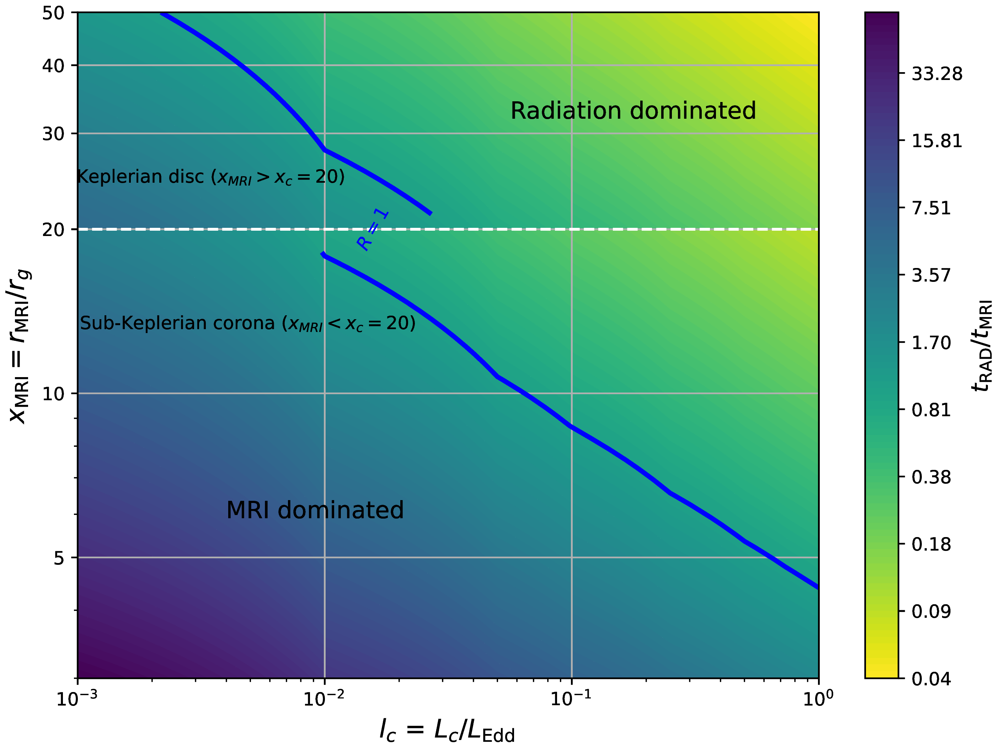
图注：Ratio of the radiation-driven magnetization timescale to the magnetorotational-instability (MRI) amplification timescale, $t_{\rm RAD}/t_{\rm MRI}$, over the $(l_c,x_{\rm MRI})$ parameter space. The blue curve denotes the boundary $t_{\rm RAD}/t_{\rm MRI}=1$, separating the radiation-dominated regime, where radiation-driven magnetization reaches the target field strength faster, from the MRI-dominated regime, where MRI amplification is faster. The MRI timescale is evaluated at a given location $x_{\rm MRI}$ in the disc, whereas $t_{\rm RAD}$ is determined from the time at which the maximum magnetic-field strength produced in the radiation calculation for the corresponding $l_c$ reaches $B_{\rm eq}$. The dashed horizontal line at $x_{\rm MRI}=x_c=20$ separates the outer Keplerian disc ($x_{\rm MRI}>20$, $f_{\rm rot}=1$) from the inner sub-Keplerian corona ($x_{\rm MRI}<20$, $f_{\rm rot}=0.5$). The break in the $t_{\rm RAD}/t_{\rm MRI}=1$ boundary originates from the different values of angular velocities in the disc and the corona (different values of $f_{\rm rot}$) assumed.
对应解读：“建议重点查看的图表”第4、5、6项，以及“关键图表逐图导读”中关于与 MRI 时间尺度比较和二维参数空间占优图的段落。
入选理由：该图直接给出辐射驱动磁化时间与 MRI 放大时间的比值 \(t_RAD/t_MRI\)，并在二维参数空间 (\(l_c,\) x_MRI) 中标出 \(t_RAD/t_MRI=1\) 的分界线，是判断辐射机制是否能在宽参数范围内快于 MRI 的核心证据。图中还明确区分内侧亚开普勒冕区和外侧开普勒盘，能支撑日报中关于角速度设定、MRI 比较公平性和占优区域是否极端的讨论。
来源与置信度：\(arxiv_source\)；high；\(arxiv_source\) / apssamp.tex:figure[3]
Fig01
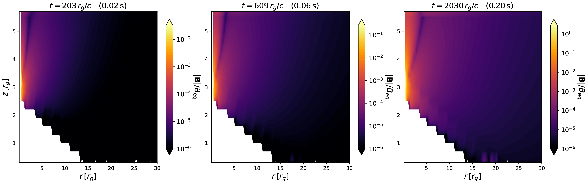
图注：Spatial distribution of the magnetic-field strength normalized by the equipartition field, $|\mathbf{B}|/B_{\rm eq}$, at three representative times for a corona with $r_c=20 r_g$ and $l_c=1$. The logarithmic colour scale shows the rapid growth and spatial development of the radiation-generated magnetic field.
对应解读：“建议重点查看的图表”第3、4项，以及“关键图表逐图导读”中关于磁场随时间增长、空间分布和达到目标磁化的讨论。
入选理由：该图展示 |B|/\(B_eq\) 在三个代表性时刻的空间分布，可直接显示辐射生成磁场的快速增长及其在盘冕区域中的空间发展。虽然它不是日报中预期的几何示意图或 \(B_p\)、\(B_phi\) 分量时间曲线，但它是候选图中唯一能可视化磁场从弱到接近装备磁场强度过程的图，对理解辐射驱动磁化是否集中于特定区域、何时达到目标磁化具有较高价值。
来源与置信度：\(arxiv_source\)；high；\(arxiv_source\) / apssamp.tex:figure[1]
强相关工作
这篇工作与 MRI 文献的关系最直接。Balbus 与 Hawley 的经典论文奠定了 MRI 作为吸积盘湍流和角动量输运机制的地位；后续大量局部 shearing-box 和全球 GRMHD 模拟研究了 MRI 饱和、发电机和净磁通问题。本文并不否定 MRI，而是指出 MRI 之外还可能有一个由辐射非保守性直接驱动的磁场源项。检索关键词可用 “magnetorotational instability accretion disk dynamo net poloidal flux”。
它也与 Poynting-Robertson cosmic battery、辐射拖曳发电机和盘冕耦合文献相邻。这些工作共同关注辐射对电子和离子的差异作用如何产生电流和磁场。本文的新意在于把紧凑冕区、亚开普勒流和差分转动放大组合起来，并明确与 MRI 时间尺度比较。检索关键词可用 “Poynting Robertson cosmic battery accretion disk magnetic field radiation force curl”。
潜在相反观点来自两类研究：一类认为大尺度极向磁通主要由外部环境输运进入内盘，尤其是 MAD 模型；另一类强调局部发电机产生的磁场难以形成足够相干的净磁通。要评估本文，读者应同时检索 “magnetically arrested disk magnetic flux advection diffusion” 和 “large scale magnetic field generation accretion disk dynamo”。
同一事件 / 同类源线索：
相似工作：
- https://ui.adsabs.harvard.edu/abs/1998ApJ...508L..99C/abstract
- https://ui.adsabs.harvard.edu/abs/2006ApJ...652.1451C/abstract
基础理论 / 方法工作：
- https://ui.adsabs.harvard.edu/abs/1991ApJ...376..214B/abstract
- https://ui.adsabs.harvard.edu/abs/1977MNRAS.179..433B/abstract
- https://ui.adsabs.harvard.edu/abs/1973A%26A....24..337S/abstract
相反观点 / 张力线索：
- https://ui.adsabs.harvard.edu/abs/2003ApJ...596..600N/abstract
- https://ui.adsabs.harvard.edu/abs/2012MNRAS.423.3083T/abstract
5. 1D PIC Simulations of Resonant Scattering-Driven Pair Cascades in Magnetar Magnetospheres
- 来源：arXiv / astro-ph.HE
- 链接：https://arxiv.org/abs/2609.17661v1
- 作者：Jens F. Mahlmann, Alexander A. Philippov, Adrien Soudais, Andrei M. Beloborodov, Lorenzo Sironi
- 评分：novelty 8/10，importance 8/10，relevance 8/10，final 9.00/10
- 推荐理由：Self-consistent 1D PIC simulations of resonant-scattering-driven pair cascades in magnetar magnetospheres, directly addressing hard X-ray emission, pair loading, gap formation, and phase-resolved spectral signatures. Strong astro-ph.HE relevance and likely useful for compact-object plasma/radiation modeling.
中文题目：磁星磁层中由共振散射驱动的正负电子级联：一维 PIC 模拟
做了什么：这篇论文用一维粒子—网格模拟研究扭曲磁星磁层中沿单根磁力线运行的电流如何被维持。作者把粒子加速、共振逆康普顿散射、辐射阻力和正负电子产生放进同一个动力学框架，发现强辐射阻力会阻碍电子和正电子沿长磁力线流动，但系统会自组织出一个靠近恒星表面、位于单侧半球的加速间隙。该间隙产生的粒子流在更外侧的共振散射区大量载入正负电子；当正负电子流在磁赤道附近被辐射阻力刹停时，从星表抽取并加速的离子通过流不稳定性把动量传给少量轻子，使电路仍能闭合。核心结论是：磁星硬 X 射线辐射区可能天然具有半球不对称性，这会影响相位分辨谱和磁层电流闭合图像。
为什么重要：磁星的持久硬 X 射线通常被认为来自扭曲磁层中的辐射丰富等离子体，但过去很多模型把电流、辐射阻力和正负电子供给分开处理。这篇工作的重要性在于，它把共振逆康普顿散射驱动的辐射阻力与级联产额放进自洽的动力学模拟，直接展示磁层电路如何在强辐射拖曳下仍然维持。
理论 / 观测 / 仪器方法价值：对理论而言，文章给出一种可计算的磁星电路闭合机制：单侧加速间隙、外侧正负电子载入区、离子动量传递共同工作。对观测而言，它提出硬 X 射线产生可能随磁半球不对称，因而相位分辨谱、脉冲轮廓和偏振随相位变化可成为诊断磁层电流结构的窗口。对方法而言，它展示了辐射反作用不只是后处理项，而是决定等离子体流型和间隙位置的主动力。
为什么应该关注：如果你关心磁星硬 X 射线尾、扭曲磁层、快射电暴前身天体或强磁场等离子体，这篇文章值得看，因为它把一个常被口头假设的过程——共振散射产生正负电子并维持电流——变成了可检验的动力学图像。它还提醒我们：把磁星辐射区近似为两半球对称可能会错过关键物理。
展开详细解读：文章讲解、背景、理论、重点章节、图表与相关工作
文章详细讲解
科学问题：磁星持久辐射中的硬 X 射线通常被归因于磁层中相对论性轻子对热光子的共振逆康普顿散射。困难在于，磁层需要电流来支撑扭曲磁场，而电流载流子在强磁场和强光子场中会受到强烈辐射阻力；同时，共振散射又会产生高能光子并触发正负电子级联。问题不是单个粒子能不能辐射，而是整个磁层电路能不能在辐射拖曳、粒子加速、正负电子创造和星表粒子抽取之间自洽闭合。
作者怎么做：论文采用一维粒子—网格模拟，沿孤立磁力线追踪电子、正电子和从星表抽取的离子。模拟不是简单给定一个固定电场，而是让电荷分布、电流需求和沿磁力线的电场共同演化；辐射部分重点处理共振逆康普顿散射导致的能量损失和正负电子产生。由于共振散射阻力强烈依赖粒子的洛伦兹因子和位置，作者把它作为动力学中的关键力项，而不是只在模拟后计算辐射谱。
关键结果：强共振散射阻力会尤其有效地阻止电子和正电子沿较长磁力线穿越磁赤道。尽管如此，系统没有崩溃成无法供流状态，而是形成一个靠近恒星表面、只位于一个半球的加速间隙。该间隙负责把粒子加速到能触发后续共振散射和正负电子产生的能量。外侧共振散射区则给出大量正负电子载入，使流体成分不再是单纯的原初电子或正电子。一个特别有意思的结果是，当轻子对流在磁赤道附近被辐射阻力刹停时，离子成分仍能携带动量，并通过流不稳定性把少量轻子送入另一半球，从而维持全局电路。
局限和下一步：这是一维模拟，因而不能直接描述横向场线耦合、三维电流片、磁层整体拓扑和真实脉冲轮廓的形成。辐射转移、星表热光子场、局部磁场几何和 pair creation 处理也必须经过简化。下一步自然是把该机制嵌入多维磁层模型，计算可观测的相位分辨硬 X 射线谱、偏振和脉冲形态，并检查单侧间隙是否在更真实的闭合磁力线族中仍然稳定存在。
关键结果是怎么做出来的
这篇文章的证据链从一个受控的单磁力线问题开始。作者选择扭曲磁层中的孤立场线作为一维计算域，规定该场线需要承载与磁层扭曲相应的电流，然后让电子、正电子和离子在自洽电场中运动。这里的“样本”不是天体样本，而是一组不同场线长度、光子场和电路参数下的数值实验。关键选择是把较短和较长磁力线分开比较，因为共振逆康普顿散射阻力随位置和粒子能量变化，长磁力线更容易暴露出辐射拖曳导致的电流闭合问题。
主要结果并不是用传统观测论文中的事件数和显著性给出，而是通过动力学稳态、时均电流、电荷密度、粒子相空间分布和正负电子产生率来判断。作者检查系统是否能长期维持接近所需的电流，是否出现稳定或准稳定的加速间隙，以及电场是否集中在局部区域而非整个场线无序放电。若间隙只在一个半球出现，并且该结构在多个参数设置中保持，便构成对“单侧间隙”结论的主要数值证据。
支撑结论的图表应包括沿场线坐标的平行电场、粒子数密度、速度或动量分布、共振散射阻力、pair loading 率和电流分量分解。最关键的诊断是：间隙附近电场峰值与粒子加速对应，外侧区域 pair creation 增强，与此同时磁赤道附近出现轻子流减速或停滞。如果离子通量在间隙中被加速并在磁赤道附近参与动量转移，离子动量分布和轻子尾部注入另一半球的相空间图就会是核心证据。
统计意义在这类 PIC 论文中通常体现为数值稳健性，而不是单个 \(p\) 值。读者应关注作者是否改变网格分辨率、粒子数、时间平均区间、辐射阻力实现、边界注入条件和场线长度后仍得到相同电路形态。尤其要看单侧间隙是不是初始条件造成的暂态，还是在远超过等离子体振荡时间和粒子穿越时间后仍维持的准稳态。
系统误差主要来自一维近似、宏粒子噪声、简化的辐射反作用、pair creation 阈值处理、星表供粒边界和磁场几何参数化。如果某些图只显示瞬时快照而缺乏时间平均，容易高估结构的稳定性；如果只展示一条场线，也可能低估邻近场线之间电流重分配的影响。因此，本文结论最强的部分是“在给定一维场线电路和 RICS 拖曳物理下，系统会偏好单侧间隙和离子辅助闭合”，而不是“真实磁星全磁层一定只有一个间隙”。
展开背景、理论、公式、模型、章节和图表导读
背景知识
磁星是具有超强磁场的中子星，典型表面偶极磁场可达到 \(10^{14}\) 到 \(10^{15}\\,\mathrm{G}\) 量级。它们的持久 X 射线辐射、爆发活动和硬 X 射线尾很难只用普通旋转能损耗解释，因此经典图像认为磁场能量释放和磁层扭曲是主要能源。扭曲磁层要求沿磁力线存在电流，而电流如何被供应、如何稳定流动，是磁星辐射模型中的基础问题。
历史上，磁星硬 X 射线尾常被解释为热光子被磁层中相对论性电子或正电子散射到高能端。因为磁场很强，散射截面在回旋共振附近显著增强，共振逆康普顿散射比普通 Thomson 或 Klein–Nishina 散射更适合描述磁星环境。与此同时，高能光子在强磁场中可通过磁单光子 pair creation 或与光子碰撞产生正负电子，从而改变电流载流子的数量和能量分布。
为什么现在值得重新看？一方面，NuSTAR 等硬 X 射线观测已经显示磁星在 \(10\) 到 \(100\\,\mathrm{keV}\) 波段存在复杂的硬尾、相位依赖和源间差异；另一方面，PIC 模拟技术已经能把粒子加速、电场屏蔽和 pair cascade 放在同一个动力学模型中。过去半解析模型常能解释谱形，却较难回答“电路怎样闭合”和“辐射阻力是否会阻断电流”这类动力学问题。
一个常见误区是把 pair cascade 视为越多越好：只要产生足够多正负电子，磁层电流就容易维持。本文提醒我们，pair loading 同时也伴随强辐射阻力和动量损失，过多轻子可能在磁赤道附近被拖曳停下。另一个误区是默认两半球对称；如果加速间隙自然偏向一侧，那么观测到的脉冲谱和偏振不对称未必需要复杂的表面温度斑解释，也可能来自磁层电路本身。
基础理论 / 方法脉络
基础物理图像可以从闭合电路看起。扭曲磁场意味着 (\
abla\times\mathbf{B}) 不为零，因此沿磁力线需要电流 \(\mathbf{j}\) 来支撑非势场结构。在理想情况下，等离子体会提供足够电荷来屏蔽平行电场 \(E_{\parallel}\)；但如果局部电荷密度或电流不足，\(E_{\parallel}\) 会出现并加速粒子。
磁星环境中，粒子一旦被 \(E_{\parallel}\) 加速，就会与星表热 X 射线光子发生散射。由于磁场强，电子静止系中入射光子能量接近回旋能量时，散射截面出现共振，导致共振逆康普顿散射。这个过程一方面把软 X 射线提升到硬 X 射线甚至更高能量，另一方面对粒子施加辐射阻力，使粒子能量增长受到限制。
本文的核心假设是沿单根磁力线做一维动力学：坐标 \(s\) 沿磁场方向，粒子只保留沿 \(s\) 的运动，磁场几何和背景软光子场作为给定函数进入。PIC 方法用宏粒子表示电子、正电子和离子，用网格求解电场，再把辐射拖曳和 pair creation 作为粒子推进中的源项和力项。这样可以研究电场、粒子供给和辐射损失如何共同决定稳态。
关键量包括平行电场 \(E_{\parallel}(s,t)\)、粒子洛伦兹因子 \(\gamma\)、共振散射阻力 \(F_{\rm RICS}(s,\gamma)\)、电流密度 \(j(s,t)\)、电荷密度 (\
ho(s,t))、pair multiplicity \(\mathcal{M}\) 和沿场线的粒子通量。常见退化在于：改变软光子温度、磁场强度和场线长度都可能改变共振位置与拖曳强度；改变边界供粒条件也可能看起来像改变 pair cascade 效率。
从观测角度，模拟本身不直接给出唯一谱模型，但它规定了硬 X 射线发射区的空间和半球结构。如果加速间隙只位于一个半球，且外侧 RICS 区负责主要硬 X 射线产生，那么相位分辨谱中的硬度、归一化和偏振角可能随旋转相位表现出非镜像对称。这是将 PIC 结果连接到 NuSTAR、IXPE 或未来硬 X 射线偏振观测的关键逻辑。
公式与推导
第一步是磁层电流需求。对扭曲磁场，安培定律给出
在慢演化磁层中位移电流项较小，沿场线的目标电流可近似由磁场旋度决定。这里 \(\mathbf{B}\) 是磁场，\(\mathbf{j}\) 是电流密度，\(c\) 是光速。该式说明扭曲不是免费的：它要求等离子体持续供给电流。
第二步是平行电场由电荷不足产生。在一维场线坐标 \(s\) 下，可写成
这里 \(E_{\parallel}\) 是沿磁场方向的电场，(\
ho) 是实际电荷密度，(\
\(ho_{\rm req}\)) 表示维持给定磁层运动或边界条件所需的有效电荷密度。若二者不匹配，电场间隙形成并加速粒子。
第三步是粒子沿场线的动量方程。对质量 \(m\)、电荷 \(q\) 的粒子，简化为
其中 \(\gamma\) 是洛伦兹因子，\(v_{\parallel}\) 是平行速度，\(F_{\rm rad}\) 是辐射反作用，\(F_{\rm coll}\) 可代表数值模型中等效的集体相互作用或波粒交换。本文最重要的是 \(F_{\rm rad}\) 由共振散射主导，且可与电场力竞争。
第四步是共振条件。软光子在粒子静止系中的能量 \(\epsilon'\) 近似为
其中 \(\epsilon\) 是实验室系光子能量，\(\beta=v/c\)，\(\mu\) 是光子传播方向与粒子速度夹角的余弦，\(\hbar\omega_{\rm B}=\hbar eB/(m_{e}c)\) 是电子回旋能量。该条件决定哪些位置和哪些 \(\gamma\) 的粒子会遭遇强散射。
第五步是辐射拖曳的能量形式。若散射功率为 \(P_{\rm RICS}\)，则
这里第一项是电场做功，第二项是共振散射损失。稳态时两项可平衡，给出辐射限制的 \(\gamma\)，也解释为什么强拖曳能阻止轻子跨越长磁力线。
第六步是散射产生的高能光子能量尺度。逆康普顿散射在相对论极限下可粗略写为
但在强磁场共振散射中，实际能量受共振条件、散射角和 Klein–Nishina 效应限制。这里 \(\epsilon_{\rm sc}\) 是散射后光子能量。该式只给出尺度判断：较高 \(\gamma\) 和较热光子场更容易产生能触发 pair creation 的光子。
第七步是 pair creation 的阈值图像。对磁场中的单光子产生，常用不变量近似为
其中 \(\epsilon_{\gamma}\) 是高能光子能量，\(B_{\perp}\) 是垂直于光子传播方向的磁场分量，\(B_{\rm Q}=m_{e}^{2}c^{3}/(e\hbar)\) 是量子临界磁场。当 \(\chi_{\gamma}\) 足够大时，正负电子产生效率迅速上升。
第八步是电流由多组分粒子共同承担。沿场线电流可写成
这里 \(n_{+}\)、\(n_{-}\) 和 \(n_{i}\) 分别是正电子、电子和离子数密度，\(v_{+}\)、\(v_{-}\) 和 \(v_{i}\) 是其平行速度，\(Z\) 是离子电荷数。本文的关键物理正是：当轻子因辐射阻力停滞时，离子项仍可携带动量并帮助电路闭合。
第九步是 pair multiplicity。常定义
若 \(\mathcal{M}\gg 1\)，说明轻子数远多于承载最小电流所需数目；但高 \(\mathcal{M}\) 不保证电路容易闭合，因为这些轻子可能被 \(F_{\rm RICS}\) 拖曳，无法有效穿越磁赤道。
第十步是模拟稳态的诊断量。可用时间平均电流偏差
衡量电路是否维持。这里 \(\langle\cdot\\)
\(angle_{t}\)) 表示时间平均，\(j_{\rm req}\) 是目标电流。若 \(\Delta j\) 在大部分区域较小，同时 \(E_{\parallel}\) 只集中在局部间隙，则说明系统形成了自洽的电路解。
模型拟合 / 应用方法
这篇文章本身主要是数值动力学模拟，而非对某个磁星数据集做谱拟合。但它隐含了一套可拟合的物理参数：磁场强度和几何、磁层扭曲对应的目标电流、场线长度、星表软光子温度、边界供粒能力、辐射阻力模型和 pair creation 处方。模拟输出的可比较量包括硬 X 射线发射区位置、粒子能谱、pair multiplicity、间隙电压和辐射功率随相位的变化。
若将其连接到观测，常见做法是把 PIC 给出的粒子分布和空间发射率作为辐射转移输入，再拟合 X 射线相位分辨谱。似然可以基于不同能段的 Poisson 计数或高计数极限下的 \(\chi^{2}\) 统计量。拟合量不应只看相位平均谱的斜率，还要看硬尾强度、脉冲分数、能量依赖的峰位漂移以及偏振角随相位的变化。
主要退化包括：更强的磁层扭曲可提高电流和辐射功率，更高的表面温度也可提高 RICS 效率；两者在相位平均硬 X 射线通量中可能相似。场线长度和观看几何也会退化，因为它们都影响辐射区的可见时间和投影角。若没有相位分辨和偏振信息，仅靠宽带谱很难唯一判断单侧间隙是否存在。
系统误差方面，最大的问题是从一维场线到真实三维磁层的映射。PIC 宏粒子噪声可能影响流不稳定性的细节，辐射阻力近似可能改变粒子停滞位置，边界条件可能影响离子抽取率。实际拟合时应把这些作为模型族差异，而不是只给出形式统计误差。
模型可能失败的场景也很明确：如果真实磁星的硬 X 射线相位分辨谱显示严格的双半球对称，或偏振/脉冲形态要求两侧加速区几乎等强，那么单侧间隙图像至少不能作为普遍解释。反之，如果硬尾峰位、硬度或偏振存在稳定的半周期不对称，本文机制会成为很有竞争力的物理解读。
重点章节 / 结果段落怎么读
数据/模拟设置：首先读作者如何定义一维场线、边界条件、目标电流、背景磁场和软光子场。这里决定了结果适用范围。特别要注意场线长度、星表供粒方式和辐射阻力是否随位置变化。
方法：重点看 PIC 推进、共振逆康普顿散射阻力和 pair creation 的实现。读者应判断辐射项是连续阻力、随机散射事件，还是二者混合近似；这会影响粒子能谱和间隙稳定性。
主结果：重点读单侧加速间隙如何形成。应关注沿场线的 \(E_{\parallel}\)、电流密度、粒子相空间和 pair 产生率随时间演化。判断结构是否准稳态，而非一次放电事件。
离子和动量传递：这是本文很有特色的部分。读者应看离子何时从星表抽取、在哪个区域被加速，以及它们如何通过流不稳定性把动量传给轻子。该机制是电路跨越磁赤道的关键。
讨论和观测含义：最后读作者如何把单侧间隙连接到硬 X 射线不对称发射。这里不要把模拟结果直接等同于谱拟合结论，而应把它看作对未来相位分辨谱和偏振模型的物理约束。
建议重点查看的图表
-
沿场线的 \(E_{\parallel}(s)\) 分布：看电场是否集中在靠近星表的单个间隙，以及另一半球是否缺少对应间隙。
-
粒子相空间图：看电子、正电子和离子在 \(s\)–动量空间中的轨迹，尤其是轻子在磁赤道附近是否被拖曳停滞。
-
共振散射阻力或散射率分布：看 \(F_{\rm RICS}(s,\gamma)\) 最大区域是否与轻子减速和 pair loading 区对应。
-
pair creation 或 multiplicity 图：看正负电子主要在哪里产生，是否位于加速间隙外侧的扩展 RICS 区。
-
电流分量分解：分别检查电子、正电子和离子对 \(j(s)\) 的贡献，确认离子不是数值旁枝，而是闭合电路的一部分。
-
时间演化图：看间隙位置、电流和 pair 产生率是否在长时间平均下稳定，还是由大振幅周期性放电主导。
-
参数扫描表或图：看改变场线长度、光子场强度或边界条件后，单侧间隙和离子辅助闭合是否仍然出现。
关键图表逐图导读
图 1：通常应是模拟几何或场线示意图。横轴可能是沿磁力线坐标 \(s\)，标出两个足点和磁赤道；也可能展示背景磁场和软光子场随位置变化。读图时要确认哪一侧被定义为 anode 半球，因为后面“单侧间隙”的方向性依赖这个定义。陷阱是把示意图当成真实三维磁层；本文结论首先是单场线动力学。
图 2：若展示 \(E_{\parallel}(s,t)\) 或时间平均 \(E_{\parallel}(s)\)，应看电场峰值是否靠近一个足点，以及峰值宽度是否远小于整条场线长度。模型线或色图中的持久亮带代表稳定间隙，间歇斑块则代表放电振荡。读图陷阱是只看瞬时最大值，不看时间平均和另一半球是否存在弱间隙。
图 3：粒子相空间图通常最能说明机制。横轴是 \(s\)，纵轴可能是 \(p_{\parallel}/mc\) 或 \(\gamma\beta\)。电子、正电子、离子若用不同颜色显示，应重点看离子是否从星表被加速，以及轻子是否在赤道附近动量降低。陷阱是 PIC 宏粒子密度不等于真实相空间分布函数的平滑图，需要结合密度图判断。
图 4：pair creation 或 RICS 散射率图应显示扩展的辐射区。横轴为 \(s\)，纵轴可能为产生率、散射功率或 multiplicity。若产生率峰位不在电场峰值处，而在其外侧，说明“间隙加速”和“外侧 pair loading”是分离过程。陷阱是把 pair 产生多的位置等同于电流真正闭合的位置；轻子还必须能穿越拖曳区。
图 5：电流分量分解图应把 \(j_{e^{-}}\)、\(j_{e^{+}}\)、\(j_{i}\) 和目标 \(j_{\rm req}\) 放在一起。关键是看总电流是否接近目标，以及在磁赤道附近离子项是否补偿轻子项的不足。若误差带或时间波动很大，应谨慎评价稳态程度。
图 6：参数扫描或稳健性图应比较不同场线长度或辐射强度下的结果。坐标可能是场线长度、拖曳强度或光子温度，对应输出为间隙位置、pair multiplicity 或电流偏差。读图重点是趋势而非单个数值：长场线是否更容易出现轻子停滞，单侧间隙是否仍保持。
论文原图 / 可嵌入图片
Fig02
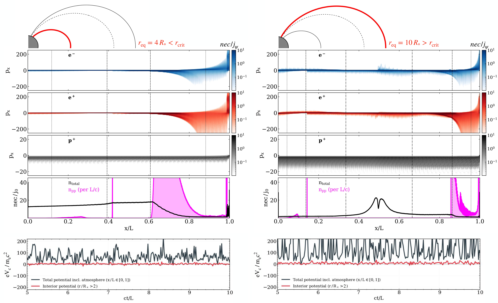
图注：Phase space, multiplicity, and circuit potentials for selected field lines with $\gamma_{\rm min}>1$ (left panels) and $\gamma_{\rm min}\approx 1$ (right panels). We show phase space averages for electrons ($e^-$, first row), positrons ($e^+$, second row), and ions ($p^+$, third row) after initialization, once the plasma reaches a quasi-equilibrium during $ct/L\in[5,10]$. The fourth row shows the average total density of all simulated particles (black line) and the pair production rate averaged over one light crossing time (magenta). The bottom row shows circuit potentials across the full domain (black line), with the red line indicating the same quantity restricted to radii $r>2R_\ast$ on both sides, excluding the near-surface atmospheric region. No large-scale potentials develop in the outer corona. Top panels show magnetic isosurfaces $b=[1,\,0.1,\,0.01]$.
对应解读：对应“建议重点查看的图表”中的粒子相空间图、pair creation/multiplicity 图，以及“关键图表逐图导读”中图 2/图 3 对单侧间隙、轻子停滞和离子参与电路的解读。
入选理由：这是最核心的机制图：同时给出电子、正电子和离子的相空间，外加总密度、pair production rate 和 circuit potentials，可直接检验单侧加速区、外侧 pair loading、轻子在长场线/赤道附近受阻以及离子被抽取并参与闭合电路。相比单独的分布图，它把多个关键诊断量放在同一组面板中，最能支撑日报的详细物理解读。
来源与置信度：\(arxiv_source\)；high；\(arxiv_source\) / main.tex:figure[2]
Fig03

图注：Distribution of pair production locations throughout the magnetosphere. Left: Pair production rate averaged over one light-crossing time in the equilibrium state $ct/L\in[5,10]$ for field lines extending (top to bottom) to $10$, $6$, and $2\,R_\star$. Right: Pair production rate and location in a 2D representation, with dipolar field lines shown as solid grey lines. The color scale is saturated to better highlight the distribution. All panels show magnetic isosurfaces corresponding to $b=[1,\,0.1,\,0.01]$.
对应解读：对应“建议重点查看的图表”第 4 项 pair creation 图，以及“关键图表逐图导读”中图 4 关于扩展 RICS/pair production 区域的说明。
入选理由：该图直接展示不同场线长度上的 pair production rate 及其二维磁层位置，是判断正负电子主要在哪里产生、pair loading 是否发生在加速间隙外侧的关键证据。它还能连接到硬 X 射线发射区的空间分布，比单纯相空间图更直观地显示辐射级联区域。
来源与置信度：\(arxiv_source\)；high；\(arxiv_source\) / main.tex:figure[3]
Fig06
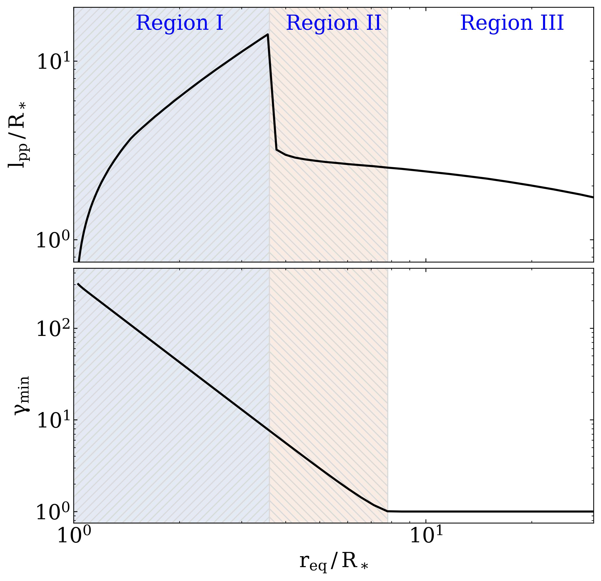
图注：RICS-limited lepton velocities and pair production zone extent in a dipolar magnetosphere with $B_\ast/B_{\rm QED} = 10$ and 1\,keV thermal photons. The top panel shows an estimate of the size of the pair creation zone, defined as the distance between the first scattering of a lepton with $\gamma_0 = 1000$ and the location where the magnetic field drops below $b = 0.1$. For field lines that do not reach regions with $b < 0.1$, the pair production zone spans both hemispheres, leading to a sharp increase in its length (Region I, blue shaded). The bottom panel shows the minimum Lorentz factor $\gamma_{\rm min}$ imposed by RICS drag. The orange shaded region marks a transition regime in which the $b < 0.1$ threshold still limits pair production, while $\gamma_{\rm min}>1$ (Region II). In Region III, pair production extend up to the $b < 0.1$ limit, and the plasma efficiently decelerates to $\gamma_{\rm min} \approx 1$ in the equatorial region.
对应解读：对应“建议重点查看的图表”第 3 项共振散射阻力/散射率分布和第 7 项参数扫描图；也对应“模型拟合”中场线长度、辐射阻力强度和 pair zone 尺度的物理参数。
入选理由：该图量化了 RICS 限制下的 lepton minimum Lorentz factor 和 pair production zone extent，明确区分不同场线区域中轻子是否会被拖曳到接近静止。它是解释为什么长场线更容易出现赤道附近轻子停滞、以及为什么单侧间隙需要离子辅助闭合的关键背景图。
来源与置信度：\(arxiv_source\)；high；\(arxiv_source\) / main.tex:figure[6]
Fig04

图注：As Figure~\(\ref{fig:FIGURE3},\) but showing the magnetospheric multiplicity distribution. Left: Total particle density averaged over $ct/L\in[5,10]$. Right: Multiplicity and its spatial distribution in a 2D representation.
对应解读：对应“建议重点查看的图表”第 4 项 multiplicity 图，以及“关键图表逐图导读”中关于 pair multiplicity 和空间分布的读图重点。
入选理由：该图展示磁层 multiplicity 的一维和二维空间分布，可用于确认 pair loading 的范围和强度，而不仅是瞬时 pair production rate。它与 Fig03 互补：Fig03 显示产生位置，Fig04 显示级联后粒子装载的实际空间结果。
来源与置信度：\(arxiv_source\)；high；\(arxiv_source\) / main.tex:figure[4]
Fig08
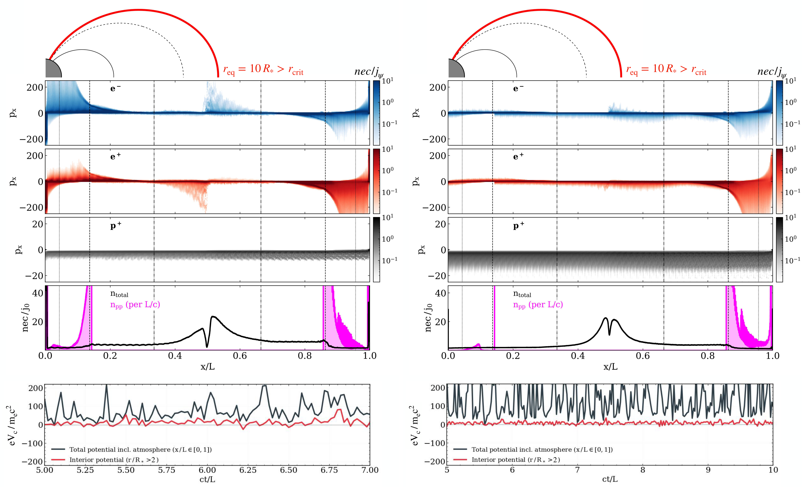
图注：Comparison of magnetar circuit realizations for field lines with $\gamma_{\rm min}\approx 1$ for different limits of the fastest RICS drag time. We compare $\eta_{\rm min} = 10^3\times(n_\psi/n_0)^{1/2}$ (right panel, also shown in Figure~\ref{fig:FIGURE2}) with a faster RICS drag timescale, $\eta_{\rm min} = 10^2\times(n_\psi/n_0)^{1/2}$ (left panel). The pair production rate in the southern hemisphere remains mostly unchanged, while for stronger RICS drag, a second gap with substantial pair production opens in the northern hemisphere.
对应解读：对应“建议重点查看的图表”第 7 项参数扫描/稳健性图，以及“关键图表逐图导读”中关于改变辐射阻力后单侧间隙是否保持的讨论。
入选理由：该图比较不同最快 RICS drag time limit 下的电路实现，直接检验单侧间隙结论对辐射阻力模型的敏感性。尤其是强拖曳情况下北半球出现第二个 gap 的结果，对日报中关于模型可能失败或边界条件/阻力处方系统误差的讨论非常重要。
来源与置信度：\(arxiv_source\)；high；\(arxiv_source\) / main.tex:figure[8]
Fig05
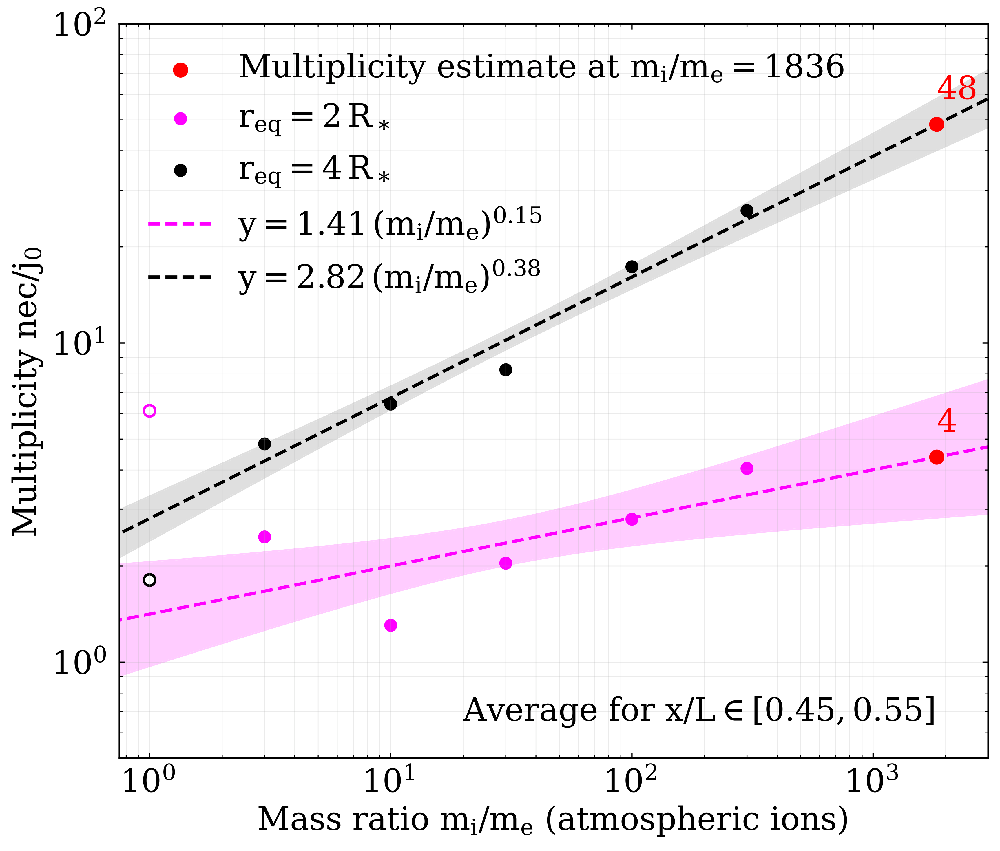
图注：Scaling of the average multiplicity in the equatorial region for field lines with $r_{\rm eq}
入选理由：该图给出 equatorial multiplicity 随 ion mass ratio 的标度关系，并包含 power-law 拟合、外推到真实质子质量比以及 1σ 不确定性带。它不是最直接展示单侧间隙的图，但对评估 PIC 简化质量比带来的系统误差和离子辅助闭合机制的稳健性很有价值。
来源与置信度：\(arxiv_source\)；high；\(arxiv_source\) / main.tex:figure[5]
强相关工作
这篇工作和磁星扭曲磁层模型、磁星 corona 模型、RICS 硬 X 射线模型以及 pulsar/magnetar pair cascade PIC 模拟都直接相关。历史上 Thompson、Duncan 和后续关于 twisted magnetosphere 的工作奠定了“磁场能量释放加磁层电流”的框架；Beloborodov 等关于磁星 corona 和 radiative outflow 的研究则强调电压调节、pair loading 与硬 X 射线产生。本文的新意是把 RICS drag 在一维 PIC 中作为决定电路形态的动力学因素，而不仅是辐射后处理。
可能存在的张力来自两个方向。第一，半解析或对称磁层模型常假定两个足点附近都有类似加速区；本文却得到单侧间隙。第二，多维效应可能允许横向电流重分配，从而减弱一维模型中的轻子停滞和离子动量传递需求。因此检索时建议使用关键词 “magnetar twisted magnetosphere current closure”, “resonant inverse Compton scattering magnetar hard X-rays”, “magnetar pair cascade PIC”, “Beloborodov magnetar corona”, “phase-resolved hard X-ray magnetars”。
同一事件 / 同类源线索：
相似工作：
- https://ui.adsabs.harvard.edu/abs/2013ApJ...762...13B/abstract
- https://ui.adsabs.harvard.edu/abs/2007Ap%26SS.308..631B/abstract
基础理论 / 方法工作：
- https://ui.adsabs.harvard.edu/abs/1995MNRAS.275..255T/abstract
- https://ui.adsabs.harvard.edu/abs/1996ApJ...473..322T/abstract
- https://ui.adsabs.harvard.edu/abs/2002ApJ...574..332T/abstract
相反观点 / 张力线索：
（未提供）
6. WFST Follow-up of S251112cm: Searching for an Optical Counterpart to a Subsolar-mass Compact-binary Merger Candidate
- 来源：arXiv / astro-ph.HE
- 链接：https://arxiv.org/abs/2609.18523v1
- 作者：Zhengyan Liu, Zelin Xu, Ji-an Jiang, Wen Zhao, Zhiping Jin, Zigao Dai, Dezheng Meng, Yefei Yuan
- 评分：novelty 8/10，importance 7/10，relevance 8/10，final 8.65/10
- 推荐理由：Observational multimessenger follow-up of a subsolar-mass compact-binary merger candidate, with wide-area WFST/DECam optical constraints on possible kilonova-like counterparts. Null result, but timely and relevant for compact mergers and high-energy/multimessenger transient astrophysics.
中文题目：WFST 对 S251112cm 的后随观测：搜寻一个亚太阳质量致密双星并合候选体的光学对应体
做了什么：这篇文章报道了宽视场巡天望远镜 WFST 对引力波候选事件 S251112cm 的光学后随搜寻。该事件可能属于含亚太阳质量致密天体的新类别，因此如果找到电磁对应体，将直接影响我们对致密天体形成通道、千新星辐射以及原初黑洞等非常规情景的判断。WFST 在触发后约 20.2 小时开始观测，三晚覆盖约 \(780\,\mathrm{deg}^{2}\)，对应更新定位图约 \(51\%\) 的概率；联合 DECam 后，覆盖概率约增至 \(67\%\)。作者找到 4 个距离上大致可与引力波距离相容的光学暂现源，但它们演化明显慢于 AT 2017gfo，因此不支持是快速演化千新星。非探测结果被转化为模型约束：在覆盖区域内、假设对应体落在该 footprint 中，对于 \(\theta_{\rm obs}<60^{\circ}\) 的视角，类似 AT 2017gfo 参数下较大的动力学抛射物质量或风抛射物质量受到排斥；现象学上，半峰上升时间 \(T_{\rm rise,1/2}\leq2\) 天的快速光学暂现源峰值绝对星等被限制到约暗于 \(-13\,\mathrm{mag}\)。
为什么重要：S251112cm 的特别之处不是它已经被证明有对应体，而是它代表了含亚太阳质量成分的引力波候选体这一类正在出现的目标。常规恒星演化很难自然产生质量低于太阳的黑洞，若这类事件可靠存在，就会牵涉原初黑洞、暗物质、非标准致密天体或数据分析假阳性的判别。光学非探测同样有价值：它告诉我们，在相当大的定位概率范围内，没有出现像 AT 2017gfo 那样快速、明亮的千新星，从而压缩了可能的抛射物质量、视角和辐射效率空间。
理论 / 观测 / 仪器方法价值：对观测而言，文章给出了 WFST 在大面积引力波定位区快速覆盖中的实际表现，并展示了如何把多台宽视场设施的覆盖概率、深度和时域筛选合并成物理约束。对理论而言，它把非探测转化为千新星模型网格和快速暂现源峰值亮度限制，直接服务于含亚太阳质量并合体是否含中子星物质、是否会产生富中子抛射物的问题。对方法而言，文中候选源筛选、宿主距离交叉检查、与 AT 2017gfo 光变曲线比较、以及条件覆盖概率下的模型排斥，都是今后第三代或高事件率引力波时代需要反复使用的流程。
为什么应该关注：如果你关心多信使天文学，这篇文章值得看，因为它讨论的是一种比普通双中子星更“危险”的边界情形：引力波触发不一定可靠、定位面积大、距离和成分不确定、对应体可能很暗或根本没有。文章的重点不是宣布发现，而是说明在真实调度限制下，我们能多快、多深、多大面积地排除一类光学对应体。这样的非探测约束会进入未来样本统计：若亚太阳质量候选体越来越多但始终没有快速千新星，理论上就必须解释它们为何缺少可见富中子抛射物，或重新审视事件本身的天体物理性质。
展开详细解读：文章讲解、背景、理论、重点章节、图表与相关工作
文章详细讲解
科学问题：S251112cm 是一个引力波候选事件，并且被归入可能含亚太阳质量致密成分的候选类别。亚太阳质量黑洞在标准恒星演化中并不自然，因此这类候选体若真实存在，可能指向原初黑洞、非标准致密天体、或者某种误分类的紧致并合信号。电磁对应体可以帮助区分这些可能性：若并合涉及中子星物质，富中子抛射物可能产生千新星；若是双黑洞或更奇异的无物质并合，则通常不预期有明亮快速的光学对应体。
作者怎么做：团队使用 WFST 对 S251112cm 的定位区域进行后随观测，起始时间为引力波触发后约 \(20.2\) 小时，连续三晚进行大面积成像。WFST 覆盖约 \(780\,\mathrm{deg}^{2}\)，对应更新 skymap 中约 \(51\%\) 的定位概率；再与 DECam 的公开或协同观测区域合并后，总覆盖概率约为 \(67\%\)。他们不是简单罗列所有新源，而是重点筛选新出现、快速演化、偏离星系核位置的光学暂现源，并结合宿主星系距离是否与引力波距离估计相容来缩小候选列表。
关键结果：作者找到 4 个距离上大致可以与 S251112cm 相容的光学候选体，但这些源的光变演化明显慢于 AT 2017gfo。AT 2017gfo 是 GW170817 的经典千新星对应体，也是目前最常用的快速千新星经验标尺；若一个候选源在数天尺度上没有快速衰减或颜色演化，就很难被解释为 AT 2017gfo-like 的千新星。因此，文章并未发现可信光学对应体，而是给出了强约束：在联合 WFST 和 DECam 覆盖区域内，若真正对应体位于 footprint 中，则对一系列双中子星千新星模型可以排除较高抛射物质量的情形。特别是在 \(\theta_{\rm obs}<60^{\circ}\) 且其他参数取 AT 2017gfo 最佳拟合值附近时，\(M_{\rm dyn}\gtrsim0.01\,M_{\odot}\) 或 \(M_{\rm wind}\gtrsim0.05\,M_{\odot}\) 的模型在大部分覆盖概率上不受支持。
局限和下一步：这类结论有明确条件性。首先，覆盖概率不是 \(100\%\)，真正对应体可能落在未覆盖区域。其次，模型约束依赖千新星辐射转移模型、滤光片覆盖、消光、距离后验、视角假设以及触发后开始观测的时间。再次，若对应体比标准千新星更暗、更红、更早消失，或被宿主星系背景和天气深度限制掩盖，非探测并不能彻底排除物理关联。下一步需要更多类似事件的统一后随、近红外覆盖、更快起始观测，以及将引力波参数后验与电磁观测极限在联合层级模型中处理。
关键结果是怎么做出来的
数据和样本选择的核心是空间覆盖加时域筛选。WFST 在触发后 \(20.2\) 小时启动，连续三晚覆盖约 \(780\,\mathrm{deg}^{2}\)，对应更新引力波 skymap 的 \(51\%\) 概率。作者还将 DECam 覆盖纳入，联合 footprint 达到约 \(67\%\) 的定位概率。这个数字很关键，因为后续所有“排除”都应理解为在覆盖区域内、且对应体没有被观测选择效应漏掉的条件约束，而不是对整个天空定位区的无条件排除。
候选源筛选集中在“新出现、快速演化、off-nuclear”三个条件。off-nuclear 是为了降低活动星系核、核超新星或图像差分残差的污染；快速演化则针对千新星在日尺度上变暗的特征。筛选后留下 4 个候选体，其宿主星系距离与 S251112cm 的引力波距离估计大致相容。这里的“距离相容”并不等价于物理关联，只是排除了明显前景或背景事件；真正的判据还要看光变速度、颜色和绝对亮度是否像千新星。
最重要的证据链是这 4 个候选体与 AT 2017gfo 的比较。AT 2017gfo 在光学波段有快上升、快衰减和明显颜色演化，是判断“快速蓝/红千新星”的经验模板。文章指出 4 个候选体演化明显更慢，因此不支持 AT 2017gfo-like 解释。支撑这一点的图表应包括候选体光变曲线、绝对星等随时间变化图、与 AT 2017gfo 或模型曲线的叠加，以及候选体相对宿主位置和距离估计表。
统计意义并不是传统的“发现显著性”，而是非探测转化的模型排斥。作者在联合覆盖区域内计算不同千新星模型是否会在 WFST 与 DECam 的实际深度、时间采样和滤光片中被探测到。若某模型在大部分 covered probability 上应当比限制星等更亮，但实际没有对应体，则该模型被 disfavored。文中给出的代表性结论是：对 \(\theta_{\rm obs}<60^{\circ}\)、其他参数固定在 AT 2017gfo 最佳拟合值附近的模型，\(M_{\rm dyn}\gtrsim0.01\,M_{\odot}\) 或 \(M_{\rm wind}\gtrsim0.05\,M_{\odot}\) 往往会太亮，因此在覆盖区域内不受支持。
系统误差主要来自四类。第一是引力波 skymap 本身，包括定位概率、距离后验和可能的候选事件真实性。第二是观测选择函数，包括不同区域的限制星等、天气、月光、图像质量和银河消光。第三是暂现源分类污染，例如普通超新星、变星、AGN、移动天体或差分伪源。第四是千新星模型不确定性，包括不透明度、抛射物几何、热化效率、核反应加热率和视角。文章的稳健性来自多夜观测、多设施 footprint 合并、宿主距离筛选以及同时采用物理模型网格和现象学快速暂现源限制。
现象学约束是另一个关键结果。作者不只讨论特定双中子星千新星模型，还约束了半峰上升时间 \(T_{\rm rise,1/2}\leq2\) 天的快速演化光学暂现源：在覆盖 footprint 内，峰值绝对星等大致需暗于 \(-13\,\mathrm{mag}\)。这使结论对模型不那么依赖，也方便与其他快速暂现源搜寻、未来事件统计和设施灵敏度预估比较。
展开背景、理论、公式、模型、章节和图表导读
背景知识
研究对象 S251112cm 属于引力波候选事件，并被认为可能含有亚太阳质量致密成分。这里的“亚太阳质量”非常重要：普通恒星演化形成的黑洞质量通常不会低到 \(<1\,M_{\odot}\)，而中子星质量也受核物质状态方程和形成机制限制。因此，一个可靠的亚太阳质量致密并合信号会立即触及原初黑洞、暗物质候选、奇异致密星或数据分析误报等问题。
引力波事件的电磁后随在 GW170817 之后成为标准操作。GW170817 的光学对应体 AT 2017gfo 证明了双中子星并合可以产生千新星，并提供了 \(r\)-过程核合成、抛射物结构和喷流视角的重要信息。但 GW170817 是近距离、定位相对好、后随非常充分的少数幸运事件。多数引力波候选体定位面积大、距离远、概率图复杂，后随观测的核心难点从“是否有模型”变成“能否在足够快、足够深、足够大面积的 footprint 里排除模型”。
为什么现在值得重新看？因为宽视场光学设施正在进入能够真正响应大面积 skymap 的阶段。WFST、DECam、ZTF、Pan-STARRS、LSST/Rubin 等设施使得数百平方度级别的快速覆盖成为可能。与此同时，引力波探测网络对低质量或异常质量组合的搜索正在扩展；即使单个候选事件的可信度有限，样本层面的非探测或发现都能反推这类系统是否经常伴随可见抛射物。
该领域常见误区之一是把“没有发现对应体”等同于“没有电磁辐射”。事实上，非探测只是在给定覆盖区域、给定深度、给定时间采样和给定模型族下的约束。另一个误区是把所有距离相容的暂现源都看作可能对应体；普通超新星和 AGN 在大面积定位区内非常多，仅靠距离一致远远不够。第三个误区是把 AT 2017gfo 当作唯一千新星模板；真实千新星可能因抛射物质量、成分、几何和视角不同而亮度、颜色和演化速度差异很大。
基础理论 / 方法脉络
基本物理图像是：若致密双星并合中有中子星物质被潮汐剥离或冲击抛出，富中子物质发生快速中子俘获核合成，放射性衰变加热抛射物，光子在膨胀介质中扩散出来，形成日尺度到周尺度的热暂现源，即千新星。光变的时间尺度主要由抛射物质量 \(M_{\rm ej}\)、速度 \(v\)、不透明度 \(\kappa\) 决定；颜色则强烈依赖镧系元素丰度和几何结构。
对本论文来说，关键观测量不是高分辨光谱，而是多夜多波段成像中的星等限制、候选源光变、宿主距离和空间覆盖概率。一个模型如果预言在某个 sky pixel、某个距离、某个观测时间和滤光片中应当亮于限制星等，却没有被检测到，就会被排斥。由于 skymap 同时给出天区概率和距离分布，约束应在概率图上积分，而不是只用一个代表性距离。
文章中使用的千新星模型可以理解为包含动力学抛射物和风抛射物两部分。动力学抛射物 \(M_{\rm dyn}\) 通常速度较高、几何更非球对称，来源于潮汐尾或并合界面冲击；风抛射物 \(M_{\rm wind}\) 来自并合后盘风或残余物驱动，可能有较高电子丰度并产生较蓝辐射。观测视角 \(\theta_{\rm obs}\) 会改变蓝、红成分的可见比例，因此质量和视角之间存在显著退化。
常见系统误差包括银河消光修正、图像差分效率、宿主星系表面亮度背景、候选源分类不完整、以及不同望远镜滤光片系统之间的转换。模型层面还有核加热率、热化效率和不透明度的不确定性。对读者来说，最应该把握的是：本文的强结论并非“所有千新星都不存在”，而是“在联合 footprint、给定模型族和观测深度下，某些足够亮且足够快的对应体应当被看到但没有看到”。
公式与推导
第一步是把观测星等和物理光度连接起来。若某暂现源在频带 \(X\) 中的视星等为 \(m_X\)，绝对星等为 \(M_X\)，距离模数为 \(\mu\)，银河和宿主消光合计为 \(A_X\)，则
其中 \(\mu=5\log_{10}(D_L/10\,\mathrm{pc})\)，\(D_L\) 是光度距离。本文的限制星等可以通过这条关系转化为在 S251112cm 距离后验下可排除的峰值绝对星等。
第二步是从辐射扩散估计千新星峰值时间。对均匀膨胀抛射物，特征扩散时间可近似写为
其中 \(\kappa\) 是平均不透明度，\(M_{\rm ej}\) 是抛射物质量，\(v\) 是特征速度，\(c\) 是光速。这个式子解释了为什么较大 \(M_{\rm dyn}\) 或 \(M_{\rm wind}\) 往往既更亮也更宽，且为何快速观测对日尺度千新星特别关键。
第三步是估计放射性加热功率。常用近似为
其中 \(\dot{q}_0\) 是单位质量在一天时的核加热率，\(\alpha_q\) 通常接近 \(1\) 到 \(1.4\)。若热化效率为 \(\epsilon_{\rm th}(t)\)，峰值附近的光度近似满足 Arnett 型关系
这说明质量增大通常提高峰值光度，但也会推迟峰值并改变颜色。
第四步是考虑双组分抛射物。若模型含动力学抛射物和风抛射物，总辐射可形式化写为
其中 \(L_{\nu}^{\rm dyn}\) 和 \(L_{\nu}^{\rm wind}\) 分别代表两类抛射物在频率 \(\nu\) 的谱光度。本文给出的 \(M_{\rm dyn}\) 和 \(M_{\rm wind}\) 排斥本质上来自该模型在实际观测时刻是否超过限制通量。
第五步是通过仪器响应得到可观测通量。对滤光片透过率 \(S_X(\nu)\)，模型频带通量可写为
其中 \(t_{\rm rest}=t_{\rm obs}/(1+z)\)。在 S251112cm 这类低红移候选中，红移修正可能不是主导项，但严谨比较模型和观测时仍需纳入。
第六步是把非探测写成概率。若第 \(i\) 次观测的限制通量为 \(F_{{\rm lim},i}\)，模型通量为 \(F_{{\rm mod},i}\)，可用检测效率 \(\eta_i(F)\) 表示探测概率：
若某模型给出很高的 \(P_{\rm det}\) 但没有可信候选体，则该模型在覆盖区域内被 disfavored。
第七步是将 skymap 概率纳入。设天空像素为 \(p\)，其定位概率为 \(P_p\)，距离后验为 \(p(D_L|p)\)，则 footprint 内模型可探测概率为
其中 \(\Theta\) 表示千新星模型参数。本文的 \(51\%\) 和 \(67\%\) 覆盖概率正是这类积分的空间部分。
第八步是用简单似然表达非探测约束。若没有可信对应体，且背景污染已通过筛选处理，可写成
或在多区域、多候选源存在时扩展为含背景率的泊松似然。这个式子提醒读者：模型排斥强度随覆盖概率、深度和检测效率上升而增强，但永远受未覆盖概率和模型不确定性限制。
第九步是现象学快速暂现源限制。若采用峰值绝对星等 \(M_{\rm pk}\) 和半峰上升时间 \(T_{\rm rise,1/2}\) 的参数化光变，则可写为
其中 \(T_{\rm char}\) 可由 \(T_{\rm rise,1/2}\) 或衰减时间定义。本文对 \(T_{\rm rise,1/2}\leq2\) 天的源给出 \(M_{\rm pk}\gtrsim -13\,\mathrm{mag}\) 的约束，意义是：更亮且快速的光学对应体若在 footprint 内通常应已被发现。
模型拟合 / 应用方法
本文的“拟合”分为两层：一层是对候选光学暂现源的经验光变比较，另一层是对非探测进行千新星模型排斥。对候选源，关键拟合量包括不同滤光片中的星等随时间变化、衰减率、颜色演化、宿主星系距离以及相对宿主中心偏移。若候选源的变化时间尺度显著长于 AT 2017gfo，就很难被解释为快速千新星，即使距离看起来相容。
对模型网格，参数通常包括 \(M_{\rm dyn}\)、\(M_{\rm wind}\)、相应速度、不透明度、几何和 \(\theta_{\rm obs}\)。文章摘要中特别强调了在其他参数固定为 AT 2017gfo 最佳拟合值时，对 \(M_{\rm dyn}\) 和 \(M_{\rm wind}\) 的限制。这种做法的好处是可解释性强，能直接告诉读者“如果 S251112cm 产生一个类似 GW170817 的千新星，那么某些高质量抛射物模型应该已经被看见”。缺点是对固定参数的依赖较强。
似然或判别统计的核心不是候选源最佳拟合的 \(\chi^2\)，而是模型光变是否超过观测限制。实际应用中，应对每个 skymap 像素和距离样本计算模型在每次观测中的预期星等，再与局部限制星等比较，并用检测效率曲线而非硬阈值更合理地计算可探测概率。若使用硬阈值，限制会更易理解但可能低估边缘检测、图像质量变化和宿主背景对效率的影响。
参数退化很明显。较大的 \(M_{\rm ej}\) 可让源更亮但也更慢；较高 \(\kappa\) 会使光变变红、变宽并压低光学亮度；较大的 \(D_L\) 会让所有模型变暗；较不利的 \(\theta_{\rm obs}\) 可能遮挡蓝成分，使光学波段更难探测。因此“排斥 \(M_{\rm dyn}\gtrsim0.01\,M_{\odot}\)”这类句子必须连同视角、距离、固定参数和 footprint 条件一起读。
模型可能失败的地方包括：真实并合不是双中子星型千新星、抛射物成分与 AT 2017gfo 差异很大、存在尘埃遮蔽、对应体主要在近红外或更早时间达到峰值、或者引力波候选本身不是天体物理事件。实际应用中，这篇文章的流程可作为未来异常质量引力波候选的模板：先给出覆盖概率和限制星等，再筛掉普通污染源，最后用物理模型和现象学模板同时转化为可复用的上限。
重点章节 / 结果段落怎么读
数据/观测部分应首先读。重点看 WFST 的起始时间、观测持续时间、滤光片、单次曝光深度、图像质量、覆盖面积和覆盖概率。这里决定了后面所有非探测约束的硬基础，尤其要区分 WFST 单独 \(51\%\) 覆盖和 WFST 加 DECam 的 \(67\%\) 覆盖。
候选源筛选部分是第二个重点。读者应检查作者如何定义“新出现”“快速演化”和“off-nuclear”，如何剔除小行星、已知变星、AGN、超新星和差分伪源，以及如何把宿主星系距离与引力波距离后验比较。4 个候选体为何留下、又为何被排除，是判断论文可信度的关键。
光变比较和候选体讨论部分需要紧贴图表读。重点是候选体的多夜光变是否真的慢于 AT 2017gfo，绝对星等计算采用了什么距离，是否有颜色信息，宿主偏移是否合理，以及有没有谱或外部巡天信息支持普通超新星解释。
千新星模型约束部分是论文物理结论的核心。读者应看模型网格包含哪些参数，哪些被固定为 AT 2017gfo 最佳拟合值，\(\theta_{\rm obs}<60^{\circ}\) 的结论是否对其他视角仍成立，以及 \(M_{\rm dyn}\) 和 \(M_{\rm wind}\) 的排斥区域如何随距离、滤光片和观测时刻变化。
稳健性和讨论部分要看作者如何处理未覆盖概率、DECam 合并、限制星等不均匀、银河消光、宿主背景和模型不确定性。若附录中给出观测日志、候选源表、深度图或注入恢复测试，应优先检查，因为这些内容决定非探测上限是否可复现。
建议重点查看的图表
-
skymap 覆盖图：看 WFST 和 DECam footprint 与 S251112cm 定位概率等值线的重叠，确认 \(51\%\) 和 \(67\%\) 覆盖是否主要来自高概率区域，而不是边缘大面积低概率区域。
-
观测深度或限制星等分布图：看不同夜晚、不同滤光片、不同天区的 limiting magnitude 是否均匀；非探测约束通常由最早、最深、覆盖最高概率的曝光主导。
-
候选源筛选流程表或 flow chart：看初始差分源数量如何逐步减少到 4 个候选体，尤其关注每一步剔除标准是否可能误杀快速千新星。
-
4 个候选体光变曲线：看星等随触发后时间的变化，并与 AT 2017gfo 时间平移、距离修正后的模板比较；最关键的是衰减率和颜色，而不只是单点亮度。
-
宿主距离一致性图或表：看候选体宿主红移/距离与引力波距离后验是否只是“宽泛重叠”，还是有较强概率支持。
-
千新星模型排斥图：看 \(M_{\rm dyn}\)、\(M_{\rm wind}\)、\(\theta_{\rm obs}\) 的排斥区域，以及哪些参数组合只在部分 sky probability 上被排除。
-
现象学快速暂现源限制图：看 \(T_{\rm rise,1/2}\leq2\) 天时峰值绝对星等 \(M_{\rm pk}\) 的限制如何随时间尺度变化，确认 \(-13\,\mathrm{mag}\) 是在哪个概率条件和滤光片组合下得到的。
关键图表逐图导读
图 1：通常应是 S251112cm 的引力波定位图与 WFST/DECam 覆盖区域。横纵轴为赤经和赤纬，背景颜色或等值线表示 skymap 概率密度，叠加矩形或多边形表示实际曝光 footprint。读图时不要只看面积，要看 footprint 是否压在高概率岛上；同样的平方度数，覆盖高概率区域和覆盖低概率尾部的价值完全不同。
图 2：可能展示观测日志、深度分布或每晚覆盖。坐标轴可能是触发后时间、限制星等、滤光片或天区概率。关键是确认触发后 \(20.2\) 小时的首轮观测是否足够深，因为快速千新星在一天后已开始显著演化。读图陷阱是把最深场的限制当作全 footprint 限制；实际约束应使用空间变化的深度。
图 3：候选源筛选或候选体图像 cutout。若有 science、template、difference 三联图，应看差分源是否干净、是否靠近星系核、是否受坏像素或明亮星晕影响。off-nuclear 判据能减少 AGN 污染，但也可能漏掉靠近宿主中心的真实并合事件，因此要结合宿主表面亮度和 astrometric uncertainty 判断。
图 4：4 个候选体的光变曲线与 AT 2017gfo 比较。横轴通常是相对引力波触发的天数，纵轴是视星等或绝对星等，模型线可能是 AT 2017gfo 在相同距离假设下的多波段演化。主要结论应是候选体衰减太慢，不像 AT 2017gfo-like 千新星。读图陷阱是只比较峰值亮度；千新星识别更依赖日尺度衰减率和颜色变化。
图 5：千新星模型网格约束图。横轴和纵轴可能是 \(M_{\rm dyn}\) 与 \(M_{\rm wind}\)，颜色表示被排斥的 sky probability 或探测概率，不同面板代表 \(\theta_{\rm obs}\)。应重点看 \(\theta_{\rm obs}<60^{\circ}\) 时高质量抛射物区域是否系统性被排斥，以及边界是否随视角急剧变化。读图陷阱是把固定其他参数的切片误解为全参数空间排除。
图 6：现象学快速暂现源约束。横轴可能是 \(T_{\rm rise,1/2}\) 或演化时间尺度，纵轴是峰值绝对星等限制 \(M_{\rm pk}\)。若曲线显示 \(T_{\rm rise,1/2}\leq2\) 天时 \(M_{\rm pk}\gtrsim-13\,\mathrm{mag}\)，说明更亮更快的源在覆盖区域内应被探测到。读图时要确认该限制是否条件于 counterpart 位于 WFST 加 DECam footprint。
论文原图 / 可嵌入图片
（未提供 verified figure；为避免编造图片链接，本节只在能确认官方图片 URL 或成功提取论文原图时嵌入图片。）
强相关工作
最直接的同类参照是 GW170817/AT 2017gfo。GW170817 提供了双中子星引力波信号、短伽马暴、光学/红外千新星和余辉的完整多信使样本；AT 2017gfo 则成为本文判断候选源是否“快速千新星样”的经验模板。建议检索关键词包括 “GW170817 kilonova AT 2017gfo light curve”, “kilonova ejecta mass opacity viewing angle”, “DECam gravitational wave follow-up”。
另一类相关工作是对亚太阳质量致密并合的引力波搜索和原初黑洞解释。该方向的争议在于：低质量候选信号可能暗示非标准天体物理，也可能受到噪声背景、模板覆盖和候选显著性的影响。本文没有解决 S251112cm 的引力波真实性问题，而是提供电磁侧约束。建议检索关键词包括 “subsolar mass compact binary merger gravitational waves”, “primordial black holes subsolar mass LIGO”, “electromagnetic counterpart subsolar mass merger”。
还应把本文放在“非探测约束”文献中理解。许多引力波候选事件没有找到对应体，但高质量的非探测需要明确覆盖概率、深度、时间采样和模型选择。本文的价值在于 WFST 与 DECam 结合后给出了较高覆盖概率，并把结果同时投影到物理千新星模型和现象学快速暂现源参数空间。
同一事件 / 同类源线索：
- https://arxiv.org/abs/2609.18523
- https://arxiv.org/pdf/2609.18523
- https://arxiv.org/abs/1710.05832
- https://arxiv.org/abs/1710.05452
- https://arxiv.org/abs/1710.11576
相似工作：
基础理论 / 方法工作：
- https://arxiv.org/abs/astro-ph/9807272
- https://arxiv.org/abs/1001.5029
- https://arxiv.org/abs/1303.5787
- https://arxiv.org/abs/1710.05463
相反观点 / 张力线索：
（未提供）
7. Probing Feebly Interacting Particles with 511 keV Line from Circumstellar Medium of Supernovae
- 来源：arXiv / astro-ph.HE
- 链接：https://arxiv.org/abs/2609.18247v1
- 作者：Yu Cheng, Chui-Fan Kong, Yen-Hsun Lin, Meng-Ru Wu, Seokhoon Yun
- 评分：novelty 8/10，importance 7/10，relevance 8/10，final 8.65/10
- 推荐理由：提出利用超新星周围物质中的511 keV线探测FIP/暗光子衰变，直接关联MeV伽马线天文、COSI/AMEGO和核心坍缩超新星；新靶标和多波段相关信号较有新意，值得关注。
中文题目：用超新星周围介质的 511 keV 湮灭线探测弱耦合粒子
做了什么：这篇文章提出一种新的超新星弱耦合粒子探测通道：核心坍缩超新星内部产生的 feebly interacting particles，若在恒星包层外、激波突破前的致密周围介质中衰变为电子—正电子对，正电子会在周围介质中减速并湮灭，产生可被 MeV 伽马射线望远镜寻找的 511 keV 线。作者以暗光子为基准模型，采用受 SN 2023ixf 和 SN 2024ggi 启发的周围介质密度剖面，计算了随时间变化的 511 keV 线信号，并估计 COSI、AMEGO 对银河系内 10 kpc 核心坍缩超新星的灵敏度。主要结论是：在部分 MeV 暗光子参数空间中，这一方法可超过既有超新星约束；若同时看到周围尘埃升华导致的红外到光学/紫外快速转变和 511 keV 线，将构成较有辨识度的多波段证据链。
为什么重要：超新星一直是轻弱耦合新粒子的重要实验室，但传统约束多依赖能量损失、爆炸动力学或迟到伽马射线。本文把“激波到达前的致密周围介质”变成一个粒子探测器：它不仅拦截新粒子衰变产物，还把正电子注入历史编码进 511 keV 湮灭线的时间演化。这让超新星新物理搜索从单纯能量损失约束，扩展到具有空间环境依赖和多波段关联的瞬变观测。
理论 / 观测 / 仪器方法价值：理论上，文章给出从暗光子产生、逃逸、衰变、正电子沉积到湮灭线通量的完整计算框架，可迁移到轴子样粒子、轻标量等其他可见衰变 FIP。观测上，它为 COSI、AMEGO 这类 MeV 任务提供了明确的触发场景、时间窗和线信号模板。方法上，它强调真实超新星前身星的周围介质结构会显著改变粒子衰变信号，而不是只用理想化真空衰变或均匀介质估计。
为什么应该关注：如果未来银河系或近邻星系发生核心坍缩超新星，光学发现前后的数小时到数天将非常宝贵。本文告诉你，MeV 伽马射线巡天不仅能看爆炸本身，还可能在激波突破前看到新粒子衰变留下的 511 keV 线。对做超新星、瞬变巡天、MeV 仪器或轻暗物质模型的人来说，这是一种把“超新星周围介质诊断”和“粒子物理参数空间”直接连接起来的可检验方案。
展开详细解读：文章讲解、背景、理论、重点章节、图表与相关工作
文章详细讲解
科学问题：核心坍缩超新星核心温度和密度极高，可以高效产生与标准模型粒子极弱耦合的新粒子。传统想法是，如果这些粒子带走太多能量，会改变 SN 1987A 中微子持续时间；如果它们在外部衰变，也可能产生伽马射线或加热信号。本文关注一个更具体的问题：若 FIP 在恒星外部但仍处在前身星质量损失形成的致密周围介质中衰变为 \(e^+e^-\)，这些正电子是否会在激波突破前形成可观测的 511 keV 线？这个问题重要，因为许多近年近邻核心坍缩超新星，例如 SN 2023ixf 和 SN 2024ggi，都显示早期光变和光谱受致密周围介质影响，说明“恒星外部不是空的”。
作者怎么做：文章以暗光子 \(A'\) 为基准 FIP。暗光子通过与普通光子的动能混合耦合到电磁流，可在超新星核心中由等离子体过程产生，并在逃逸后以寿命控制的概率在不同半径衰变成 \(e^+e^-\)。作者把衰变注入的正电子放入参数化周围介质密度剖面中，计算正电子减速、形成正电子素、直接或间接湮灭所导致的 511 keV 线产生率。周围介质模型不是任意选取，而是参考 SN 2023ixf 和 SN 2024ggi 这类有强早期 CSM 迹象的事件，因而信号持续时间和通量峰值与真实前身星质量损失历史挂钩。
关键结果：对位于 \(10\,\mathrm{kpc}\) 的银河系核心坍缩超新星，COSI 和 AMEGO 级别 MeV 望远镜有机会在部分 MeV 质量暗光子参数空间探测到 511 keV 线。这个可达区域可超过已有超新星约束的一部分，尤其是在暗光子能有效逃出核心、又能在 CSM 尺度上衰变并沉积正电子的寿命窗口内。信号不是普通爆炸光变的简单副产物，而是激波尚未扫过相应半径时出现的电磁前兆；若同时存在由 FIP 加热 CSM 和升华尘埃导致的红外过量快速消失、光学或紫外增强，则多波段相关性会显著提高识别度。
局限和下一步：主要不确定性来自三方面。第一，超新星核心中暗光子产生率依赖核物质、等离子体和坍缩模拟输入；第二，CSM 的密度、离化状态、磁场和尘埃分布在不同前身星之间差异巨大；第三，低能正电子在 CSM 中的输运和湮灭通道会影响线宽、时间延迟和逃逸概率。下一步应把该框架嵌入多维辐射流体 CSM 模型，并建立与实时中微子、光学早期预警和 MeV 伽马巡天联合触发的观测策略。
关键结果是怎么做出来的
本文最重要的结果是暗光子参数空间中的“可探测带”。样本并不是一组实际探测事件，而是以一颗假想的银河系核心坍缩超新星为目标，距离取 \(D=10\,\mathrm{kpc}\)，并用 SN 2023ixf、SN 2024ggi 启发的 CSM 剖面代表近年观测到的致密前身星环境。换句话说，文章的证据链是前向模拟和灵敏度投影：给定暗光子质量、混合参数和 CSM 模型，计算 511 keV 光子到达地球的时间依赖通量，再与 COSI、AMEGO 类仪器的线灵敏度比较。
事件数或计数层面，核心量不是超新星样本数，而是望远镜在 511 keV 附近可积累的线光子数。作者需要把源通量 \(F_{511}(t)\) 与有效面积、曝光时间、能量分辨率和背景率相乘，得到预期信号计数 \(S\) 和背景计数 \(B\)。探测显著性通常可由 \(S/\sqrt{B}\) 或泊松似然比近似评估；对于随时间变化的前兆信号，最佳时间窗不是越长越好，而要匹配 CSM 中正电子湮灭率的峰值和仪器背景稳定性。支撑这一点的关键图应是 511 keV 光变曲线、不同 CSM 剖面的通量包络，以及仪器灵敏度曲线叠加。
模型比较方面，作者把已有超新星约束与新提出的 CSM 511 keV 搜索区域放在同一 \((m_{A'},\epsilon)\) 平面上比较，其中 \(m_{A'}\) 是暗光子质量，\(\epsilon\) 是动能混合参数。可探测性要求三个条件同时满足：暗光子在核心中产生足够多；不是在核心或恒星包层内完全衰变吸收；又不能寿命太长以至于大多衰变在 CSM 之外。这自然形成一个有限带状区域，而不是单调“耦合越大越好”。
系统误差主要包括 CSM 质量损失率和速度对密度归一化的影响、暗光子超新星产生谱的不确定性、正电子慢化与湮灭物理的不确定性、以及 MeV 仪器本底在 511 keV 附近的处理。稳健性检验应当比较不同 SN 2023ixf/SN 2024ggi 类剖面、不同衰变半径分布、不同正电子湮灭效率和不同观测时间窗下的结论是否仍保留。读者应重点检查论文中参数空间图的排除边界是否随 CSM 假设大幅移动，以及作者是否把银河系 511 keV 弥散背景、仪器线背景和源定位误差计入可探测性估算。
多波段关联是本文结果的另一个证据链。作者引用同一类 FIP 衰变对 CSM 加热和尘埃升华的效应，预言红外过量会快速转向光学或紫外发射。若 511 keV 线峰值和这种谱能量分布转变在时间上相关，背景解释会更困难。因此，最强结论不是单独一条线，而是“激波突破前的 511 keV 线 + CSM 热/尘埃响应 + 后续普通超新星光变”的组合诊断。
展开背景、理论、公式、模型、章节和图表导读
背景知识
核心坍缩超新星是少数能够同时触及高温、高密度、长基线和巨大粒子数的天体环境。自 SN 1987A 以来，超新星一直被用于限制轴子、暗光子、轻标量、重中微子等弱耦合粒子。最经典的约束逻辑是能量损失：如果新粒子自由逃逸过强，会缩短中微子信号或改变爆炸能量预算。但这种方法通常依赖一颗历史事件和复杂核心物理，且对会在外层衰变的粒子并不总是最敏感。
近年早期超新星观测改变了我们对前身星外部环境的看法。SN 2023ixf、SN 2024ggi 等近邻事件显示，许多红超巨星在爆炸前数年到数十年可能经历增强质量损失，在恒星周围留下致密 CSM。早期窄线、蓝色光变、冲击冷却成分和红外尘埃信号都说明激波在爆发初期会与非平凡 CSM 相互作用。因此，对 FIP 来说，恒星表面外不是“真空传播区”，而可能是一个能沉积能量、热化正电子并发光的介质。
511 keV 线来自低能正电子与电子湮灭，是银河系 MeV 天文学中的经典诊断量。普通天体过程也会产生正电子，例如 \(\beta^+\) 放射性衰变、脉冲星、X 射线双星、微类星体或暗物质候选体。本文的特殊之处在于时间和位置：它寻找与即将发生或刚发生的核心坍缩超新星空间重合、并在激波突破前后短时间内变化的 511 keV 线，而不是稳态银河中心弥散信号。
为什么现在值得重新看？一方面，COSI 已进入新一代 MeV 伽马射线观测时代，AMEGO 类任务也代表了未来灵敏度方向；另一方面，光学高 cadence 巡天、中微子预警和引力波/多信使基础设施让银河系超新星的早期响应更现实。过去 MeV 天文学的灵敏度不足，使这种前兆线信号大多停留在概念层面；现在可以把具体 CSM 模型、仪器响应和粒子参数空间连起来做定量预测。
该领域常见误区有几个。第一，不应把所有超新星 FIP 信号都等同于 SN 1987A 能量损失约束；可见衰变信号的最优区域往往在能量损失约束之外。第二，不应假设正电子一产生就原位湮灭；它们的慢化时间、磁场约束和电离状态会改变时间结构。第三，不应把 CSM 当作简单均匀壳层；真实前身星风可能有密度梯度、非球对称和尘埃分布。第四，511 keV 线的窄线外观并不自动意味着新物理，必须依赖时间相关、多波段和空间定位来降低天体背景歧义。
基础理论 / 方法脉络
物理图像从三步开始：超新星核心产生 FIP，FIP 逃出高光学深度区域，随后在较大半径衰变成可见标准模型粒子。对暗光子而言，关键耦合来自与普通光子的动能混合，因此在热等离子体中会通过带电粒子的集体激发、轫致辐射或等离子体相关过程产生。产生率由核心温度、密度、等离子体频率和有效混合角决定，而逃逸概率由吸收率和衰变率决定。
本文关心的是暗光子在 CSM 中衰变为 \(e^+e^-\)。当 \(m_{A'}>2m_e\) 时，这一衰变道打开。若衰变半径落在致密 CSM 中，正电子会通过库仑散射、离化损失和可能的等离子体相互作用减速。低能后，正电子可以直接与电子湮灭，也可以形成正电子素；其中仲正电子素通道给出两条 511 keV 光子，而正电子素正态三重态主要产生连续谱。因此线光子产额取决于正电子素形成分数。
观测量是地球处的 511 keV 线光子通量及其随时间变化。它由暗光子总产生数、衰变半径分布、CSM 中正电子沉积效率、湮灭延迟和几何距离共同决定。若 CSM 密度高，正电子慢化快，线信号更接近衰变注入历史；若 CSM 稀薄，正电子可能逃逸或延迟湮灭，线通量降低且时间结构被抹平。
仪器分析逻辑则是线搜索。COSI、AMEGO 等 MeV 望远镜在 511 keV 附近有有限能量分辨率、有效面积和背景。对瞬变线，最优搜索通常需要联合空间窗口、能量窗口和时间窗口。过宽能窗会引入更多背景，过窄则损失线翼或受能量标定误差影响；过长时间窗会稀释瞬变信号，过短则信号计数不足。
主要退化关系包括 \(\epsilon\) 与衰变长度的双重作用：较大 \(\epsilon\) 提高产生率但缩短寿命，可能让粒子在恒星内部衰变；较小 \(\epsilon\) 让粒子逃得更远但产生率下降且可能越过 CSM。CSM 密度归一化与正电子湮灭效率也退化：高密度 CSM 和高湮灭效率都可提高线通量。距离 \(D\) 与总产额也有简单的 \(D^{-2}\) 退化，因此银河系事件和河外事件的可探测性差别巨大。
公式与推导
第一步是暗光子与电磁流的有效耦合。动能混合对角化后，可把相互作用写成
其中 \(A'_\mu\) 是暗光子场，\(J_{\rm EM}^{\mu}\) 是电磁流，\(e\) 是电荷，\(\epsilon\) 是动能混合参数。这个式子说明所有普通带电粒子都以被 \(\epsilon\) 抑制的电磁强度耦合到 \(A'\)。
第二步是可见衰变宽度。若 \(m_{A'}>2m_e\)，暗光子到电子—正电子对的部分宽度近似为
其中 \(\alpha\) 是精细结构常数，\(m_{A'}\) 是暗光子质量，\(m_e\) 是电子质量。对应寿命为 \(\tau_{A'}=1/\Gamma_{A'}\)，在自然单位下成立；实验时间需乘回 \(\hbar\)。
第三步是衰变长度。能量为 \(E_{A'}\) 的暗光子洛伦兹因子为 \(\gamma_{A'}=E_{A'}/m_{A'}\)，速度为 \(\beta_{A'}c\)，平均实验室系衰变长度为
粒子在半径 \(r\) 到 \(r+dr\) 内衰变的概率密度可近似写成
若还要考虑恒星内部吸收或遮蔽，应在积分下限和逃逸概率中加入相应因子。
第四步是 CSM 密度模型。稳态风近似常写为
其中 \(\dot{M}\) 是爆发前质量损失率，\(v_w\) 是风速。SN 2023ixf 和 SN 2024ggi 类事件可要求比普通红超巨星风更高的 \(\dot{M}/v_w\)，从而提高正电子慢化和湮灭效率。
第五步是正电子注入率。若超新星产生的暗光子微分数为 \(dN_{A'}/dE\)，则半径和时间相关的正电子注入可示意写成
其中 \(Q_{e^+}\) 是单位体积单位时间的正电子注入率。实际计算会加入超新星产生时间分布、几何因子和 CSM 边界。
第六步是慢化与湮灭。若 \(f_{\rm dep}(r)\) 表示正电子在 CSM 中沉积并最终湮灭的比例，\(f_{\rm Ps}\) 表示正电子素形成分数，则每个正电子产生的 511 keV 线光子数可写为
这里第二项来自仲正电子素的四分之一自旋统计权重；三重态主要贡献三光子连续谱。
第七步是线光子光度。忽略传播吸收时，511 keV 光子产生率为
其中 \(t_{\rm slow}\) 是正电子慢化和湮灭延迟的有效时间。高密度极限下 \(t_{\rm slow}\) 很短，\(L_{511}(t)\) 近似跟踪注入率。
第八步是观测通量。距离为 \(D\) 的源在地球处的线光子通量为
这说明银河系内 \(D=10\,\mathrm{kpc}\) 的事件比 \(D=1\,\mathrm{Mpc}\) 的事件通量高 \(10^4\) 倍，是本文灵敏度投影选择银河系超新星的根本原因。
第九步是仪器计数和显著性。给定有效面积 \(A_{\rm eff}\)、观测时间 \(T\)、能窗 \(\Delta E\) 和背景率 \(b\)，信号与背景计数可估为
在背景主导且计数较大时，近似显著性为
更严格的瞬变线搜索应使用泊松似然比并在时间窗、能窗和源位置上联合优化。
模型拟合 / 应用方法
这类工作的拟合对象首先是粒子参数与 CSM 参数共同决定的预测通量。粒子侧核心参数包括 \(m_{A'}\)、\(\epsilon\)、暗光子能谱和总产额；环境侧包括 CSM 密度归一化、外半径、内半径、离化状态、尘埃含量和正电子沉积效率。论文本文更偏向灵敏度投影而非对真实数据的拟合，因此“拟合”主要体现为把模型通量与仪器阈值或背景模型比较，划出可达参数空间。
若未来有实际观测，合适的似然应是按能量、时间和空间分箱的泊松似然。模型项包含线信号模板、仪器背景、银河系弥散 511 keV 背景、邻近点源以及可能的超新星连续 MeV 辐射。待估参数可包括线归一化、线中心、线宽、爆发时间相对延迟和 CSM 模型参数。残差诊断应检查 511 keV 附近是否存在仪器本底线误建模，以及信号是否只在与超新星位置和预期时间窗一致的分箱中出现。
主要退化关系有两类。第一是粒子物理退化：\(\epsilon\) 同时控制产生率和寿命，因此相同的 511 keV 通量可能来自较高产生率但更内侧衰变，或较低产生率但更合适 CSM 衰变半径。第二是环境退化：较高 CSM 密度、较高正电子束缚效率或更大的 CSM 覆盖因子都能提高线通量。没有独立的早期光学/紫外/红外 CSM 约束时，很难只靠 511 keV 通量反推唯一的 \((m_{A'},\epsilon)\)。
先验选择也很关键。CSM 参数可由早期光谱窄线、冲击冷却光变、红外尘埃回声和射电/X 射线相互作用给出先验；距离和爆炸时间可由光学、中微子或引力波触发约束；仪器背景先验来自邻近时间段和空场观测。若忽略这些先验，粒子参数边界会被环境不确定性夸大或低估。
模型可能失败的场景包括：暗光子产生率被超新星核心物理系统误差显著改变；CSM 非球对称导致只有部分衰变产物被有效热化；磁场让正电子逃逸到低密度区；尘埃吸收和等离子体状态改变正电子慢化；或者普通放射性和冲击过程产生混淆的 MeV 连续谱。实际应用中，最稳健的策略是联合拟合 511 keV 线、三光子连续谱、光学/紫外 CSM 加热信号和红外尘埃演化，而不是孤立解释单一通量点。
重点章节 / 结果段落怎么读
数据/样本与物理场景部分应先读。这里作者会说明为什么选择 SN 2023ixf 和 SN 2024ggi 启发的 CSM 剖面，以及银河系 \(10\,\mathrm{kpc}\) 超新星作为基准。读者要关注 CSM 的半径范围、密度归一化和时间尺度，因为它们直接决定衰变产物是否在激波突破前产生可见信号。
暗光子产生与衰变模型部分是第二个重点。这里应检查作者采用了哪些超新星核心条件、产生谱、逃逸条件和既有约束。特别要看 \(m_{A'}\) 与 \(\epsilon\) 如何进入产生率和衰变长度，是否考虑等离子体效应、包层吸收以及不同衰变道的分支比。
正电子输运与 511 keV 线计算部分是本文新意所在。读者应寻找作者如何处理正电子慢化、正电子素形成分数、沉积效率和湮灭延迟。如果这些处理被简化为有效参数，应看参数取值是否保守，以及结果对这些参数是否敏感。
仪器灵敏度和参数空间投影部分给出主要结论。应重点阅读 COSI、AMEGO 灵敏度如何转换为暗光子可达区域，时间积分窗口如何选取，背景如何估计。若论文给出多条边界，需区分已有排除、未来可探测、以及由 CSM 511 keV 信号新增覆盖的区域。
讨论与多波段关联部分决定这项工作的实际观测价值。这里应看作者如何把 511 keV 线与 CSM 加热、尘埃升华、红外到光学/紫外转变联系起来，以及是否提出实时触发策略。若有附录或稳健性检验，应优先查不同 CSM 模型、不同距离和不同仪器参数下的变化。
建议重点查看的图表
-
暗光子参数空间图：看横轴 \(m_{A'}\)、纵轴 \(\epsilon\) 或等效耦合，区分已有超新星约束、实验室约束、宇宙学约束和本文 COSI/AMEGO 可达区域。关键是新增区域是否真正位于既有约束之外。
-
511 keV 光变曲线：看 \(F_{511}(t)\) 随爆炸后或核心坍缩后时间的变化，不同 CSM 剖面是否导致峰值时间和持续时间明显不同。注意时间零点定义是核心坍缩、光学爆发还是激波突破。
-
衰变半径分布与 CSM 密度剖面对比：看暗光子衰变概率峰值是否与高密度 CSM 重叠。如果衰变主要发生在 CSM 内边界之前或外边界之后，线信号会大幅减弱。
-
正电子沉积/湮灭效率图或表：检查 \(f_{\rm dep}\)、\(f_{\rm Ps}\)、慢化时间等假设对线通量的影响。若没有独立图，表格中的基准值和变体非常关键。
-
仪器灵敏度或计数显著性图：看 COSI、AMEGO 的有效面积、能量分辨率、背景和时间积分如何进入最小可探测通量。注意是否考虑扫描模式导致的实际曝光占空比。
-
多波段关联示意或谱能量分布演化：看红外过量消失、光学/紫外增强与 511 keV 线峰值是否同步。这个图决定“相关信号”是否足够区别于普通 CSM 相互作用。
-
系统误差/稳健性比较图：若有不同 SN 2023ixf 类和 SN 2024ggi 类模型边界，应检查参数空间覆盖是否稳健，还是只在极端高密度 CSM 中成立。
关键图表逐图导读
图 1：通常应是物理机制示意图。横向读图时，先看超新星核心、恒星包层、CSM 和外部观测者的相对位置；再看暗光子从核心逃逸、在 CSM 中衰变为 \(e^+e^-\)、正电子慢化并湮灭产生 511 keV 光子的路径。读图陷阱是把 511 keV 线当成超新星内部直接发出的伽马线；本文信号的关键是在包层外 CSM 中再处理。
图 2：应重点关注 CSM 密度剖面或 SN 2023ixf/SN 2024ggi 启发模型。横轴多半是半径或时间，纵轴可能是密度、光学深度或等效质量损失率。不同模型线之间的间距反映环境不确定性。读者要检查高密度区域是否覆盖暗光子典型衰变长度，而不是只看总 CSM 质量。
图 3：若展示 511 keV 光变，横轴应是相对核心坍缩或爆炸的时间，纵轴是线通量或光子光度。数据点可能没有，因为这是预测图；模型线对应不同 \((m_{A'},\epsilon)\) 或不同 CSM。主要结论是信号可作为激波突破前兆，读图时要注意时间窗是否早于普通 CSM 冲击产生的强电磁辐射。
图 4：参数空间图是结论核心。横轴 \(m_{A'}\)，纵轴 \(\epsilon\)，彩色区域或曲线给出 COSI/AMEGO 可达范围，阴影区给出已有约束。读者应沿固定 \(m_{A'}\) 看 \(\epsilon\) 增大时的行为：低 \(\epsilon\) 产生不足或衰变太远，高 \(\epsilon\) 可能衰变太早或已被约束，中间才是 CSM 511 keV 最敏感区域。
图 5：若论文给出计数显著性或最小可探测通量，应看横轴的积分时间、能量分辨率或源距离，纵轴的显著性 \(Z\) 或通量阈值。模型线与仪器阈值的交点定义可探测边界。读图陷阱是忽略真实巡天曝光：瞬时可见性、太阳约束和姿态策略会让名义灵敏度与实际响应不同。
图 6：多波段关联图若存在，坐标可能是时间对谱能量分布或不同波段光度。应看 511 keV 峰值、红外衰减和光学/紫外增强是否在同一 FIP 参数下自洽出现。若只展示定性示意，不能把它当成严格拟合结果；若有模型曲线，则应检查能量守恒和尘埃升华阈值是否合理。
论文原图 / 可嵌入图片
Fig04
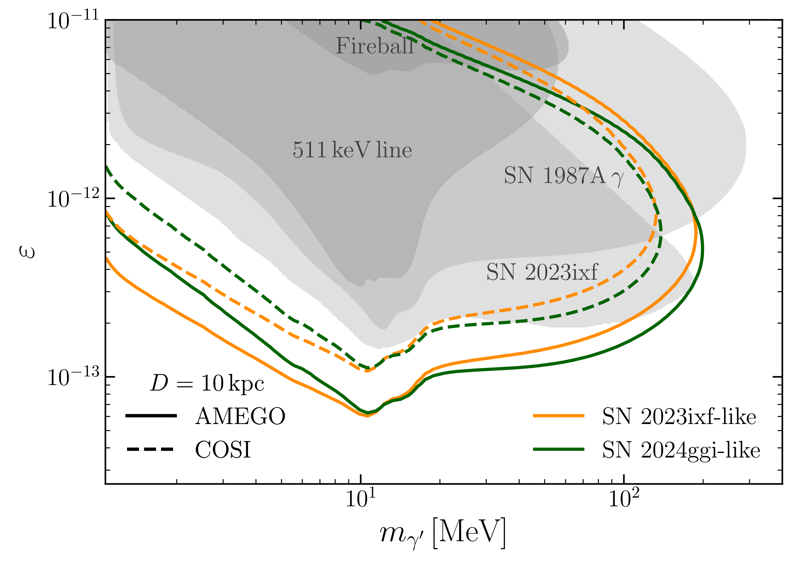
图注：Projected 511 keV sensitivity to the DP parameter space for a CCSN at distance $D = 10$\,kpc. The solid and dashed lines correspond to AMEGO and COSI, respectively, with the benchmark profiles motivated by SN~2023ixf (orange) and SN~2024ggi (green).
对应解读：对应“建议重点查看的图表”第1项暗光子参数空间图，以及“关键图表逐图导读”图4参数空间图。
入选理由：这是论文结论核心图，直接给出暗光子质量与动能混合参数空间中 AMEGO/COSI 对 10 kpc 银河系超新星的 511 keV 可达范围，并区分 SN 2023ixf 与 SN 2024ggi 启发的 CSM 剖面；最能支撑日报关于新增可探测区域、寿命窗口和既有约束之外灵敏度的讨论。
来源与置信度：\(arxiv_source\)；high；\(arxiv_source\) / main.tex:figure[4]
Fig03
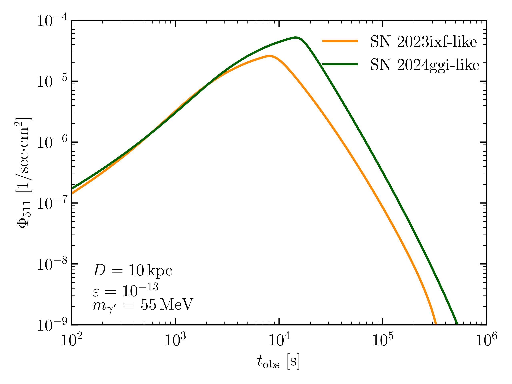
图注：Time-dependent 511 keV flux for a Galactic CCSN at $D=10 \, {\rm kpc}$, with $m_{\gamma^{\prime}}=55 \,{\rm MeV}$ and $\varepsilon=10^{-13}$. The solid lines correspond to the two observationally motivated CSM profiles, SN 2023ixf and SN 2024ggi. The peak tracks the 511 keV photospheric radius, while the extended tail arises from positrons stopping at larger radii and from geometric light travel time delays.
对应解读：对应“建议重点查看的图表”第2项 511 keV 光变曲线，以及“关键图表逐图导读”图3。
入选理由：该图直接展示基准暗光子参数下 511 keV 通量随时间演化，并比较 SN 2023ixf-like 与 SN 2024ggi-like 两种 CSM 模型；可用于判断峰值时间、持续尾部、光行时延迟和 511 keV 光球半径对前兆信号时间窗的影响。
来源与置信度：\(arxiv_source\)；high；\(arxiv_source\) / main.tex:figure[3]
Fig06
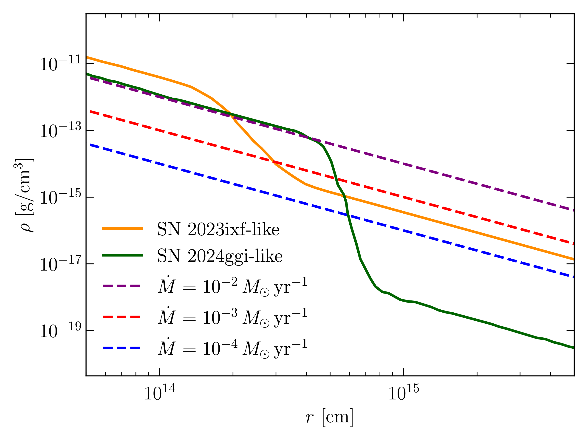
图注：CSM density profiles adopted in this work, the observationally motivated SN 2023ixf-like (orange) and SN 2024ggi-like (green) profiles, and a steady RSG wind with $\dot{M}=10^{-2}\, M_{\odot}\,\mathrm{yr}^{-1}$ (purple dashed), $10^{-3}\,M_{\odot}\, \mathrm{yr}^{-1}$ (red dashed), and $10^{-4}\,M_{\odot}\,\mathrm{yr}^{-1}$ (blue dashed), assuming $v_w=50 \mathrm{~km} \mathrm{~s}^{-1}$ (purple).
对应解读：对应“建议重点查看的图表”第3项衰变半径分布与 CSM 密度剖面对比中的 CSM 密度剖面部分，以及“关键图表逐图导读”图2关于 CSM 剖面的解读。
入选理由：该图给出论文采用的 SN 2023ixf-like、SN 2024ggi-like 以及不同红超巨星稳态风质量损失率的密度剖面，是理解为什么不同 CSM 会改变 511 keV 通量、光变持续时间和参数空间灵敏度的基础。
来源与置信度：\(arxiv_source\)；high；\(arxiv_source\) / main.tex:figure[6]
Fig02
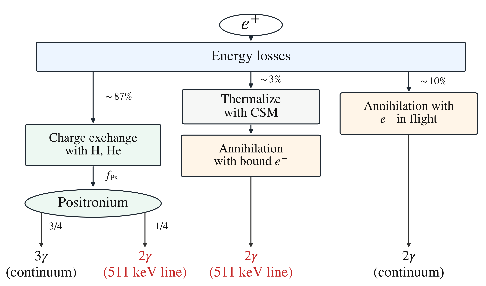
图注：Fate of positrons injected into a cold and neutral CSM. Most surviving positrons form positronium through charge exchange with H or He~\(\cite{Guessoum:2005cb,Prantzos:2010wi}.\) The smaller thermalized component can annihilate directly with bound electrons~\(\cite{Guessoum:2005cb,Prantzos:2010wi},\) while annihilation in flight generates a broad continuum photon spectrum~\(\cite{Beacom:2005qv,Prantzos:2010wi,DelaTorreLuque:2024zsr}.\) The percentages show in the figure indicate branch ratio for each process in the neutral gas benchmark. If energy deposition substantially heats or ionizes the CSM, these branching fractions can change; see text for discussion.
对应解读：对应“建议重点查看的图表”第4项正电子沉积/湮灭效率图或表。
入选理由：该图概括冷中性 CSM 中注入正电子的主要命运，包括正电子素形成、直接湮灭和飞行中湮灭等分支比例；这些分支决定 511 keV 线产额和连续谱背景，是日报中关于 \(f_dep\)、\(f_Ps\) 和湮灭假设不确定性的关键支撑。
来源与置信度：\(arxiv_source\)；high；\(arxiv_source\) / main.tex:figure[2]
Fig08
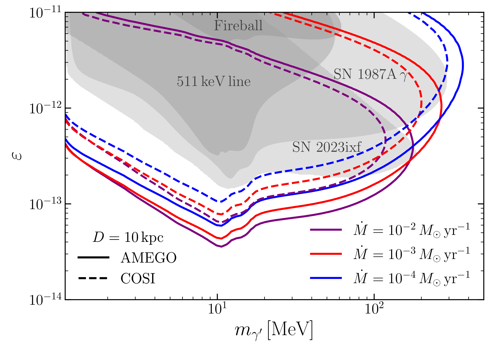
图注：Projected 511 keV sensitivity to the DP kinetic mixing for a CCSN at $D = 10$\,kpc. The purple, red, and blue curves correspond to mass loss rates of $\dot M=10^{-2},\,10^{-3}$ and $10^{-4}\,M_\odot\,\mathrm{yr}^{-1}$, respectively. Solid curves show the projected AMEGO sensitivity, while dashed curves show the corresponding COSI sensitivity.
对应解读：对应“建议重点查看的图表”第7项系统误差/稳健性比较图，以及第5项仪器灵敏度或可探测边界。
入选理由：该图在不同稳态风质量损失率下给出 AMEGO 与 COSI 的参数空间投影，能检验论文结论是否只依赖极端致密 CSM，适合支撑日报关于环境退化、CSM 不确定性和探测可达区域稳健性的讨论。
来源与置信度：\(arxiv_source\)；high；\(arxiv_source\) / main.tex:figure[8]
Fig01
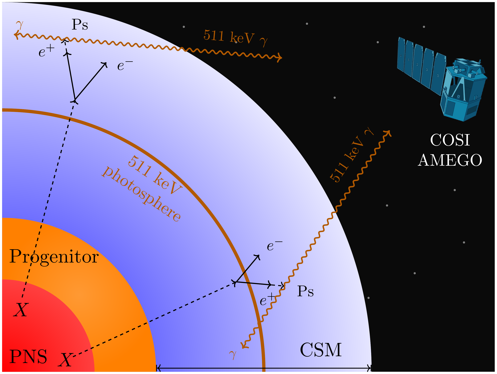
图注：Schematic illustration of the proposed 511~keV line signal. FIPs ($X$) are produced in the PNS and decay into electron-positron pairs in the CSM. After losing kinetic energy and stopping in the CSM, the positrons form positronium and generate 511~keV photons. Photons produced outside the effective 511~keV photosphere can escape and be observed by $\gamma$-ray telescopes such as COSI and AMEGO.
对应解读：对应“关键图表逐图导读”图1物理机制示意图。
入选理由：该图清楚展示 FIP 从原中子星产生、逃逸到 CSM 中衰变为 e+e-、正电子慢化并湮灭产生 511 keV 光子的空间链条，有助于避免把信号误解为超新星内部直接伽马辐射；虽然定量信息少于参数空间和光变图，但对解释物理机制很有价值。
来源与置信度：\(arxiv_source\)；high；\(arxiv_source\) / main.tex:figure[1]
强相关工作
这篇工作与传统超新星轻新粒子约束直接相关。经典路线包括 SN 1987A 中微子持续时间给出的能量损失限制、超新星外部衰变产生伽马射线的限制，以及实验室束流/固定靶对 MeV 暗光子的搜索。本文的差别是把近年早期超新星观测揭示的致密 CSM 纳入信号形成区，因此相关检索关键词应包括 “dark photon supernova constraints”, “SN 1987A energy loss”, “visible decays supernova gamma rays”, “MeV dark photon”.
它也与 SN 2023ixf、SN 2024ggi 的 CSM 研究和早期瞬变观测有关。那些工作通常从光学窄线、紫外光变、X 射线/射电相互作用和红外尘埃回声推断前身星爆发前质量损失；本文则问同一 CSM 能否作为正电子湮灭靶。相关检索关键词包括 “SN 2023ixf circumstellar material”, “SN 2024ggi early spectroscopy”, “red supergiant enhanced mass loss”, “shock breakout dense CSM”.
在 511 keV 线方面，银河系中心弥散正电子湮灭、放射性同位素和紧致天体源是重要背景和类比。本文不是要解释稳态银河 511 keV 过量，而是寻找与单个核心坍缩超新星在时间和方向上重合的瞬变线。应检索 “511 keV line positron annihilation review”, “INTEGRAL SPI 511 keV”, “COSI 511 keV sensitivity”, “AMEGO MeV gamma-ray line sensitivity”。
相反观点或张力主要来自系统误差：若真实 CSM 不够致密、正电子逃逸效率高、或者 MeV 仪器背景线过强，则可达参数空间会收缩。另一个张力是普通 CSM 相互作用本身也会产生复杂高能辐射和尘埃演化，必须通过线能量、时间相关和空间定位来区分。
同一事件 / 同类源线索：
相似工作：
基础理论 / 方法工作：
- https://arxiv.org/abs/0906.0580
- https://arxiv.org/abs/0801.1527
- https://arxiv.org/abs/hep-ph/0611350
相反观点 / 张力线索：
8. FRB 20250607A: Weirder Than Fiction
- 来源：arXiv / astro-ph.HE
- 链接：https://arxiv.org/abs/2609.18086v1
- 作者：J. C. F. Balzan, A. Bera, C. W. James, B. W. Meyers, A. T. Deller, R. M. Shannon, Z. Wang
- 评分：novelty 8/10，importance 7/10，relevance 8/10，final 8.65/10
- 推荐理由：Detailed polarimetric/scattering analysis of a peculiar multi-component FRB, with evidence that component-dependent DM/RM/PA behavior probes inhomogeneous magnetospheric plasma near the progenitor. Relevant to compact-object high-energy transients, though not directly gamma-ray/cosmic-ray focused.
中文题目：FRB 20250607A：一个多分量快速射电暴中的差异色散、圆偏振、时变法拉第旋转与异常偏振角尾迹
做了什么：这篇文章分析了 CRAFT 巡天发现的双分量快速射电暴 FRB 20250607A。作者重点追踪两个脉冲分量在色散、散射、闪烁、偏振角、圆偏振和旋转量上的差异，发现若干现象很难用单一、均匀的传播屏解释：散射时间尺度与闪烁带宽不满足同一个薄屏模型的预期，主导散射屏被限制在离源不超过约 \(61\,\mathrm{kpc}\) 的局域环境；偏振角摆动在散射尾中仍持续存在，没有按简单散射卷积预期变平；两个分量之间看上去有明显的色散差异，但形式统计检验又未给出显著差异。作者还把 FRB 20250607A 与另外两个 CRAFT 多分量 FRB，FRB 20190611B 和 FRB 20210407E，放在一起比较，认为这些分量依赖的电子柱密度、圆偏振和偏振角结构更像是不同射线路径穿过中子星附近不均匀或快速演化磁层，而不是互不相关的若干传播效应。
为什么重要：多分量 FRB 的每个分量可以被看作相隔毫秒甚至更短时间、经过相近但不完全相同等离子体路径的探针。若同一次爆发内不同分量真的具有不同的 \(\mathrm{DM}\)、\(\mathrm{RM}\)、圆偏振和偏振角演化，那么这些差异很难归因于宇宙学大尺度介质，反而直接指向源区附近的高密度、强磁化、强不均匀等离子体。这对 FRB 起源模型很关键，因为它把约束从“宿主星系或星系际介质中有多少电子”推进到“中子星磁层或近源风区在毫秒尺度上是什么结构”。
理论 / 观测 / 仪器方法价值：这篇工作的价值主要在方法和诊断量上。它不是只报告一个总的 \(\mathrm{DM}\)、\(\mathrm{RM}\) 和散射时间，而是对不同脉冲分量做时间分辨、频率分辨和偏振分辨分析，并用散射时间 \(\tau\) 与闪烁带宽 \(\Delta \nu_{\rm d}\) 的不一致来定位散射屏。对观测者而言，这提示 FRB 数据处理中常被当作 nuisance 的分量间残差、偏振角尾迹和圆偏振，可能正是近源等离子体的高灵敏探针。对理论者而言，它要求磁层或近源传播模型同时解释电子柱密度差、偏振转换、法拉第旋转和散射几何，而不能只调一个参数。
为什么应该关注：如果你关心 FRB 是否来自磁星、年轻中子星或其他紧致天体，这篇文章值得看，因为它提供了一个很具体的判据：同一次爆发内不同分量的传播量是否相互一致。若这些差异被后续高信噪比样本确认，FRB 将不只是宇宙重子探针，也会成为中子星近区等离子体层析工具。即使你偏向观测方法，这篇文章也提醒我们：传统的 \(\mathrm{DM}\) 误差、散射模型和偏振校准可能在复杂 FRB 上过于粗糙，统计上“不显著”的差异仍可能包含真实物理信号。
展开详细解读：文章讲解、背景、理论、重点章节、图表与相关工作
文章详细讲解
科学问题：FRB 20250607A 的核心异常在于，同一次快速射电暴的两个分量并不像简单地从同一源区、经同一路径传播出来的两个脉冲。它们表现出分量依赖的表观色散、圆偏振、时间分辨旋转量以及偏振角摆动，而且偏振角结构延续到散射尾中。通常我们会把 \(\mathrm{DM}\) 看作沿视线积分的自由电子柱密度，把 \(\mathrm{RM}\) 看作磁化等离子体的积分效应，把散射看作多径传播的时间展宽。如果这些量在同一次爆发的不同分量之间发生变化，就意味着源区附近等离子体结构可能在空间或时间上极端不均匀。
作者怎么做：作者对 CRAFT 巡天探测到的 FRB 20250607A 做了细致的动态谱和偏振分析。分析并不止于给出一个全局最佳 \(\mathrm{DM}\)，而是比较两个分量各自的频率到达时间、散射尾、闪烁带宽、Stokes 参数、偏振角 \(\psi\) 和旋转量 \(\mathrm{RM}\)。他们还把散射时间尺度 \(\tau\) 与闪烁去相关带宽 \(\Delta \nu_{\rm d}\) 放在同一个传播几何中检验，发现两者无法由单一薄屏同时解释。借助这种不一致，他们把主导散射屏约束在离 FRB 源不超过约 \(61\,\mathrm{kpc}\) 的范围内，而不是银河系内某个普通前景屏。
关键结果：最显眼的现象是两个分量看上去有不同的色散延迟，即所谓表观差异 \(\mathrm{DM}\)。然而，在作者采用的统计误差下，这个差异没有达到显著水平。这一点很重要：视觉上“明显”的动态谱残差和形式统计上的“不显著”之间存在张力，作者认为目前复杂 FRB 的 \(\mathrm{DM}\) 不确定度可能过于保守，或者标准拟合无法完全捕捉分量形状、散射和频率结构带来的协方差。与此同时，偏振角在散射尾中不变平，而是持续摆动；这种行为在 FRB 和脉冲星中都罕见，难以用简单的散射卷积或纯传播延迟解释。
局限和下一步：这项工作最谨慎的地方在于它没有把表观差异 \(\mathrm{DM}\) 宣称为统计上已经确证的探测，而是把它作为与其他 CRAFT 多分量事件共同出现的线索。FRB 20190611B 和 FRB 20210407E 中也有类似的分量依赖电子柱差异，且推断的电子密度反差接近中子星磁层局域等离子体的量级。下一步需要更高信噪比、更宽频带、更好偏振校准和更精细的联合拟合，把 \(\mathrm{DM}\)、散射、谱结构和偏振演化放进同一似然框架，而不是逐项拟合。若未来重复源或更多多分量单发事件显示同样模式，近源磁层解释将更有说服力。
关键结果是怎么做出来的
这篇文章最重要的证据链从样本选择开始。主样本是 CRAFT 探测到的 FRB 20250607A，它具有两个清楚可分的时间分量，因而可以在同一次爆发内部比较传播和偏振量。作者还引入两个 CRAFT 事件 FRB 20190611B 与 FRB 20210407E 作为同类对照，因为它们同样显示分量依赖的电子柱差异或偏振角结构。这里的样本量不大，严格说不是人口统计研究，而是把少数高信息量多分量事件当成近源等离子体探针。
在 FRB 20250607A 上，作者首先检查两个分量的动态谱是否可由同一个 \(\mathrm{DM}\) 对齐。肉眼上，两个分量的频率漂移或到达时间残差似乎需要不同的 \(\mathrm{DM}\)。但当他们用统计模型估计差异 \(\Delta \mathrm{DM}\) 及其不确定度时，差异并未达到显著探测标准。这一结果并不是简单的否定，而是暴露了复杂 FRB 参数估计中的问题：分量本征宽度、散射尾、频率相关结构和信噪比分布都会把 \(\mathrm{DM}\) 后验拉宽，使得视觉差异无法直接转化为高显著性。
散射与闪烁的联合诊断是另一个关键结果。若散射来自单一薄屏，脉冲展宽时间 \(\tau\) 与闪烁去相关带宽 \(\Delta \nu_{\rm d}\) 应近似满足互易关系，数量级上 \(2\pi \tau \Delta \nu_{\rm d}\) 接近几何因子控制的常数。然而 FRB 20250607A 的观测值无法放进同一个薄屏解释。作者据此推断主导散射屏更可能靠近 FRB 源，给出距离源小于约 \(61\,\mathrm{kpc}\) 的约束。这一约束把讨论从银河系前景屏转向宿主星系、局域星云、风区或磁层附近结构。
偏振证据链包括圆偏振、时间分辨 \(\mathrm{RM}\) 和偏振角 \(\psi\) 的演化。通常散射会把不同到达时间的辐射叠加，使快速变化的偏振角在尾部被平均，从而趋于变平或被平滑。但本文报告偏振角摆动穿过散射尾仍持续存在，这对简单传播卷积是很强的挑战。作者同时检查是否存在广义法拉第旋转，即线偏振与圆偏振在磁化等离子体中耦合转换的迹象，但没有找到明确证据。
支持结论的图表应包括动态谱去色散比较、分量级 \(\mathrm{DM}\) 似然或残差图、散射时间与闪烁带宽的薄屏一致性检验、Stokes 参数时间序列、\(\mathrm{RM}\) 随时间或分量变化的图，以及 FRB 20190611B、FRB 20210407E 的对照图。稳健性问题主要集中在偏振校准、频率通道响应、散射模型选择、分量分解方式和 \(\mathrm{DM}\) 误差估计。作者的结论不是“已证明磁层导致所有异常”，而是“多项独立异常在同一方向上指向近源不均匀或演化等离子体”。
展开背景、理论、公式、模型、章节和图表导读
背景知识
快速射电暴是毫秒量级的强射电暂现象，通常用色散量 \(\mathrm{DM}\)、旋转量 \(\mathrm{RM}\)、散射时间 \(\tau\)、偏振分数和宿主定位来诊断其传播路径和源环境。\(\mathrm{DM}\) 由自由电子柱密度决定，\(\mathrm{RM}\) 由电子密度与平行磁场的积分决定，二者合起来可粗略推断磁化等离子体的性质。早期 FRB 研究主要把 \(\mathrm{DM}\) 用作宇宙学距离或星系际介质探针，但重复暴和高时间分辨偏振数据逐渐显示，近源环境可能对观测量有很大贡献。
多分量 FRB 特别有价值，因为同一次爆发中的不同分量共享几乎相同的银河系前景、星系际介质和宿主大尺度路径。若两个分量之间出现 \(\Delta \mathrm{DM}\)、\(\Delta \mathrm{RM}\) 或偏振角结构差异，最自然的解释往往不是大尺度介质在毫秒时间内变化，而是源区附近的发射高度、射线路径或局域等离子体状态不同。这种内部差分测量可以抵消许多前景不确定性，类似把 FRB 自己变成一个高时间分辨的干涉探针。
历史上，FRB 偏振已经给过许多源区线索。例如某些重复源具有极高 \(\mathrm{RM}\) 并随时间变化，暗示处在强磁化环境中；一些爆发显示复杂偏振角摆动，类似但又不完全等同于脉冲星的旋转矢量模型；还有事件显示显著圆偏振，可能来自本征辐射机制，也可能来自传播中的模式耦合或法拉第转换。本文把这些现象集中在一个双分量事件中讨论，因此比单独测一个高 \(\mathrm{RM}\) 或高散射时间更有诊断力。
现在值得重新看这类问题，是因为 FRB 后端的时间、频率和偏振分辨率都在提高，ASKAP/CRAFT、CHIME、DSA、MeerKAT 等项目积累了越来越多高信噪比事件。过去很多分析会把复杂分量合并后拟合一个总 \(\mathrm{DM}\)，或者把散射当作简单指数尾；但如果分量之间确实存在传播量差异，这种处理会抹掉最关键的信息。多分量 FRB 可能是少数能直接探测中子星磁层外层、风区或局域星云小尺度结构的观测窗口。
一个常见误区是把 \(\mathrm{DM}\) 视为绝对、唯一且模型无关的量。实际上，FRB 的最佳 \(\mathrm{DM}\) 取决于你如何定义“对齐”：最大化信噪比、最小化频率相关到达时间残差、对齐子结构，还是拟合物理传播律。另一个误区是把圆偏振直接等同于本征发射，或把所有偏振角变化都解释为源的几何扫掠。本文强调，近源不均匀等离子体、散射和模式传播可能同时影响这些观测量，因此需要联合分析。
基础理论 / 方法脉络
从基础物理图像看，FRB 的射电脉冲穿过冷等离子体时，低频传播速度更慢，产生与频率平方倒数成正比的到达时间延迟。这就是色散。若所有频率通道用正确的 \(\mathrm{DM}\) 校正，窄脉冲应在时间上对齐；若残余结构随频率有系统趋势，就可能说明 \(\mathrm{DM}\) 估计不对，或存在非标准传播、频率依赖发射时刻、散射卷积和谱结构混合造成的表观偏差。
在磁化等离子体中，左右圆偏振本征模具有不同相速度，线偏振的偏振角会随波长平方旋转，这就是法拉第旋转。旋转量 \(\mathrm{RM}\) 对电子密度和视线方向磁场加权积分敏感。若 \(\mathrm{RM}\) 在同一次爆发内随时间变化，可能意味着不同时间片的辐射穿过不同磁化柱，或者偏振角本身包含发射几何变化而非纯传播旋转。本文的时间分辨 \(\mathrm{RM}\) 和偏振角分析正是在区分这些可能性。
散射来自等离子体密度涨落导致的多径传播。最简单的薄屏模型把所有角散射放在一个平面上，预测脉冲轮廓出现近似指数尾，同时动态谱中出现频率相关的闪烁结构。对于单一薄屏，散射时间 \(\tau\) 和闪烁带宽 \(\Delta \nu_{\rm d}\) 不是独立量，而应满足近似互易关系。本文发现这两个量不能由同一薄屏同时解释，所以必须引入更复杂几何、多屏结构，或把主导散射屏放在近源区域。
偏振角尾迹是本文最有意思的诊断之一。若观测到的尾巴只是一个快速变化本征脉冲被指数散射函数卷积，那么尾部每个时间点会混入此前多个时刻的辐射，偏振角快速结构通常会被平均或平滑。FRB 20250607A 中偏振角摆动持续穿过散射尾，说明要么散射与偏振结构不是简单卷积关系，要么尾部辐射不是普通多径延迟造成的，或者传播介质本身对不同偏振模施加了更复杂的时间依赖影响。
本文背后的关键假设是：同一 FRB 的不同分量在大尺度传播路径上几乎相同，因此分量差异优先反映源区附近或发射过程差异。主要退化关系包括 \(\mathrm{DM}\) 与散射时间的退化、分量本征频率漂移与色散残差的退化、偏振角本征摆动与 \(\mathrm{RM}\) 变化的退化，以及圆偏振本征产生与传播转换的退化。这些退化要求高信噪比、宽频带和联合拟合，而不能只靠单一诊断量。
公式与推导
第一步是冷等离子体色散。电磁波在电子等离子体中的群速度由等离子体频率决定，低频信号延迟更大。沿视线积分后，两个频率之间的到达时间差可写为
其中 \(K_{\rm DM}\) 是色散常数，\(\nu_1\) 和 \(\nu_2\) 是观测频率，\(\mathrm{DM}=\int n_e\,dl\)，\(n_e\) 是自由电子数密度，\(dl\) 是路径元。这个公式是判断两个分量是否需要不同 \(\mathrm{DM}\) 的基础。
若同一次爆发的两个分量具有不同电子柱密度，可以定义
这里 \(\mathrm{DM}_1\) 和 \(\mathrm{DM}_2\) 是两个分量的最佳色散量。若差异来自近源区域，银河系和星系际介质项基本相消，\(\Delta \mathrm{DM}\) 主要测量源区附近不同射线路径的电子柱差。
把柱密度差转成局域密度反差时，可用近似尺度 \(L\) 写成
这里 \(L\) 是两条有效射线路径在不均匀介质中采样的长度尺度。若 \(L\) 很小，例如接近中子星磁层或风区尺度，则即使 \(\Delta \mathrm{DM}\) 不大，也对应很高的 \(\Delta n_e\)，这正是本文把多分量差异与磁层等离子体联系起来的物理原因。
法拉第旋转给出磁化电子柱的积分约束：
其中 \(\psi\) 是线偏振角，\(\psi_0\) 是零波长外推偏振角，\(\lambda\) 是波长。旋转量满足
其中 \(B_\parallel\) 以 \(\mu\mathrm{G}\) 为单位时公式系数对应常用天文单位，\(B_\parallel\) 是视线方向磁场。若 \(\mathrm{RM}\) 随时间或分量变化，说明 \(n_e B_\parallel\) 的加权积分或本征偏振角模型发生变化。
散射薄屏模型中，脉冲可近似看成被单边指数响应卷积：
其中 \(I_{\rm int}\) 是本征强度，\(I_{\rm obs}\) 是观测强度，\(H(t)\) 是阶跃函数，\(\tau_\nu\) 是频率 \(\nu\) 处的散射时间。常见湍流近似下有
其中 \(\tau_0\) 是参考频率 \(\nu_0\) 处的散射时间，\(\alpha_s\) 常接近 \(4\) 左右但依赖湍流谱和几何。
闪烁带宽与散射时间在单屏近似下满足数量级关系
其中 \(\Delta \nu_{\rm d}\) 是去相关带宽，\(C_1\) 是与散射几何和定义有关的无量纲常数，通常为数量级 \(1\)。本文发现观测的 \(\tau\) 与 \(\Delta \nu_{\rm d}\) 难以用同一个 \(C_1\) 和同一薄屏解释，因此需要改变屏的位置或模型。
散射屏位置可由几何延迟的尺度关系理解。若源到观测者距离为 \(D\)，屏到源的距离为 \(sD\) 或用等效距离 \(D_{\rm eff}\) 表示，则
其中 \(\theta_s\) 是散射角，\(c\) 是光速，\(D_{\rm eff}\) 包含源、屏和观测者之间的几何组合。给定 \(\tau\) 与闪烁约束，就能限制屏不可能位于任意位置；本文由此得到主导散射屏靠近源、距离源不超过约 \(61\,\mathrm{kpc}\) 的结论。
统计上，比较两个分量是否具有不同 \(\mathrm{DM}\) 可以写成似然比问题：
其中 \(\mathcal{L}\) 是动态谱或到达时间模型的似然，\(\widehat{\mathrm{DM}}_1\) 和 \(\widehat{\mathrm{DM}}_2\) 是两个分量分别拟合的最大似然值，\(\widehat{\mathrm{DM}}_{\rm common}\) 是共同 \(\mathrm{DM}\) 模型的最大似然值。若 \(\Lambda\) 没有超过相应自由度下的阈值，就不能声称显著差异。
偏振数据通常通过 Stokes 参数构造线偏振和圆偏振：
这里 \(Q\) 和 \(U\) 描述线偏振，\(V\) 描述圆偏振。若散射尾中的 \(Q(t)\) 与 \(U(t)\) 仍沿着非平凡轨迹演化，\(\psi(t)\) 就不会简单变平；本文正是利用这一点指出简单散射传播模型不足。
模型拟合 / 应用方法
这类分析的第一层拟合是动态谱模型。通常要同时拟合每个分量的到达时间、宽度、频谱包络、色散量 \(\mathrm{DM}\) 和散射时间 \(\tau\)。若只用最大化总信噪比的方法求一个 \(\mathrm{DM}\)，很容易把分量的本征频率漂移或散射尾误认为色散残差。本文的关键在于比较共同 \(\mathrm{DM}\) 模型和分量独立 \(\mathrm{DM}\) 模型，但最终发现表观差异未达统计显著。
第二层拟合是偏振模型。线偏振角一般按 \(\psi=\psi_0+\mathrm{RM}\lambda^2\) 拟合，但对 FRB 这种时间结构复杂的信号，\(\psi_0\) 可能随时间变化，因此 \(\mathrm{RM}\) 与本征偏振角摆动存在退化。若在不同时间窗分别拟合 \(\mathrm{RM}\)，需要检查频带内 \(Q\) 与 \(U\) 的相位旋转是否真的服从 \(\lambda^2\) 律，而不是由信噪比、通道泄漏或未校准延迟造成。本文报告时间分辨 \(\mathrm{RM}\) 和偏振角尾迹，因此校准与时间窗选择尤其重要。
第三层是散射和闪烁拟合。散射时间 \(\tau\) 可从脉冲尾部轮廓拟合得到，闪烁带宽 \(\Delta \nu_{\rm d}\) 可从动态谱自相关函数或频域结构得到。两者在单薄屏模型中应相互一致；若不一致，可能说明存在多屏、各向异性散射、有限源尺寸、内禀谱结构，或屏位于近源区域。本文选择把不一致转化为对散射屏位置的约束，这是一个有物理含义但依赖模型假设的推断。
参数退化是解读本文时必须重视的部分。\(\mathrm{DM}\) 与 \(\tau\) 会共同影响低频到达时间；分量间时间间隔和频率漂移会影响 \(\Delta \mathrm{DM}\)；圆偏振既可能是本征相干辐射性质，也可能是传播中的模式耦合；偏振角摆动既可能来自发射束扫过视线，也可能来自磁化等离子体传播。稳健的模型应在同一似然中联合处理 Stokes \(I,Q,U,V\)、动态谱和散射响应，而不是逐个量独立拟合后再拼接解释。
实际应用上，读者应关注残差而不只是最佳拟合参数。若共同 \(\mathrm{DM}\) 模型在两个分量上留下相反方向的频率相关残差，即使 \(\Delta \mathrm{DM}\) 统计上不显著，也说明模型可能漏掉了物理或系统项。若散射尾的偏振角残差具有连续结构，而不是随机噪声，也支持简单卷积模型不足。未来更好的做法是做层级贝叶斯模型，把不同 FRB 的分量差异作为同一近源等离子体族群的样本，同时显式纳入仪器校准不确定度。
重点章节 / 结果段落怎么读
数据与事件描述部分应先读。这里会说明 FRB 20250607A 的探测频段、时间分辨率、信噪比、两个分量的时间间隔、动态谱形态和偏振校准步骤。读者需要确认两个分量是否足够分离，是否有足够频率覆盖来独立测量 \(\mathrm{DM}\)、\(\tau\) 和 \(\mathrm{RM}\)。
色散与分量比较部分是全文的核心之一。应重点看作者如何定义每个分量的最佳 \(\mathrm{DM}\)，如何估计 \(\Delta \mathrm{DM}\) 的误差，以及为什么视觉上明显的差异没有达到统计显著。这里不要只看结论句，要看似然曲线、残差图和不同拟合假设下的变化。
散射与闪烁部分给出主导散射屏位置约束。读者应检查 \(\tau\) 的测量频率、\(\Delta \nu_{\rm d}\) 的估计方式、自相关函数或频谱结构是否可能被本征谱调制污染，以及单薄屏关系失效的程度。距离源小于约 \(61\,\mathrm{kpc}\) 的结论依赖这些假设。
偏振分析部分应细读 Stokes 参数、偏振角、圆偏振和时间分辨 \(\mathrm{RM}\)。尤其要看偏振角摆动如何穿过散射尾，作者如何排除简单校准误差，以及广义法拉第旋转为何没有显著证据。这个部分直接关系到“传播效应还是本征发射几何”的判断。
比较样本和讨论部分把 FRB 20250607A 放到 FRB 20190611B 与 FRB 20210407E 的背景下。这里应关注作者是否只是类比，还是定量比较了电子柱密度差和局域密度反差。最后的讨论提出不均匀或演化磁层解释，但读者也应留意替代解释，如多屏散射、等离子体透镜、本征频率漂移和未建模系统误差。
建议重点查看的图表
-
动态谱与去色散图：看两个分量在采用共同 \(\mathrm{DM}\) 后是否仍有频率相关残差，残差方向是否一致，以及低频端是否主导了表观差异。
-
分量 \(\mathrm{DM}\) 似然或后验图：看 \(\mathrm{DM}_1\) 与 \(\mathrm{DM}_2\) 的置信区间重叠程度，\(\Delta \mathrm{DM}\) 是否只是视觉明显但统计宽，误差是否受散射和分量宽度控制。
-
脉冲轮廓和散射尾拟合图：看指数尾模型是否能同时拟合两个分量，尾部残差是否有结构，散射指数或频率标度是否合理。
-
闪烁带宽或动态谱自相关图：看 \(\Delta \nu_{\rm d}\) 的测量是否清楚，是否可能受有限频带、本征谱斑块或射频干扰清除影响。
-
\(2\pi\tau\Delta\nu_{\rm d}\) 或散射屏位置诊断图：看单薄屏预期与观测点之间差多少，约 \(61\,\mathrm{kpc}\) 的上限对误差条和几何假设是否敏感。
-
Stokes \(I,Q,U,V\) 时间序列：看圆偏振在哪个分量中最强，\(Q\) 与 \(U\) 是否随时间平滑演化，偏振信号是否与总强度尾迹同步。
-
偏振角 \(\psi(t)\) 与 \(\mathrm{RM}\) 诊断图：看偏振角摆动是否真的延续到散射尾，时间分辨 \(\mathrm{RM}\) 的误差条是否支持变化，是否存在 \(n\pi\) 跳变或低信噪比偏差。
-
FRB 20190611B 和 FRB 20210407E 对照图或表：看三例事件的 \(\Delta \mathrm{DM}\)、偏振结构和推断密度反差是否在同一物理量级，而不是个别事件的巧合。
关键图表逐图导读
图 1：通常应是 FRB 20250607A 的动态谱和频率求和后的时间轮廓。横轴多半为到达时间，纵轴为频率，颜色表示强度。读图时要看两个分量是否清晰分离、是否存在频率依赖漂移，以及采用标称 \(\mathrm{DM}\) 后各频率通道的峰值是否对齐。陷阱是把本征谱斑块或低信噪比通道误读成色散残差。
图 2：应关注分量级 \(\mathrm{DM}\) 拟合、似然曲线或残差图。横轴可能是 \(\mathrm{DM}\) 或 \(\Delta \mathrm{DM}\)，纵轴可能是似然、信噪比或残差统计量。若两个分量的最佳值分开但置信区间重叠，就对应本文“表观明显但统计不显著”的核心表述。读图陷阱是只看最佳点，不看置信区间宽度和模型自由度。
图 3：散射尾拟合图应显示时间轮廓、未散射模板和指数散射模型。横轴为时间，纵轴为强度，模型线给出不同 \(\tau\) 的拟合。关键是尾部偏离是否随机，还是系统性偏离。若残差在尾部有偏振角相关结构，说明简单强度散射模型没有抓住全部物理。
图 4：闪烁带宽或自相关函数图应以频率滞后为横轴，相关强度为纵轴，或展示动态谱中的频率斑纹。关键要看 \(\Delta \nu_{\rm d}\) 是否由足够多个独立闪烁单元支撑。有限带宽会使 \(\Delta \nu_{\rm d}\) 的误差非高斯，读者应避免把单个谱峰当作稳健闪烁尺度。
图 5：散射屏几何约束图可能展示屏位置、\(\tau\) 和 \(\Delta \nu_{\rm d}\) 的允许区域。横轴可为屏到源或屏到观测者的距离，纵轴可为几何因子或预测 \(\Delta \nu_{\rm d}\)。重点看观测误差带与单薄屏模型的交叉区域，以及约 \(61\,\mathrm{kpc}\) 上限如何读出。陷阱是忽略多屏或各向异性散射会改变几何解释。
图 6：偏振图应给出 Stokes \(I,Q,U,V\)、线偏振分数、圆偏振分数和偏振角 \(\psi\) 随时间变化。横轴为时间，纵轴分别为强度或角度。本文最反常的读图点是 \(\psi\) 在散射尾中仍持续摆动，而不是趋于平缓。读者应检查尾部信噪比和偏振角误差，因为低线偏振时 \(\psi\) 容易偏置。
图 7：时间分辨 \(\mathrm{RM}\) 或 \(Q-U\) 拟合图应展示不同时间窗的 \(\lambda^2\) 旋转是否一致。横轴可能是 \(\lambda^2\) 或时间，纵轴为偏振角或 \(\mathrm{RM}\)。若 \(\mathrm{RM}\) 的变化只在少数低信噪比窗出现，要谨慎；若多个独立窗有连贯趋势，则支持真实磁化环境差异。
图 8：比较事件图或表会把 FRB 20250607A、FRB 20190611B、FRB 20210407E 的分量差异放在一起。应看各事件的 \(\Delta \mathrm{DM}\)、推断 \(\Delta n_e\)、圆偏振和偏振角结构是否共同指向近源等离子体，而不是各自需要完全不同解释。
论文原图 / 可嵌入图片
Fig06
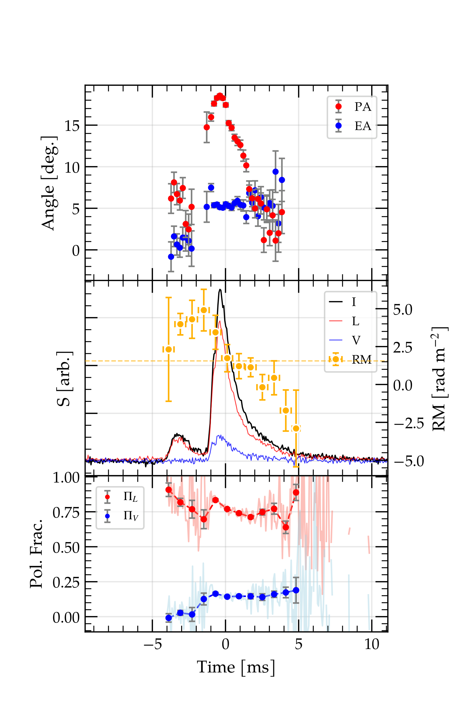
图注：Time-resolved \RM\ and polarisation for \(\frb.\) The top panel shows the polarisation angle and ellipticity angle (decimated by a factor of 12). The middle panel presents Stokes $I$ (with $L$ and $V$ in red and blue, respectively; decimated by a factor of four) together with \RM\ estimates as a function of time in 12 bins; vertical error bars show the uncertainty in \(\RM,\) horizontal error bars indicate the time window over which the \RM\ was computed, and the horizontal dashed line is the mean \(\RM.\) The bottom panel shows the fractional linear and circular polarisation, $\Pi_L$ and $\Pi_V$. The middle and bottom panels are decimated in time by a factor of four.
对应解读：对应“建议重点查看的图表”第6、7项，以及“关键图表逐图导读”图6、图7关于 Stokes I,Q,U,V、偏振角 ψ(t)、时间分辨 RM 和偏振分数的解读。
入选理由：这是支撑本文最反常结论的核心图：同时展示偏振角、椭圆率角、Stokes I/L/V、时间分辨 RM 及线偏振和圆偏振分数。它能直接检验圆偏振在哪个分量最强、PA 是否在散射尾中继续摆动、RM 误差条是否支持时间变化，因此比单独的频谱或调制指数图更适合嵌入日报详细解读。
来源与置信度：\(arxiv_source\)；high；\(arxiv_source\) / main.tex:figure[6]
Fig01
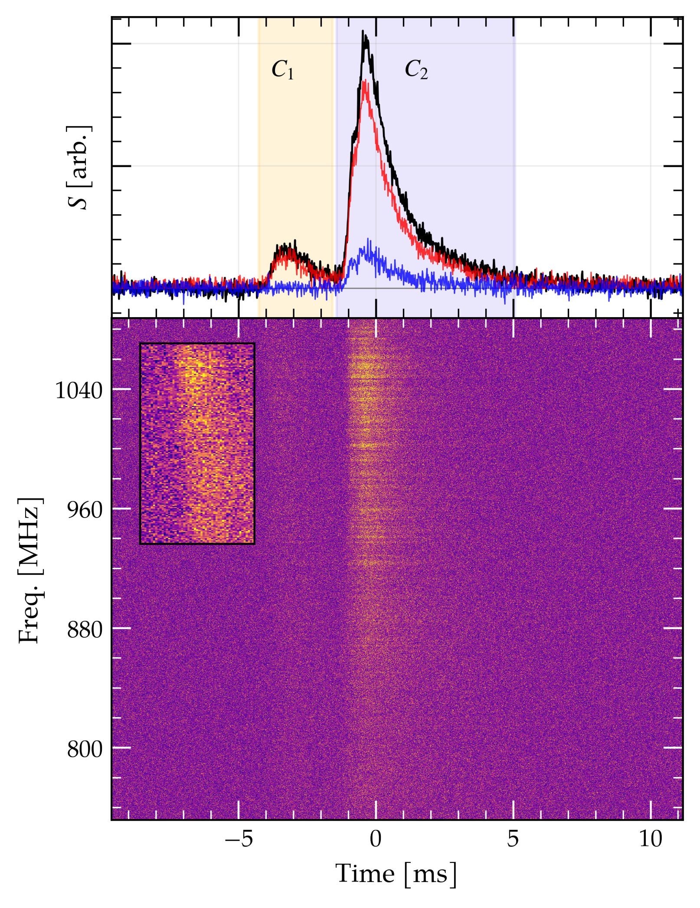
图注：\frb\ dedispersed at \DM\,=\,$335.87$~\pccm\ and derotated at $\RM\,=-428.2$~\(\radm\) with time resolution $\delta t = 0.016688$\,ms and frequency resolution $\delta\nu = 0.120$\,MHz. The bottom panel shows the time-frequency dynamic spectrum, and the top shows the frequency-summed pulse profile, with total intensity in black, linear polarisation in red, and circular polarisation in blue. The yellow and purple shaded regions, labelled $C_1$ and $C_2$, show the time crops used for the individual component analysis, indicating component one and component two, respectively. The dynamic spectrum additionally shows an inset of $C_1$ decimated by a factor of four in time and 16 in frequency.
对应解读：对应“建议重点查看的图表”第1、6项，以及“关键图表逐图导读”图1关于动态谱、频率求和轮廓、两个分量和 Stokes 偏振概览的解读。
入选理由：该图给出 FRB 20250607A 在标称 DM 和 RM 下的动态谱、总强度轮廓、线偏振和圆偏振，并标出 C1、C2 的时间裁剪区域。它是理解两个分量分离、表观频率相关残差、圆偏振和后续分量级分析窗口的基础图，科学上下文价值最高之一。
来源与置信度：\(arxiv_source\)；high；\(arxiv_source\) / main.tex:figure[1]
Fig02
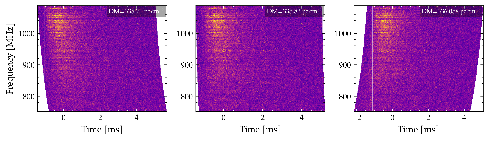
图注：Dedispersed dynamic spectra of \frb\ component 2 evaluated at the lower bound (left), optimum (centre), and upper bound (right) \DM\ values from the SHRINE structure-maximisation confidence interval. The vertical white line indicates the onset of the pulse at the maximum frequency.
对应解读：对应“建议重点查看的图表”第2项，以及“关键图表逐图导读”图2和模型拟合段落中关于分量 DM 置信区间、视觉明显但统计不显著的讨论。
入选理由：该图直接展示 C2 在 SHRINE 结构最大化 DM 置信区间下限、最优值和上限处的去色散动态谱，是检验表观 differential DM 是否稳健的关键证据。它比普通动态谱更聚焦于本文核心张力：肉眼可见的色散差异与统计置信区间之间的关系。
来源与置信度：\(arxiv_source\)；high；\(arxiv_source\) / main.tex:figure[2]
Fig05
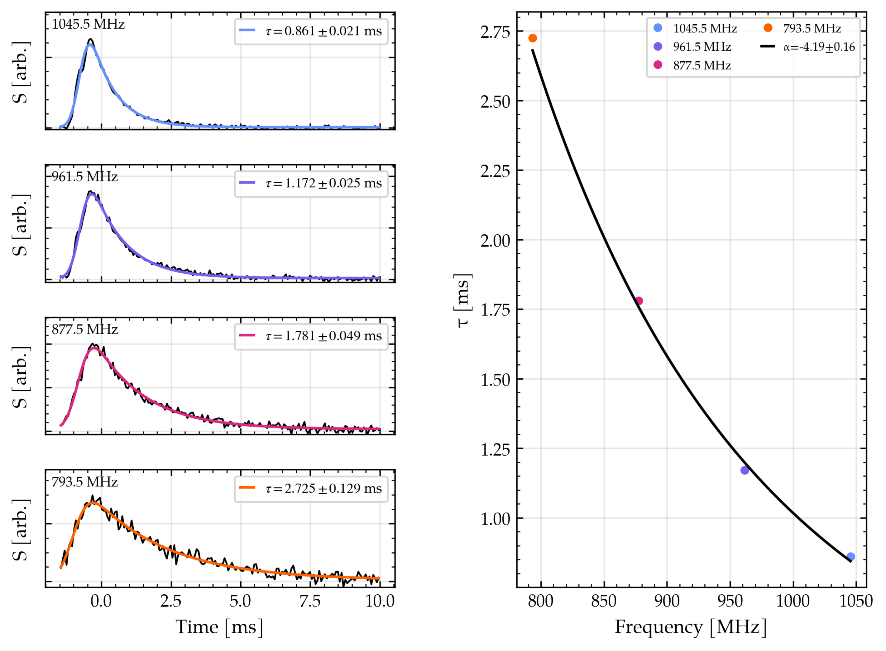
图注：\frb\ component 2 (decimated in time by a factor of four) scattering-index fitting in four equal-bandwidth subbands spanning the observing band.
对应解读：对应“建议重点查看的图表”第3项，以及“关键图表逐图导读”图3和模型拟合段落中关于散射尾、散射指数和频率标度的讨论。
入选理由：该图展示 C2 在四个等带宽子带中的散射指数拟合，可用于判断散射时间随频率的变化是否合理，以及指数散射模型是否能描述不同频段的尾部形状。它直接支撑文中关于散射时间尺度和传播模型的关键推断。
来源与置信度：\(arxiv_source\)；high；\(arxiv_source\) / main.tex:figure[5]
Fig09
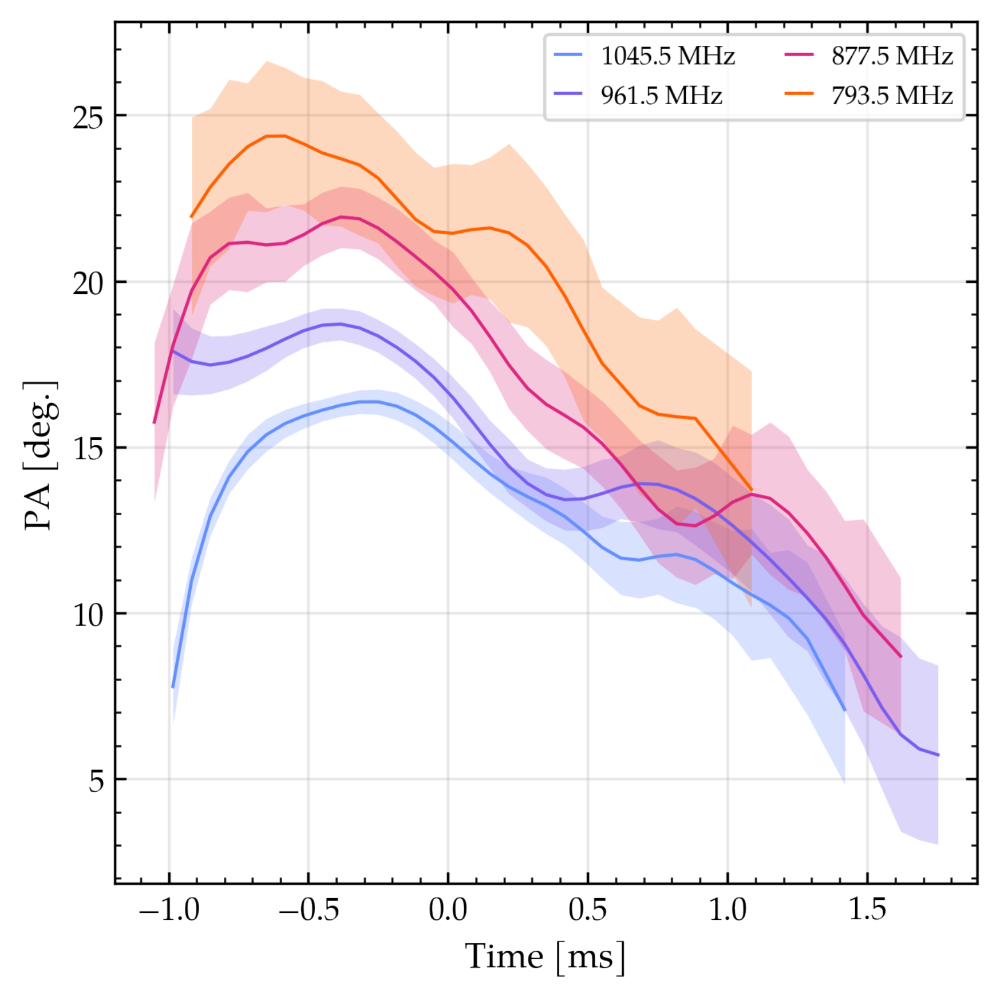
图注：\frb\ $C_2$ (decimated in time by a factor of four) PA profiles in four equal-bandwidth subbands spanning the observing band.
对应解读：对应“建议重点查看的图表”第7项，以及“关键图表逐图导读”图6、图7中关于 PA 结构、频率分带一致性和潜在 nπ 跳变的检查。
入选理由：该图给出 C2 在四个等带宽子带中的 PA profiles，有助于判断偏振角摆动是否跨频段一致、是否可能由低信噪比或频率相关系统误差造成。它是 Fig06 的重要补充，尤其适合检查 PA 尾迹是否为真实时间结构而非单一频带异常。
来源与置信度：\(arxiv_source\)；high；\(arxiv_source\) / main.tex:figure[9]
Fig10
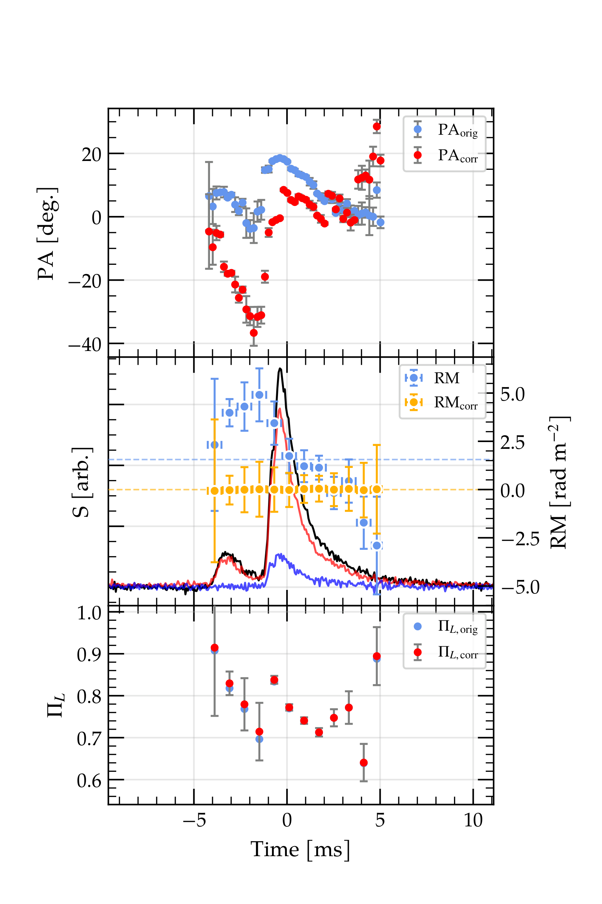
图注：As Figure~\(\ref{fig: RM},\) after reconstructing the dynamic spectrum using the best-fitting time-resolved \RM\ values.
对应解读：对应“建议重点查看的图表”第7项和模型拟合段落中关于时间分辨 RM 校正、RM 与本征 PA 摆动退化的讨论。
入选理由：该图是在采用最佳拟合时间分辨 RM 重建动态谱后的 Fig06 类诊断图，可直接检验时间分辨 RM 校正后偏振结构是否仍然存在。它有助于区分 RM 变化与本征偏振角演化，因此对日报中关于偏振模型退化和校准风险的解读很有支撑作用。
来源与置信度：\(arxiv_source\)；high；\(arxiv_source\) / main.tex:figure[10]
强相关工作
这篇文章与几类已有工作直接相关。第一类是 FRB 偏振和极端 \(\mathrm{RM}\) 研究，尤其是重复源 FRB 121102 等显示的强磁化局域环境；这些工作证明 FRB 源附近可以存在高磁场、高电子密度且随时间变化的介质。第二类是多分量 FRB、下漂移子爆发和复杂动态谱研究，它们提示 FRB 的时间频率结构不能简单看作单个高斯脉冲经冷等离子体传播后的结果。检索关键词可用 “FRB polarization rotation measure time resolved”, “multi-component FRB differential DM”, “FRB scattering scintillation thin screen”, “FRB magnetosphere plasma propagation”。
也有一些潜在相反或竞争解释需要对照。等离子体透镜可以制造频率相关放大和到达时间结构，可能伪装成分量依赖 \(\mathrm{DM}\)；多屏或各向异性散射可以破坏简单的 \(\tau\) 与 \(\Delta \nu_{\rm d}\) 关系；本征发射频率漂移可以在动态谱上看起来像色散校正不足。本文更倾向于不均匀或演化磁层解释，但合理的后续工作应把这些替代模型纳入联合拟合，而不只是定性排除。
同一事件 / 同类源线索：
相似工作：
基础理论 / 方法工作：
相反观点 / 张力线索：
（未提供）
9. Uncovering New Ionized Winds and Relativistic Hot Outflows in MCG-6-30-15 with \emph{Chandra} HETG and a Bayesian Framework
- 来源：arXiv / astro-ph.HE
- 链接：https://arxiv.org/abs/2609.17723v1
- 作者：Erika B. Hoffman, Anna Ogorzałek, Christopher S. Reynolds, Lia Corrales
- 评分：novelty 8/10，importance 7/10，relevance 8/10，final 8.65/10
- 推荐理由：Deep Chandra/HETG X-ray spectroscopy of an AGN with a Bayesian framework finds new ionized wind components, a hot UFO at 0.08c, possible collisionally ionized absorbers, dust in the wind, and useful baselines for XRISM/NewAthena. Strong astro-ph.HE relevance through AGN X-ray outflows, though not gamma-ray focused.
中文题目：用钱德拉 HETG 与贝叶斯框架在 MCG-6-30-15 中揭示新的电离风和相对论性热外流
做了什么：这篇论文重新分析了 Seyfert 星系 MCG-6-30-15 的约 \(0.65\,\mathrm{Ms}\) 钱德拉 HETG 高分辨率 X 射线光栅谱，目标是在复杂吸收线森林中系统寻找电离外流成分。作者用贝叶斯谱拟合框架同时处理暖吸收体、超快外流、碰撞电离吸收体、含尘风和冷星际介质吸收，报告了多个此前未清楚分离的风成分，包括一个速度约 \(0.08c\) 的热超快外流，以及 MCG-6-30-15 中首批可能由碰撞电离主导的吸收体。重要的是，论文不仅给出“有线”的识别，还试图把速度、离化程度、尘埃和几何结构联系起来，为用旧 HETG 数据建立未来 XRISM 和 NewAthena 时代的长期基线提供了样板。
为什么重要：MCG-6-30-15 是 X 射线 AGN 研究中的经典源，过去常被用来讨论宽铁线、强引力反射和暖吸收体。若同一个源中还存在能量学上不可忽略的 \(0.08c\) 热超快外流，那么它就是连接盘风微物理、AGN 反馈和宿主星系影响的关键个案。本文的重要性在于：它显示深度档案光栅数据在新的统计框架下仍能产出新物理，而不是只能等待新望远镜。
理论 / 观测 / 仪器方法价值：对理论而言，本文把传统光电离暖吸收体、可能的碰撞电离相和相对论性热外流放进同一观测图景，迫使风模型同时解释速度、离化参数、温度和尘埃。对观测而言，它给出了 HETG 可达到的线识别和速度分辨能力边界，也暴露了低能 K 壳层原子数据库在 \(\mathrm{O\,IV}\)、\(\mathrm{O\,V}\)、\(\mathrm{O\,VI}\) 附近的限制。对方法而言，贝叶斯模型比较和后验约束比逐线人工识别更适合处理多相吸收体的退化。
为什么应该关注：如果你关心 AGN 反馈，这篇文章告诉你：低红移 Seyfert 中看似“局部”的 X 射线吸收线也可能对应有反馈潜力的高速热风。如果你关心高分辨率谱学，它展示了如何把二十年前的钱德拉数据重新榨出新结果。如果你关心 XRISM、Athena 或 NewAthena 的科学准备，它提供了一个可直接对比的十年尺度外流基线，也指出了未来高通量高分辨率谱学最需要改进的原子数据和统计建模环节。
展开详细解读：文章讲解、背景、理论、重点章节、图表与相关工作
文章详细讲解
科学问题：AGN 风到底由多少个物理相组成、哪些相携带主要动量和能量、以及这些相是否足以参与宿主星系反馈，是 X 射线谱学长期试图回答的问题。MCG-6-30-15 是一个特别困难也特别有价值的对象：它亮、近、谱形复杂，既有著名的内盘反射特征，也有多层暖吸收体。传统分析往往把吸收拆成若干光电离区，但这样可能漏掉高速、热的或含尘的组分，尤其在多条弱线相互重叠时，逐线识别会受到先验判断强烈影响。
作者怎么做：论文使用 2000 年和 2004 年的钱德拉 HETG 数据，总曝光约 \(0.65\,\mathrm{Ms}\)，覆盖软 X 射线到铁 K 能段的高分辨率谱。核心策略不是只在残差图上找线，而是在贝叶斯框架中同时拟合连续谱、冷吸收、暖吸收、可能的尘埃吸收、光电离和碰撞电离等多个物理成分。这样的做法允许作者比较不同吸收成分组合的证据强弱，并在速度、柱密度、离化参数、温度和湍动展宽之间传播不确定度。
关键结果：作者报告了更细致的暖吸收体结构，并发现速度与离化状态之间存在相关性，这对风的几何和加速历史有直接约束。低离化或中等离化组分若速度较低，而高离化组分速度更高，通常暗示风不是随机云团叠加，而可能来自盘风中的径向分层或加速流。论文还首次在 HETG 数据中识别出速度约 \(0.08c\) 的热超快外流；该成分据称已被 XRISM 近期确认，而本文显示它在旧 HETG 数据中也有迹象。此外，论文提出 MCG-6-30-15 中存在可能碰撞电离的吸收体，这一点很重要，因为许多 AGN 风分析默认气体主要受中心源光电离控制。
另一个结果是尘埃与风的联系。作者确认了风中尘埃的存在，并强调它能与冷星际介质吸收区分开来。尘埃若处在外流中，会影响辐射压耦合、元素丰度解释和吸收边形状；把尘埃误归因于银河或宿主冷 ISM，会系统性改变暖吸收体的柱密度和离化推断。论文还指出，\(\mathrm{O\,IV}\)、\(\mathrm{O\,V}\)、\(\mathrm{O\,VI}\) K 壳层跃迁的原子数据限制会影响部分低能谱段的线识别，这是结果解释中必须保留的系统误差。
局限和下一步：HETG 的优势是分辨率和长期档案覆盖，但有效面积有限，弱吸收线的显著性容易受连续谱模型、线混合、原子数据库和背景处理影响。碰撞电离成分与某些高离化光电离成分之间可能存在退化；热 UFO 的能量学也依赖半径、覆盖因子和几何厚度这些无法仅由一条或几条吸收线完全确定的量。下一步最自然的是用 XRISM 的微量热计谱分辨率和更大有效面积检验同一速度系统，追踪十年尺度变化，并在 NewAthena 时代用更高信噪比同时测量多元素、多电离态线列。
关键结果是怎么做出来的
本文最重要的证据链从样本选择开始：作者没有拼凑多个不同仪器的异质数据，而是集中使用同一源 MCG-6-30-15 的钱德拉 HETG 深曝光档案观测，时间集中在 2000 年和 2004 年，总曝光约 \(0.65\,\mathrm{Ms}\)。这使谱分辨率、响应矩阵和交叉定标问题相对可控，同时也提供了足够的累计信噪比去检查弱吸收线。读者应特别注意论文如何合并或分开不同观测纪元，因为外流速度和电离状态可能随时间变化，简单堆叠可能提高信噪比但稀释变动信号。
统计上，论文的关键不是“某条线在残差中看起来像吸收”，而是把多个候选吸收组分放入贝叶斯模型中进行比较。对每个组分，拟合量通常包括柱密度、离化参数或温度、速度偏移、速度展宽以及覆盖相关假设。结论的强弱应看后验分布是否排除零柱密度、速度是否与已知低速暖吸收分离、以及加入新组分后模型证据或信息准则是否有实质改善。尤其对 \(0.08c\) 的 UFO，读者要检查对应线是否在多个离子或多个能段有一致速度，而不是单一残差峰被解释为蓝移线。
暖吸收体的速度—离化相关性是另一个核心结果。这里的样本不是很多独立天体，而是同一源内多个吸收相；因此显著性并不等同于大样本相关系数，而更依赖每个相的后验误差椭圆是否在 \((v,\xi)\) 或类似参数平面上形成有序趋势。支撑这一点的图表应包括吸收组分参数表、速度与离化参数散点图、以及去掉某些低可信组分后的稳健性检验。如果趋势主要由一两个高离化点驱动，物理解释就要更谨慎。
碰撞电离吸收体的识别需要特别审慎。光电离模型和碰撞电离模型在某些温度、离化态和柱密度下可产生相似的 K 壳层吸收特征。本文的价值在于把碰撞电离作为显式备选模型纳入框架，而不是先验排除；但读者应关注模型比较是否真正偏好碰撞电离，还是只是因为原子数据库或低能连续谱残差导致的等效改进。涉及 \(\mathrm{O\,IV}\)、\(\mathrm{O\,V}\)、\(\mathrm{O\,VI}\) 的谱段尤其需要查看残差形态和原子波长不确定性。
系统误差方面，最关键的是连续谱与吸收线之间的耦合。MCG-6-30-15 的 X 射线连续谱含有复杂反射、软超和吸收弯曲，如果连续谱设定不当，窄线的等效宽度和吸收边深度都会偏移。论文的稳健性应体现在：不同连续谱参数化下新风成分是否仍存在；2000 年与 2004 年分开拟合时是否给出一致速度；改变湍动速度或丰度假设时，UFO 与碰撞电离成分是否仍被需要。支持结论的图应包括全谱最佳拟合、局部线区放大、残差改善图、参数后验角图或模型证据比较表。
展开背景、理论、公式、模型、章节和图表导读
背景知识
MCG-6-30-15 是低红移 Seyfert \(1\) 星系中最常被研究的 X 射线源之一。它之所以有名，一方面因为强而宽的 \(\mathrm{Fe\,K}\) 发射线常被解释为内吸积盘相对论反射，另一方面因为软 X 射线中存在复杂的暖吸收体。这个源的谱不是一条简单幂律加几条窄线，而是连续谱、反射、吸收边、窄吸收线和可能的高速风相互叠加的结果。
AGN 暖吸收体的历史问题是：我们看到的蓝移吸收线究竟是低速云团、盘风、尘埃气体混合物，还是更大尺度的窄线区物质？早期高分辨率 X 射线光栅观测已经证明许多 Seyfert 中存在多离化态、多速度的吸收体，但不同组分的物理关联常不清楚。仅凭单一离子的蓝移线，很难判断它来自离黑洞很近的盘风，还是更远处的热等离子体。
超快外流是另一个相关背景。UFO 通常指速度达到 \(0.03c\) 到 \(0.3c\) 量级、由高离化铁或其他高离化离子吸收线指示的 AGN 风。它们的重要性在于动能通量可能达到 AGN 辐射功率的可观比例，从而成为星系尺度反馈的候选入口。但 UFO 的争议也很多：线的显著性、试探因子、连续谱模型、仪器响应和多重比较都可能制造伪特征。
为什么现在值得重新看 HETG 旧数据？一是贝叶斯计算和谱模型工具比二十年前成熟，能更系统地比较多组分模型。二是 XRISM 已开始提供微量热计高分辨谱，未来 Athena 或 NewAthena 将使 AGN 风人口统计进入高精度阶段；旧 HETG 数据可作为长期时间基线。三是原子数据库持续更新，但也暴露出某些低能 K 壳层跃迁仍有不确定性，重新分析能明确哪些结论受原子物理限制。
该领域常见误区包括：把所有吸收都假定为光电离；把尘埃吸收简单归给银河冷 ISM；把单条蓝移线直接等同于强反馈；以及把堆叠后的高信噪比误认为一定代表时间稳定结构。本文的出发点正是避免这些简单化：它同时考虑多种电离机制和尘埃成分，并用统计框架量化新组分的必要性。
基础理论 / 方法脉络
从物理图像看，AGN 中心连续谱照射周围气体，气体中的离子在特定能量吸收 X 射线光子，形成窄吸收线或吸收边。如果气体沿视线向外运动，吸收线会相对静止波长蓝移；蓝移量给出径向速度。不同离子需要不同的离化条件，因此多条线可以约束气体的离化状态、柱密度和速度结构。
光电离暖吸收体通常用离化参数描述，核心是电离光子通量与气体密度的比值。高离化参数意味着原子外层电子被剥离到更高电荷态，谱中会出现 \(\mathrm{O\,VII}\)、\(\mathrm{O\,VIII}\)、\(\mathrm{Ne}\)、\(\mathrm{Mg}\)、\(\mathrm{Si}\) 甚至 \(\mathrm{Fe}\) 的高离化吸收。碰撞电离则不同，它主要由电子热碰撞决定，关键量是温度；在冲击、热风或热界面中，温度而非中心辐射场可能主导离子分布。
本文相关的观测方法是高分辨率 X 射线光栅谱学。HETG 把入射光按能量或波长分散，窄吸收线表现为在仪器线扩展函数宽度附近的通量下降。实际分析不能只看单个 bin 的下降，因为响应矩阵、有效面积、背景、阶次合并和连续谱形状都会影响线深。多组分吸收模型经过仪器响应折叠后与计数谱比较，这就是论文中贝叶斯框架的基础。
关键退化来自几个方向。第一，柱密度与速度展宽退化：未饱和线中等效宽度近似随柱密度增加，但饱和后更多受展宽和覆盖因子影响。第二，光电离参数与总柱密度退化：不同离化态线的组合不足时，高柱低离化与低柱高离化可能给出相近残差。第三，连续谱曲率与吸收边退化：尤其在软 X 射线，反射、软超和低离化吸收边可相互混淆。第四，原子数据库中的波长和振子强度误差会直接映射为速度和柱密度系统误差。
对 UFO 而言，速度本身不是唯一核心，能量学才决定反馈意义。若能估计外流半径、总柱密度、速度和覆盖因子，就可估算质量外流率与动能通量。但这些量中半径和几何覆盖因子最难由单视线吸收谱直接给出，因此“可能影响宿主星系”通常需要在合理半径和覆盖因子假设下理解，而非完全直接测量。
公式与推导
第一步是把谱线蓝移与径向速度联系起来。对速度不太低的 UFO，最好使用相对论多普勒关系而不是简单线性近似：
这里 \(E_0\) 是离子静止系跃迁能量，\(E_{\mathrm{obs}}\) 是观测到的吸收能量，\(v\) 是沿视线外流速度，\(c\) 是光速。若本文报告 \(v\simeq0.08c\)，则线能量偏移已经大到足以要求相对论修正。
第二步是定义光电离模型的核心量：
其中 \(L_{\mathrm{ion}}\) 是通常在 \(1\) 到 \(1000\,\mathrm{Ryd}\) 积分的电离光度，\(n\) 是气体数密度，\(r\) 是气体到电离源的距离。这个量决定光电离平衡中的离子丰度分布；在本文中，不同暖吸收相的 \(\xi\) 与速度 \(v\) 的关系被用来讨论风的几何和加速。
第三步是把柱密度与体密度联系起来：
这里 \(N_{\mathrm{H}}\) 是氢等效柱密度，\(s\) 是视线路径，\(\Delta r\) 是吸收层厚度。若假设 \(\Delta r 第四步是碰撞电离的基本平衡。对某个离子态 \(i\)，稳态近似可写为： 其中 \(n_e\) 是电子密度，\(n_i\) 和 \(n_{i+1}\) 是相邻电离态数密度，\(C_i(T)\) 是碰撞电离系数，\(\alpha_{i+1}(T)\) 是复合系数，\(T\) 是电子温度。与光电离不同，这里离子比例主要由 \(T\) 控制，因此可用来检验本文提出的碰撞电离吸收体。 第五步是谱线光学深度。对频率 \(\nu\) 附近的吸收线， 这里 \(N_i\) 是相关离子柱密度，\(e\) 和 \(m_e\) 是电子电荷和质量，\(f_{lu}\) 是振子强度，\(\phi(\nu)\) 是归一化线型函数。原子数据库中 \(f_{lu}\) 或跃迁能量的不确定性会直接影响 \(N_i\) 和速度推断，这正是 \(\mathrm{O\,IV}\)、\(\mathrm{O\,V}\)、\(\mathrm{O\,VI}\) K 壳层问题的来源。 第六步是观测通量模型。吸收后的源谱可写为： 其中 \(F_E^{\mathrm{cont}}\) 是连续谱，\(k\) 标记不同吸收相，\(b_k\) 是速度展宽参数。本文的多相模型本质上是在估计每个 \(k\) 的物理参数，并判断新增组分是否被数据支持。 第七步是仪器响应折叠。实际拟合的是计数而不是真实通量： 这里 \(\mu_j\) 是第 \(j\) 个谱道的模型期望计数，\(t_{\mathrm{exp}}\) 是曝光时间，\(R_j(E)\) 是能量重分布函数，\(A_{\mathrm{eff}}(E)\) 是有效面积，\(B_j\) 是背景。HETG 数据中的线识别必须经过这一步，否则会高估肉眼残差的物理意义。 第八步是计数谱似然。若每个谱道服从泊松统计， 其中 \(d_j\) 是观测计数，\(\mathcal{L}\) 是似然函数。贝叶斯分析再结合先验 \(p(\theta)\) 得到后验 \(p(\theta|d)\propto\mathcal{L}(d|\theta)p(\theta)\)，用于给出参数可信区间和相关性。 第九步是模型比较。两个模型 \(M_1\) 和 \(M_0\) 的贝叶斯因子可写为： 这里 \(Z_M\) 是证据，自动惩罚过宽参数空间和不必要复杂度。本文声称发现新风成分时，关键就是新增吸收相是否带来足够大的 \(K_{10}\) 或等价证据改善。 第十步是反馈能量学的量级估计。若外流覆盖立体角因子为 \(C_\Omega\)，半径为 \(r\)，速度为 \(v\)，柱密度为 \(N_{\mathrm{H}}\)，则常用估计为： 其中 \(\mu\) 是平均分子量，\(m_p\) 是质子质量。这个公式说明为什么 \(0.08c\) 的 UFO 即使柱密度不极端，也可能在动能通量上变得重要；但它也暴露了半径 \(r\) 和覆盖因子 \(C_\Omega\) 是主要系统不确定性。 本文这类分析的拟合对象是 HETG 的计数谱，而不是未经响应校正的通量点。模型通常由连续谱、反射或软超成分、银河与宿主冷吸收、多个光电离暖吸收体、可能的碰撞电离吸收体、尘埃相关吸收以及高速 UFO 组成。每个吸收相至少需要柱密度、速度、展宽和离化状态参数；碰撞电离相还需要温度，尘埃相还涉及元素耗尽和吸收边结构。 贝叶斯框架的优点是能把参数不确定度和模型不确定度一起表达。实际后验中，\(N_{\mathrm{H}}\)、\(\xi\)、\(v\) 和 \(b\) 常高度相关；若只报告最佳拟合值，读者会低估退化。对新组分的判断应优先看后验是否远离零吸收、速度后验是否窄且不与其他组分混淆、以及证据或预测残差是否明显改善。宽先验会降低贝叶斯证据，过窄先验则可能人为强化特定解释，因此先验选择本身也是需要检查的部分。 残差诊断非常关键。一个可信的新吸收相不应只修正单个异常 bin，而应在多个预期跃迁位置同步减少残差，并且不在其他波段引入新的系统偏差。对于 UFO，最好看到同一速度对应的多条高离化线或与 XRISM 结果一致的速度系统。对于碰撞电离吸收体，应检查它是否改善了一组温度一致的离子线，而不是仅仅替代了连续谱局部弯曲。 系统误差包括仪器有效面积校准、阶次合并、背景估计、交叉色散抽取、时间变动、连续谱参数化和原子数据库。MCG-6-30-15 的宽铁线和反射成分会影响铁 K 区的基线；软 X 射线中低离化氧、铁 UTA 和尘埃边会影响暖吸收体识别。若论文在不同连续谱模型、不同观测纪元、不同能段截取和不同原子数据假设下得到类似新组分，结论就更稳健。 实际应用上，这套拟合框架可以推广到其他有深光栅数据的 Seyfert 和类星体，用于建立 AGN 风人口统计。但要注意选择效应：只有亮、低红移、软 X 射线不被严重遮挡的源才容易看到多相吸收；UFO 若只在高信噪状态出现，档案堆叠会稀释瞬变特征。未来与 XRISM 或 NewAthena 联合时，可把 HETG 后验作为历史先验或比较基线，但不应把二十年前的风结构默认视作当前状态。 数据与样本部分应优先阅读。这里会说明 2000 年和 2004 年 HETG 观测如何筛选、总曝光 \(0.65\,\mathrm{Ms}\) 如何得到、HEG 与 MEG 阶次如何处理、是否分纪元拟合以及采用哪些能段。读者需要确认数据处理选择不会人为制造或抹平窄线。 连续谱与基线模型部分很关键。MCG-6-30-15 的吸收结论高度依赖连续谱设定，因此应检查作者如何处理幂律、软超、反射、宽铁线和冷吸收。任何后续风成分的显著性都建立在这一基线之上。 贝叶斯框架与模型比较部分是方法核心。应重点看参数先验、采样方法、证据计算或模型选择准则、以及新增吸收相的判据。若论文提供后验角图或证据表，这是判断新发现是否稳健的核心材料。 暖吸收体和含尘风结果部分应连着读。这里不仅列出多个吸收相，还讨论速度与离化程度的关系，以及尘埃是否属于外流而非冷 ISM。读者应看参数表中每个组分的速度误差、离化误差和柱密度可信区间。 UFO 与碰撞电离吸收体部分是本文最值得细读的结果段。需要检查 \(0.08c\) 成分对应哪些跃迁、是否与 XRISM 的独立结果一致，以及碰撞电离模型相对光电离模型的优势来自哪里。 讨论与局限部分应关注两个主题：反馈能量学估计是否依赖强几何假设，以及原子数据库限制如何影响低离化氧线的解释。这部分决定了结论能否从“谱线识别”上升到“AGN 反馈约束”。 全谱拟合图：检查 HETG 数据、最佳拟合模型和残差在软 X 射线与铁 K 区是否同时合理，尤其看新增吸收成分是否只修正局部异常。 局部吸收线放大图：重点看与 \(0.08c\) UFO 相关的线区，确认蓝移后多条候选线的位置是否一致，残差改善是否跨多个谱道。 暖吸收体参数表或角图：查看 \(N_{\mathrm{H}}\)、\(\xi\)、\(v\)、\(b\) 的后验宽度和相关性，判断多相结构是否过度参数化。 速度—离化参数图：看不同吸收相是否形成清晰趋势，误差条是否重叠，趋势是否由少数点驱动。 模型比较表：检查加入尘埃、碰撞电离相、UFO 后的贝叶斯证据、信息准则或似然改善，并注意参数数目惩罚。 纪元分解或稳健性检验图：比较 2000 年与 2004 年数据是否支持相同速度系统；若只在合并谱中出现，要警惕时间变动或堆叠伪影。 原子数据敏感谱段图：关注 \(\mathrm{O\,IV}\)、\(\mathrm{O\,V}\)、\(\mathrm{O\,VI}\) K 壳层附近的残差和线标注，判断结论是否受数据库不确定性主导。 图 1：通常应是观测谱或全谱最佳拟合概览。横轴可能是波长或能量，纵轴是计数率、通量或数据与模型比值。读图时不要只看整体 \(\chi^2\) 或视觉贴合，而要看软 X 射线低能端和铁 K 区是否存在成片同号残差；如果全谱基线已经有系统偏差，后面窄线显著性会被高估。 图 2：应重点对应暖吸收体线区的局部放大。横轴若用波长，蓝移线会相对静止实验波长向短波移动；若用能量，则向高能移动。读者应看多条离子线是否由同一个速度解解释，而不是每条线单独调速度。模型线中若包含多个吸收相，要注意颜色或线型代表的物理成分。 图 3：若论文给出速度与离化参数关系图，横轴可能是 \(\log \xi\)，纵轴是外流速度 \(v\) 或 \(\beta\)。关键是误差条和后验椭圆：趋势是否显著、是否有离群点、低离化相和高离化相是否真的分离。读图陷阱是把同一模型分解出的多个组分当成完全独立数据点。 图 4：UFO 证据图应展示 \(0.08c\) 速度系统对应的局部谱段。读者要检查静止能量标线、蓝移模型标线和数据残差是否对齐；还要看加入 UFO 前后的残差比值是否有物理一致性。如果只有单个窄残差被解释为 UFO，证据弱于多线共同匹配。 图 5：碰撞电离与光电离模型比较图可能展示两个模型在低能氧线区的残差差异。横轴多为波长，纵轴是数据/模型或 \(\Delta C\) 类诊断。读者应关注改进是否集中在受原子数据不确定性影响最大的 \(\mathrm{O}\) K 壳层区域；若是，结论应被视为候选而非完全定论。 图 6：后验角图或参数相关图是判断模型是否过拟合的关键。应看 \(N_{\mathrm{H}}\) 与 \(\xi\)、\(v\) 与 \(b\)、温度 \(T\) 与柱密度之间是否存在长尾或多峰。如果 UFO 速度后验有多个峰，可能意味着不同线识别方案都可行。 图 7：模型证据或信息准则表若存在，应按模型层级阅读：基线模型、加入普通暖吸收、加入尘埃、加入碰撞电离、加入 UFO。关键不是绝对拟合统计量，而是新增复杂度是否被数据足够补偿。模型拟合 / 应用方法
重点章节 / 结果段落怎么读
建议重点查看的图表
关键图表逐图导读
论文原图 / 可嵌入图片
Fig06
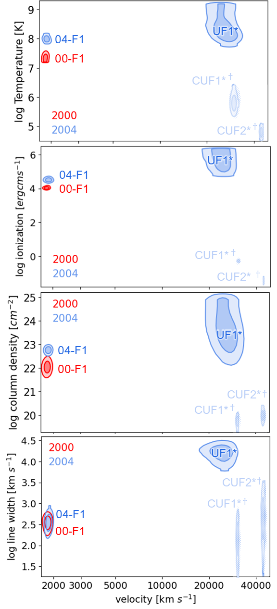
图注：2D posterior probabilities of fast \& ultra-fast outflow (UFO) parameters with velocity on the x-axis. Temperature (top) for collisionally ionized (CIE) winds, ionization parameter for photoionized (PIE) winds, hydrogen column density, and line width (bottom) are on the y-axes. The 2000 results are red, and 2004 in light blue. Contours indicate 1 \& 2$\sigma$ errors. New hot \& likely unphysical cool UFOs are seen in the deeper 2004 data. The change of 00-F1/04-F1 may be an artifact of the time-averaged analysis. \ \footnotesize{\emph{* ambiguous whether the CUF1-2 \& UF1 are CIE or PIE.} \ \emph{$\dagger$ CUF1-2 are limited by systematic uncertainty in atomic data}.}
对应解读：对应“局部吸收线放大图”“后验角图或参数相关图”“纪元分解或稳健性检验图”以及模型拟合段落中关于0.08c UFO、CIE/PIE退化和原子数据系统误差的讨论。
入选理由：这是最直接支撑本文核心新结果的图：以速度为横轴展示快速与超快外流的二维后验，并同时给出温度、离化参数、柱密度和线宽的1、2σ轮廓。它能检验UFO速度后验是否清晰、2000与2004是否一致、热UFO与较冷且可能不物理的解是否混淆，还明确标注CUF/UFO成分的CIE/PIE歧义和原子数据系统误差，比单纯谱图更能判断新高速成分是否稳健。
来源与置信度：\(arxiv_source\)；high；\(arxiv_source\) / \(eh_man_revised.tex\):figure[6]
Fig05
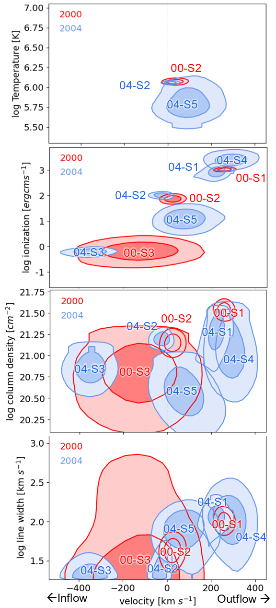
图注：2D posterior probabilities of slow inflow (negative) and outflow (positive) wind components. A dashed line indicates MCG-6's rest frame. Temperature (top) for collisionally ionized (CIE) winds, ionization parameter for photoionized (PIE) winds, hydrogen column density, and line width (bottom) are on the y-axes. The 2000 results are represented in dark red, \& the 2004 in light blue. Contours indicate 1 \& 2$\sigma$ error. The stable WAs show a possible trend between ionization and outflow velocity and are seen as more distinct gases in the deeper 2004 data. All WAs are well represented in PIE, but two may also be in CIE.
对应解读：对应“暖吸收体参数表或角图”“速度—离化参数图”以及关键图表导读中关于暖吸收体多相结构、速度—离化相关和参数退化的部分。
入选理由：该图展示慢速内流/外流吸收体的二维后验，包含速度、温度或离化参数、柱密度和线宽，并区分2000与2004数据。它正好用于检查暖吸收体是否真的呈现速度—离化趋势、误差轮廓是否重叠、2004深数据是否分辨出更多相，以及CIE解释是否与PIE退化，是判断多相结构是否过度参数化的关键图。
来源与置信度：\(arxiv_source\)；high；\(arxiv_source\) / \(eh_man_revised.tex\):figure[5]
Fig08
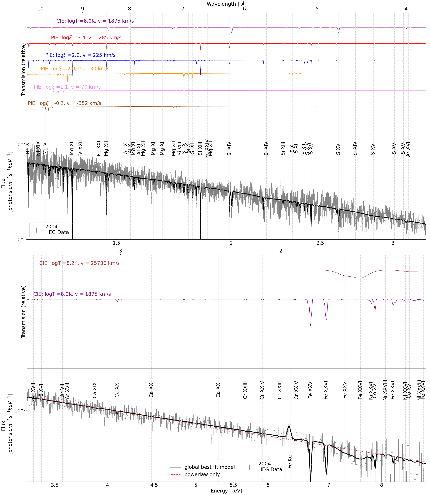
图注：(Continued) Lower panels: Multidimensional best fit model (black line) with unfolded 2004 HEG data keV (gray points) in log-log space. The last lower panel includes the powerlaw component (dashed red line) to highlight the broad hot UFO component $\sim$7--8 keV, which spans $\sim$ 30 data points dipping below the main continuum.
对应解读：对应“全谱拟合图”“局部吸收线放大图”以及图4式UFO证据图的导读，特别是铁K/高能区0.08c热UFO的残差和连续谱基线检查。
入选理由：该图给出2004年HEG高能谱段的多维最佳拟合模型，并特别用功率律分量标出约7–8 keV的宽热UFO吸收，该特征跨约30个数据点低于主连续谱。它比只看参数后验更直观地展示UFO是否只是单个窄bin异常，还是在铁K附近形成连续、物理一致的吸收结构。
来源与置信度：\(arxiv_source\)；high；\(arxiv_source\) / \(eh_man_revised.tex\):figure[8]
Fig07
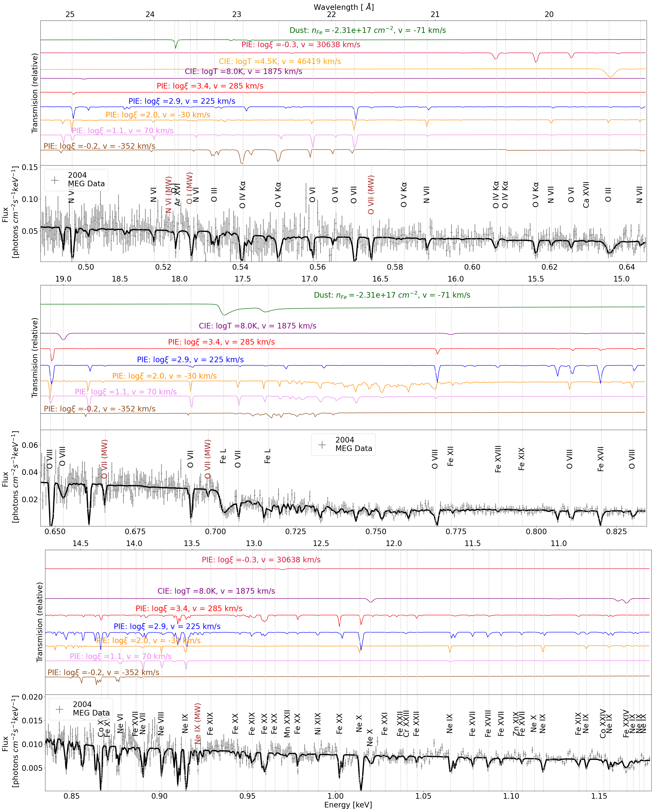
图注：Lower panels: Multidimensional best fit model (solid black line) with 2004 unfolded MEG data (gray points), and ions contributing the most absorption at a given energy. Upper panels: The transmission for 10 absorbers intrinsic to MCG-6-30-15 (various colors). Features from neutral Galactic and hot Milky Way Halo absorption are labeled `MW'. Spectra were combined and optimally binned for plotting purposes.
对应解读：对应“全谱拟合图”“局部吸收线放大图”“原子数据敏感谱段图”以及模型拟合段落中关于软X射线暖吸收、尘埃/冷吸收区分和多离子贡献的讨论。
入选理由：该图展示2004年MEG软X射线谱、最佳拟合模型以及10个源内吸收体的透射曲线，并标出主要贡献离子和银河/热晕吸收。它适合检查新增吸收成分是否只修正局部残差，低能氧线、铁UTA、尘埃边及银河成分是否被混淆，也能帮助读者理解多吸收相如何共同塑造软X射线谱。
来源与置信度：\(arxiv_source\)；high；\(arxiv_source\) / \(eh_man_revised.tex\):figure[7]
Fig04
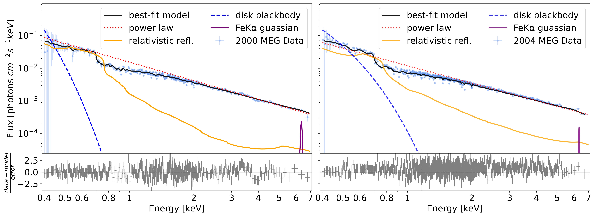
图注：Binned and combined unfolded MEG spectrum of the 2000 (left) and 2004 (right) observations, 0.4-7 keV. The best-fit model (black) is binned more than the data (light blue) to highlight the broadband features. We find the same broadband models best represent both datasets.
对应解读：对应“全谱拟合图”和“纪元分解或稳健性检验图”，用于检查2000与2004两个时期的宽带基线模型是否一致。
入选理由：该图给出2000和2004年合并MEG 0.4–7 keV展开谱及最佳拟合宽带模型，是判断后续窄线和吸收相识别是否建立在合理连续谱基线上的基础。它也直接回应日报中对不同纪元是否支持相同宽带模型、是否存在时间变动或堆叠伪影的关注。
来源与置信度：\(arxiv_source\)；high；\(arxiv_source\) / \(eh_man_revised.tex\):figure[4]
Fig10
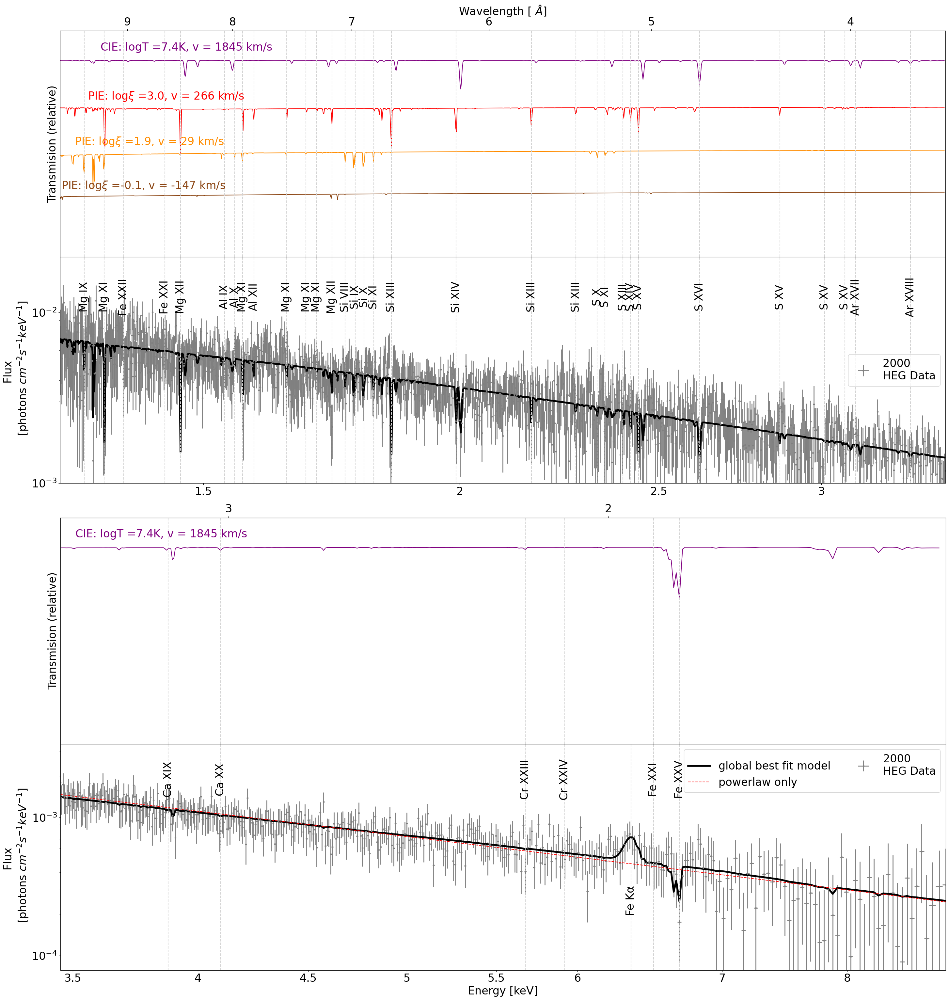
图注：(Continued) Lower panels: Multidimensional best fit model (black line) with 2000 HEG data keV (gray points) in log-log space. The last lower panel includes the powerlaw component (dashed red line) to highlight the broad hot UFO component was undetected in the 2000 data.
对应解读：对应“纪元分解或稳健性检验图”和UFO证据讨论，特别是2000年数据中热UFO未探测到的问题。
入选理由：该图展示2000年HEG高能谱段，并明确说明2000数据中未探测到宽热UFO。与Fig08的2004年探测图配合，可以检验0.08c高速外流是否具有时间变化、信噪比依赖或堆叠分析伪影，是评估UFO稳健性和长期变异性的必要对照图。
来源与置信度：\(arxiv_source\)；high；\(arxiv_source\) / \(eh_man_revised.tex\):figure[10]
强相关工作
这篇工作与 MCG-6-30-15 的大量历史研究直接相连，包括宽 \(\mathrm{Fe\,K}\) 线、相对论反射、暖吸收体和 X 射线变动性。读者检索时可用关键词 “MCG-6-30-15 Chandra HETG warm absorber”、“MCG-6-30-15 XMM Newton RGS warm absorber”、“MCG-6-30-15 broad iron line”、“MCG-6-30-15 XRISM UFO”。同一源的旧研究常常强调连续谱和反射解释，而本文把重点放在用新统计框架重新分解吸收结构。
在同类源层面，它应与 NGC 3783、NGC 5548、IRAS 13224-3809、PDS 456 等 AGN 风研究对照。NGC 3783 和 NGC 5548 是多相暖吸收体的经典样本，PDS 456 是强 UFO 和反馈讨论的代表，IRAS 13224-3809 则展示了高度变动的盘风。对立或张力主要来自谱线显著性和连续谱模型：某些 UFO 候选在不同连续谱或不同统计处理下会变弱，因此检索关键词还应包括 “AGN ultra-fast outflow significance”、“Bayesian X-ray absorption line search”、“photoionized versus collisionally ionized AGN absorber”。
方法上，这篇论文也应放到高分辨 X 射线谱学工具链中理解：钱德拉 HETG 和 XMM-Newton RGS 提供了早期光栅谱基线，XRISM Resolve 正在给出更高通量的微量热计谱，未来 Athena 或 NewAthena 将把个例分析推向样本统计。相关检索关键词包括 “Chandra HETG AGN outflows”、“XRISM AGN winds”、“Athena X-IFU AGN feedback”、“XSTAR photoionization warm absorber”、“SPEX pion/cie AGN absorber”。
同一事件 / 同类源线索：
相似工作：
- https://arxiv.org/abs/astro-ph/0206095
- https://arxiv.org/abs/astro-ph/0310843
- https://arxiv.org/abs/1311.2326
- https://arxiv.org/abs/1507.06565
基础理论 / 方法工作：
- https://arxiv.org/abs/astro-ph/0004366
- https://arxiv.org/abs/astro-ph/0507114
- https://arxiv.org/abs/1001.4052
- https://arxiv.org/abs/1207.1684
相反观点 / 张力线索：
说明
评分由 LLM 给出初评，再由本地阈值策略过滤；IACT、TeV 伽马射线和高能中微子天文学按重点方向处理。